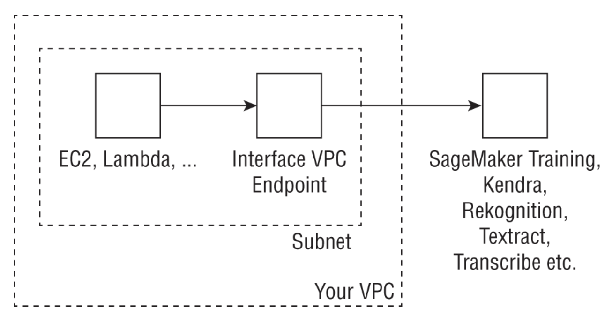
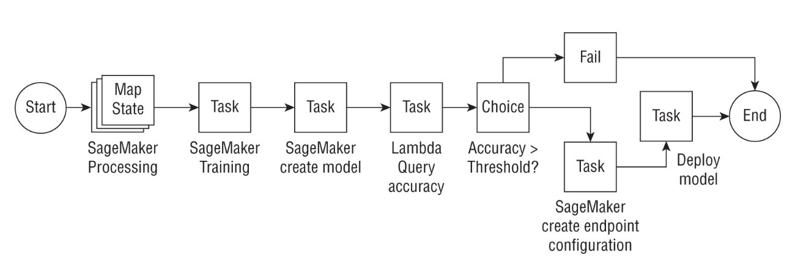
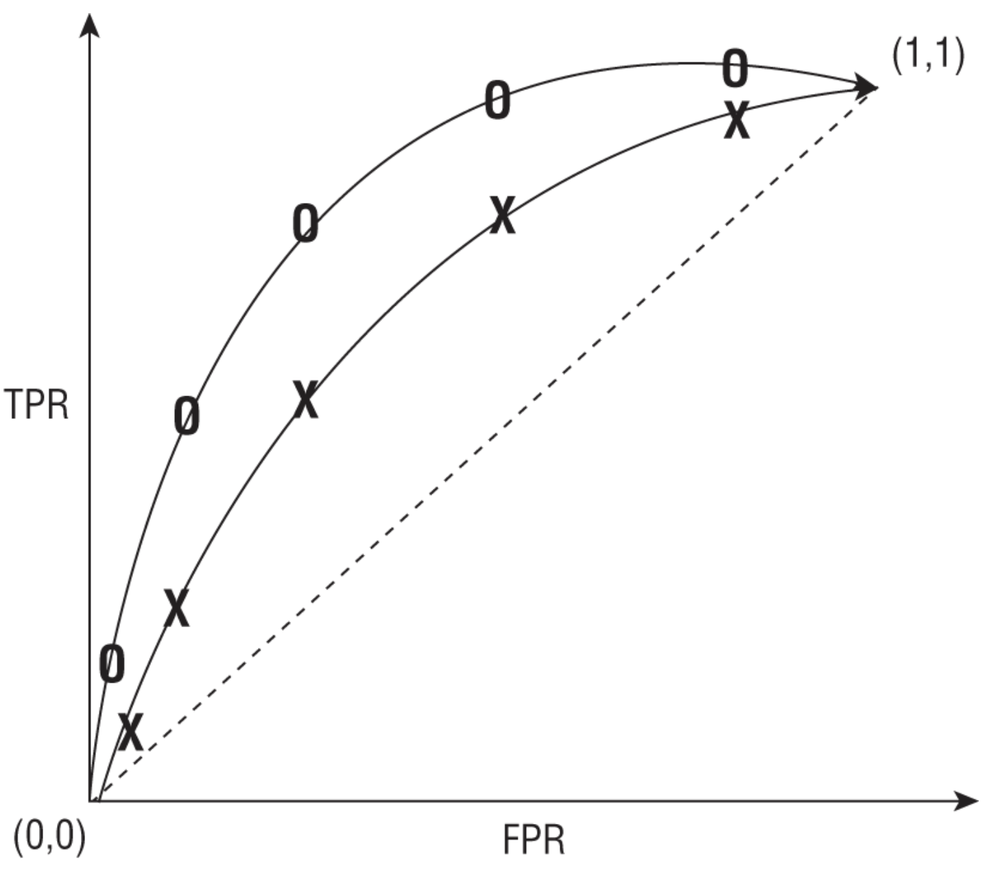
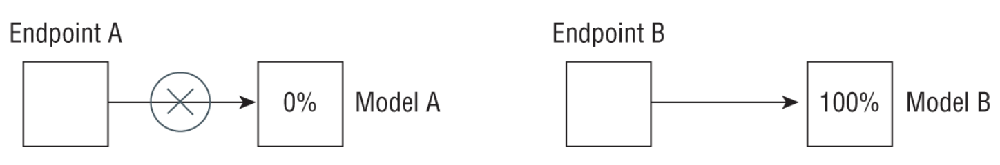

1. AWS AI/ML Stack1.1. Amazon RekognitionFor image and video analysis workflows.It does:Image classificationObject detectionDetection of text in imageFacial recognitionSentimentPublic safetyUse pre-trained models or custom train models without having to write code.Image classificationMostly use CNN using convolutional layers that applies various filters on input data, followed up by pooling layers (to reduce the number of parameters).Initial layers capture low-levelfeatures likes edges and curves.Latter layershigher-level features to eventually identify the object.Many popular architectures e.g. ResNet, InceptionV4, EfficientNetTransfer learning refers to taking a model that was pretrained on one dataset, freezing the initial layers, and letting it relearn the last few layers of the model on a different dataset. The benefits are:Computationally less expensive.When you don't have a lot of training data or labeling is expensive.Both ResNet, InceptionV4 are popular choices for transfer learning.Object detectionThe fundamental architecture is similar to image classification.But the model aims to detect a bounding box encapsulating the object of interest.Single-Shot Detector (SSD)R-CNNFaster R-CNNYOLO v4 (as of April 2023, YOLO v8 is also released).Semantic segmentationSegments the object of interest in an image by classifying whether or not an object belongs in a given pixel.EXAMPLE detecting a tumor in a human tissue.Amazon Rekognition can be used for:Image LabelingCustom Image LabelingFace Detection and SearchPeople Paths track the movement of people in a video.Text DetectionCelebrity DetectionPersonal Protective Equipment (PPE) detect PPE on persons in an image.
TipLook out for key phrases like without any prior machine learning/deep learning knowledge or cost effective or any of the use cases just described to think of Amazon Rekognition as the solution.If the question contains a phrase like custom model, unless it has to do with image labeling, usually Amazon Rekognition is not the answer.
Amazon Rekognition can operate on both static images or stored videos.Image operations Synchronous i.e. you'll get the results right away.Video operations Asynchronous once the job is completed, it notifies Amazon SNS by publishing to an SNS topic.* You'll have to call a Get* API to access the outputs.Amazon Rekognition does not support all video operations e.g. PPE detection API only support images.Likewise, some operations are only available for videos e.g. People PathingEXAMPLE Object detectionJust need to pass the location of image files in S3.If using boto, i.e. Amazon's Python SDK, then you need to make the following call (based on this AWS guide):
NOTE: For videos, you need to pass in the location of the video in S3.The API is StartLabelDetectionYou also need to pass in an SNS topic for Amazon Rekognition to push a notification to, once it completes the video labeling task. You can then call a GetLabelDetection API to access the outputs.NOTE: A key benefit of Amazon Rekognition Video is that you can work with streaming videos.Amazon Rekognition can ingest streaming videos directly from Amazon Kinesis Video streams, process the videos, and publish the outputs to Amazon Kinesis Data Streams for stream processing.Rekognition Video can then process the incoming video stream using the CreateStreamProcessor API, passing the Kinesis Video stream as input. The outputs of the analysis will be published to Kinesis Data Streams. From Kinesis Data Streams you can use AWS Lambda as a consumer to publish the outputs to S3 or to a key-value store such as Amazon DynamoDB. The following graphic illustrates the high-level architectural flow.
TipThe quality of Rekognition's output strongly depends on the quality of your image. Refer to the best practices documentation for more on this subject. In particular, for object detection, the object must be at least 5 percent in size of the shorter pixel dimension.
TipIf you are looking to build a scalable image or video analytics workflow, consider using tools like the AWS Lambda function to make Amazon Rekognition API calls in a serverless manner. You may also consider using Amazon SQS to queue your incoming data to prevent throttling of Amazon Rekognition APIs. See a detailed architecture pattern here.Make sure to read Rekognition FAQ.
Back To Top1.2. Amazon TextractIt allows you to quickly extract intelligence from documents such as:financial reports, medical records, tax forms, university application forms beyond simple optical character recognition (OCR).You can quickly build automated document processing workflows, which are largely manual today.
TipNote that Textract is used for extracting forms, tables, and text from PDFs or images. It does not do document classification, sentiment analysis, or entity recognition on those documents themselves. That is done by a different service called Amazon Comprehend.
Common use cases for Amazon Textract include the following:Creating a search index by storing the outputs of Textract document analysis in a key-value store like DynamoDB.Mining text from documents for natural language processing (NLP): Textract can extract words, lines, and tables that you can subsequently use in NLP-based workflows.Automating data capture from forms: Textract can extract information from structured documents such as tax forms or application forms.Cost effective: As with most AWS services, you pay for what you use, or what documents you analyze in Textract's case.1.2.1. Sync vs. Async APIsDocuments can come in many different sizes, varying lengths, scanned images in PNG or JPEG format, or multipage PDFs.For the synchronous APIs: You have the option of passing a document to Textract for processing either as:* a byte array or * as an Amazon S3 object. You can use a synchronous API such as DetectDocumentText or AnalyzeDocument to return a JSON output containing the detected or analyzed text. The Analyze API also recognizes the hierarchy in a document such as form data, tables, and lines and words of text. The Detect API only detects text.Amazon Textract returns the text as a key-value pair, allowing the user to seamlessly ingest these outputs into a key-value database store. Similarly, tables and table data are returned as Block and Cell objects, respectively, providing the bounding box information about the table location in the document, followed by information about underlying cells in the table.For documents in PDF form or documents that are larger than a single page, use the async APIsStartDocumentAnalysis and StartDocumentTextDetection . Since detecting text in large documents can take some time, Amazon Textract will process your documents behind the scenes and publish the Completion status to an SNS topic. A subscriber to this topic will be subsequently notified that the job is complete and can view the outputs by calling the GetDocumentAnalysis or GetDocumentTextDetection API. The outputs of the job can then be stored in a DynamoDB table, an Amazon S3 bucket, or another data store.1.2.2. Real-World Use CaseA medical company wants to extract text from patient forms for downstream processing such as improving the overall patient experience using machine learning.The company has millions of PDF documents currently stored in Amazon S3.Other requirements* Observing HIPAA* Needs human review of ML outputsSolutionAmazon Textract can be a potential solution here since it is HIPAA eligible and has async APIs to extract text from large numbers of PDF documents with a pay-as-you-go pricing model. Amazon has a service called Amazon Augmented AI (Amazon A2I) that can directly integrate with the Textract document analysis API to send documents for human review based on a particular threshold condition such as low confidence on the detected text (Figure 1).
Figure 1:Amazon Textract Use Case
Back To Top1.3. Amazon TranscribeImagine a global hotel chain that receives a large volume of incoming customer call voice data and needs both real-time/streaming and batch transcription. The calls could be in different languages.Amazon Transcribe a cost-effective and scalable solution that doesn't require a significant setup.Approach Automatic Speech Recognition (ASR) powers Amazon Alexa.Under the hood, ASR uses seq-to-seq models.1.3.1. Transcribe FeaturesStream and Batch ModeTranscribe supports both streaming and batch transcription modes. For streaming transcription, audio is directly streamed via the HTTP/2 protocol. Transcribe provides a streaming client, or you have the option to use your own client with the WebSocket protocol. For existing audio files stored in S3, you can run a batch transcription job using the StartTranscriptionJob API.Multiple Language Support Multiple Language TranscriptionTranscribe does not require your audio to contain a single language. If you know whether your audio will include additional languages, you can pass the language code as part of your API call by specifying LanguageOptions. See here for the full list of supported languages.Job QueuingTranscribe provides options for you to send jobs to a queue so that you don't have to build custom logic to prevent API throttling.Custom Vocabulary and Filtering Transcribe provides a custom vocabulary that includes a list of words you want Transcribe to recognize, such as proper nouns or domain-specific language. Additionally, you can filter unwanted words such as any profane or offensive language.Amazon Transcribe now lets you build a custom language model simply by providing your text as an input. * Transcribe will build the model, and then you can use this model instead for your domain-specific transcriptions.Automatic Content RedactionIf your audio includes personally identifiable information (PII), Transcribe gives you the option to redact it from the transcribed output or provide both unredacted and redacted scripts. This information may include entities such as account numbers, credit card numbers, names, U.S. phone numbers, and U.S. Social Security numbers. Note that this feature is only available in English.Language IdentificationTranscribe will identify the dominant language in your transcription.Speaker IdentificationThis feature allows you to identify different speakers in a transcription for English audio.1.3.2. Transcribe MedicalAmazon Transcribe Medical is an ASR service that enables you to transcribe medical audio such as physician dictation, patient-to-physician conversations, and telemedicine. Transcribe Medical is available both in streaming and batch mode (only for Primary Care) and allows you to build custom vocabularies and redact personal health information (PHI) from your streaming transcriptions. For more information on Transcribe Medical, see the following document.
TipRemember, not all AI services have a medical specialty. Among the ones that do are Comprehend and Transcribe. You may get a question on the test that requires custom transcription but the answers may include nonexistent services like Translate Medical or Textract Medical. Those are immediately incorrect, allowing you to narrow down your answers.Know that the batch transcriptions for Transcribe Medical is only available with Primary Care use cases. For medical use cases in cardiology, neurology, oncology, urology, and radiology, only streaming transcriptions are supported.
Back To Top1.4. Amazon TranslateImagine the same large hotel chain that wants to aggregate and collect customer chat data. The only problem is, the calls happen in different languages.Two potential problems:There are a few applications they have built using AWS Lambda that contain small amounts of text to translate, but the bulk of the incoming chat data is stored in S3 buckets and requires asynchronous processing.For certain countries where your chain operates, you have some custom terminology, corresponding to your hotel names, that need to be accounted for during translation instead of being translated into the local language.1.4.1. Translate FeaturesSync and Async APIsAmazon Translate allows customers to asynchronously process large numbers of documents using a batch job (in 5 GB batches) with the StartTextTranslationJob API. * This API is helpful when the individual documents comprising the collection are small, such as social media postings or user reviews. * For smaller documents you can run a translation operation in real time using the TranslateText API. * Please refer to the Developer Guide for more details on this synchronous API.To run a batch job, you need to provide the path to your chat data in Amazon S3, an output location for the translated chats, and the source and target language for translating the chats.Custom terminology and parallel dataYou can customize the outputs of your translation by supplying a custom terminology as a CSV file, which provides the custom terms in the source language and the target terminology that you want. You can also pass in parallel data that shows the service how you want segments of text to be translated. Note that not all languages are suitable for custom terminologies; you can find the list here.NOTE: Remember that Translate does not let you build your own custom translation models.Amazon may use customer data to improve the quality of its algorithms and models.
TipIn addition to individual features of a service, understand how services play together to form a coherent end-to-end architecture.For example, a text-related service like Translate can be combined with Amazon Transcribe to transcribe calls before translation, Amazon Polly to convert translated text to speech or audio after translation, or even Amazon Comprehend to extract sentiment from translated text.You might get a question or two on the exam on combining different services together.You don't need to know all the supported languages for Translate, but it is helpful to know the popular ones.
Back To Top1.5. Amazon PollyThe Text-To-Speech (TTS) service.How it works is that a user provides some text either as plain text or using a syntax called Speech Synthesis Markup Language (SSML).Think of SSML as a language similar to HTML that allows you to use tags to define how particular objects will be rendered. For more information on SSML tags and supported tags with Amazon Polly, refer to the documentation here.So how does speech synthesis work? Standard speech synthesis TTS works by stringing together basic speech units called phonemes into a natural-sounding synthesized speech.A neural TTS model consists of what is called a sequence-to-sequence model, which takes an input sequence (in this case a line of text) and generates an output sequence (a spectrogram consisting of frequency bands that mimic the acoustic features used by the brain while processing speech). The output of this model then passes to a neural vocoder. A vocoder is the voice equivalent of the phoneme that converts the spectrogram to speech.
TipA typical exam question might be as follows: A mobile app company wants to develop a chatbot with a voice output to respond to the user's query. What service would you use to generate the voice portion of the output? Be careful of such questions because the chatbot may immediately make you think of Amazon Lex. But in reality, the question is asking about how to convert text to speech and that is Amazon Polly.Alternatively, the question may ask you about a service that can generate speech from text that can be stored in MP3 or OGG formats that can be played later, such as in an IoT (Internet of Things) device. Amazon Polly is again the answer.
Back To Top1.6. Amazon LexAmazon Lex is an AWS service, powered by natural language understanding (NLU) and automatic speech recognition (ASR), that allows users to build and deploy conversational interfaces for their applications.1.6.1. Lex ConceptsBot A bot is the entity that will perform the desired action. For an e-commerce application, this action could be: * fulfilling a customer order, * connecting the customer to a human representative, or * providing the customer with information by performing a lookup in a database.With Amazon Lex, the backend actions can be performed by using an AWS Lambda function. * EXAMPLE if your bot is designed to make an appointment at your local doctor's office, you could have the Lambda function write to Amazon Relational Database Service (RDS) or Amazon Aurora or even a DynamoDB Appointments table. * Likewise, if a customer wanted a reminder of their appointment, the bot could call a Lambda function to read from the table and return the appointment details.Intent On the front end, the bot needs to understand the user's intent. An intent is the action you want the bot to perform.This requires that the user type in one of the supported languages. A full list of them can be found here.An utterance is what the user actually asks for. * EXAMPLE if you are ordering a pizza:Utterance I would like a pizza Intent OrderPizza.This is where the NLU and deep learning comes in. * Amazon Lex needs to take a few sample intents provided by the user to build a model that can generalize to the myriad of ways in which a user can ask for something.Slot is a set of parameters that define the user's ask and a slot type is a characterization of that slot. The slot can be used to make the chatbot conversational. EXAMPLE if a user wants to order a pizza, the slot type can be size, and the slots can be small, medium, and large. The bot can ask the user to provide a size, or a list of toppings. Once the required slots are provided, the chatbot can connect with the backend Lambda function, which will then call an API to place the order or write the order to an Orders table.Lex provides a set of built-in slots and slot types for common items like Date, Name, Number, Email, Address, and Time.If you are building a bot using Lex, and if your bot is not performing well, try increasing the number of sample utterances. The more examples you provide, the better the model will be able to generalize to unseen utterances.What if the bot does not understand the user?Amazon Lex automatically includes a fallback intent, so you don't have to build one yourself. * This intent is invoked when the bot does not recognize the user after a configured number of retries, or an intent does not recognize the user's input as a slot value or a response to a confirmation prompt.Generally, if the fallback intent is invoked, you can have your Lambda function perform some predefined action such as connecting to a human representative. In this way, the dialogue flow feels conversational and natural.Alternatively, if your bot cannot understand a user's request, it can trigger a document search to provide an answer. * To do this, you can use the KendraSearchIntent API, which leverages Amazon Kendra behind the scenes.Figure 2 shows how you can integrate Lex on the back end with different AWS services using Lambda functions. In this case, AppointmentBot uses both relational and nonrelational databases to surface relevant information to the end user.
Figure 2:The AppointmentBot can be built using Amazon Lex and backend AWS Services.
TipUnderstand the differences between slots, utterances, and intents. Slots are configuration parameters, utterances are the actual sentences, and intents are the meanings behind them. In the pizza example, slots can be pizza size or individual toppings, the intent is to order a pizza, and utterances may be, I want olives on my pizza, I want a small pizza, or Can I order a pizza.Know which external tools Lex can integrate with, namely Facebook Messenger, Slack, and Twilio Short Message Service (SMS).
Back To Top1.7. Amazon KendraIt allows users to query and search their internal knowledge center (PDFs, Word, .pptx, etc.) and mine it for insights as well as provide users with quick and relevant responses to their search queries to improve knowledge sharing and user productivity.Amazon Kendra allows you to build your own search application using natural language that provides highly relevant responses to user queries as you would get from a human expert within your organization.With Kendra, you can get answers to facts or factoids (such as the height of Mount Everest), descriptive answers to complex questions such as What is a 10-K form? or even keyword searches where a user may type 401K match or retirement benefits.NOTE: Kendra also uses NLP behind the scenes, but it is aimed at document search and question and answering (Q&A) as opposed to a general-purpose tool for NLP (i.e. Comprehend).1.7.1. How Kendra Works?IndexIndex is an object that is managed by Kendra that carries some metadata about that document, such as when it was created and updated, the version, and custom fields such as date and number that you can modify as a user.DocumentsThese include the actual documents that Kendra will index. They may include frequently asked questions (FAQs) or purely unstructured documents such as HTML files, PDFs, plain-text or Microsoft Word documents, or Microsoft PowerPoint presentations.Data sourcesYou may be wondering if you need to manually index documents No; * You simply provide Kendra with a data source such as a Confluence server, Microsoft SharePoint, Salesforce sites, ServiceNow instances, or an Amazon S3 bucket, and Kendra will index your documents as well as synchronize the data source with the index to keep it relevant and updated. * For a full list of the supported data sources for Amazon Kendra, refer to the following document.NOTE: You can now build an end-to-end FAQ chatbot using Lex and Kendra. Lex provides the front end to identify the user intent based on utterances, and it can call Kendra using KendraSearchIntent by passing in the intent as the input. Kendra can then search and return the most relevant results that are surfaced by the chatbot.Back To Top1.8. Amazon PersonalizeAllows businesses to rapidly develop personalized recommendation systems.From a machine learning perspective, all these diverse business problems share some common aspects. They all rely on three forms of data:User DataItem DataUser-Item Interaction DataTraditionally, personalization used to be done using clustering (grouping similar users) or content-based filtering (grouping similar items).Collaborative filteringuser-item interactions data is often used to recommend items.The user-item interaction data is often a very large sparse matrix.Collaborative filtering performs matrix factorization to extract latent factors for each user and each item.The dot product of these gives the final score, which determines whether or not to recommend an item.NOTE: If you don't have a lot of items matrix factorization can often not work as well.In such cases, consider using XGBoost or Factorization Machines.* You predict a probability that a user will purchase an item based on the model and recommend the highest probability items.Drawbacks of collaborative filteringIt's time-invariant i.e. doesn't take into account a user's purchase/session history.* To avoid this problem you can use RNNs. check out this paper: "Session-Based Recommendations with Recurrent Neural Networks".Amazon has developed a custom version of RNN model for recommendation systems called HRNN-Metadata.It uses an RNN to store user histories but also has the ability to incorporate user and item metadata as part of the training.This allows them to solve not only the temporal history problem, but simultaneously the cold start problem, which is the inability of a recommender to recommend products to completely new users (see here).1.8.1. Multi-Armed Bandit in Recommendation SystemsHow does MAB work?A MAB uses the concept of exploration-exploitation trade-off.The goal is to maximize the total reward after a fixed number of steps. In the exploration phase, the algorithms explore different possible combinations that could maximize the gain, recording the rewards at each step to build up a reward distribution. In the exploitation phase, it selects a known option that is known to increase the overall gain. The trade-off arises when exploration may reduce the gain as compared to the current choice. However, unless you explore, you will not know if there are other options that beat your current choice. 1.8.2. Amazon Personalize RecipesAmazon Personalize employs the concept of recipes, grouped into three types for a given use case. Recipes allow you to build recommender systems without any prior ML knowledge:User Personalization Recipes* These recipes come in three flavors. First, user-personalization uses the user-item interaction data and tests different recommendation scenarios. It is the recommended personalization recipe and built using the exploration-exploitation trade-off we discussed earlier. Second, popularity count recommends the most popular item among all your users and is a good baseline to compare other recipes against. Finally, there are legacy recipes that involve the HRNN and HRNN-meta models we discussed earlier.Ranking-Based Recipes* This recipe also uses an HRNN but it also ranks the recommendations.Related Item Recipe* This is the collaborative filtering algorithm we described earlier.Amazon Personalize recognizes three kinds of data:User dataItem dataUser-item interaction dataNOTE: The user and item datasets are metadata types and only used by certain recipes.NOTE: When Amazon Personalize uses the HRNN recipe, the interaction data needs to include a timestamp to pass in the history of the interaction.NOTE: Personalize model performance is evaluated (It uses 90% of data for training and 10% for test) using metrics such as: Precision @K Of the K items recommended, how many were actually relevant, divided by K. Mean Reciprocal Rank @K The mean of the reciprocal rank of the first recommendation out of K, where the mean is taken over all queries.More info here.How often you have to retrain the model as new user-item data comes?For certain recipes, Personalize allows you to include real-time events data in your recommendations without having to retrain a model each time, by adding the new data to your user history and automatically updating the model with the new data More info here.That said, many customers will retrain their models at a certain fixed cadence (nightly, weekly) depending on the freshness (or relevance) of their recommendations often a business-driven question.1.8.3. Amazon Personalize StepsSolution Creating an Amazon Personalize model.Campaign Scoring your items in real time or in batch used to make recommendations to users.Personalize provides a SQL-like interface to filter the recommendations based on queries both in real time and in batch use cases. More info here.
TipGenerally, on the test, if you see a question about recommender systems or real-time personalization, think Amazon Personalize.The test may also give you a personalization question and ask you to recommend real-time or batch depending on the use case. Remember that Personalize supports both modalities.Factorization Machine. Understand that this is a supervised learning algorithm that works well when you have a small number of items compared to algorithms like HRNN that are ideally suited for large numbers of items (>100). In the test, if the question asks about Personalization on SageMaker, think Factorization Machine.Although you can do all of the things that Personalize does with SageMaker, you will have to train the models yourself and deploy the model endpoints using code on your own.
Back To Top1.9. Amazon ForecastIt uses both statistical and deep learningbased algorithms to provide highly accurate forecasts.Popular forecasting methods:ARIMA Statistical forecasting methodProphet (by FB) Unlike ARIMA, which assumes a mathematical form for the time series, Prophet attempts to fit a time series to the data by detecting trends at different intervals such as seasonality; daily, weekly, and yearly trends; and even holiday effects.* Newer version Neural ProphetDeepAR (by Amazon) uses a long short-term memory (LSTM)based model and a probabilistic sampling technique to generate a probabilistic forecast.Amazon ForecastYou provide your data in a specific schema.Either let Amazon Forecast choose an algorithm for you or pick one of the many algorithms available within Forecast:* ARIMA* DeepAR+Extension of DeepAR trains a single model on many similar time series (>100s).It splits your time series randomly into fixed-length windows called context length (a hyperparameter) and aims to predict the future up to a length called the forecast horizon. By doing this over many epochs and different time series, DeepAR can learn common patterns across different time series to generate an accurate global model.Can handle missing values (up to some degree too much missing values can hurt the performance).* ProphetUseful when your time series has strong seasonal variations over many months/years and if you have detailed time series information.* ETSStatistical algorithm that is useful for datasets with seasonality.Computes a weighted average of prior features, but instead of a constant weight, it applies an exponentially decaying function as the weighting parameter.* CNN-QRConvolutional neural network quantile regression algorithmSequence-to-sequence learning Encoder & decoderDeepAR uses LSTMs whereas CNN-QR uses causal convolutional networks.* Nonparametric time series (NPTS)NonparametricIt is useful when you have seasonal data or bursty data, or data with a lot of intermittent values.
TipIf you only have a handful of time series, consider algorithms like ARIMA, ETS, or Prophet. Once you have hundreds of time series, only then consider DeepAR+ or CNN-QR.When should you use CNN-QR versus DeepAR+?Both these models accept metadata and related time series inputs. However, CNN-QR does not require the related time series to extend to the forecast horizon, but DeepAR does. * Imagine you have a time series of item sales up to time t and you are trying to predict sales from time t + 1 to t + n into the future. If you are using weather data as your related time series, DeepAR requires you to have a weather forecast handy from time t + 1 to t + n in order to predict your future sales. CNN-QR does not have that requirement.
1.9.1. Forecasting MetricsTime series use a concept called backtesting, where a model is tested against historical data where you have ground truth. Generally it is a good practice to conduct multiple backtests each with a little more training data (expanding window), but the fixed-length test horizon or fixed but sliding training data (sliding window) and fixed test horizon.A good metric is MSE/RMSE (amplifies outliers)WAPE (weighted absolute percentage error) more robust against outliers.MAPE is another similar alternative.Amazon Forecast also provides a probabilistic forecast by providing you with quantiles such as p10, p50, or p90.p10 your model predicts that the true value will be less than this value only 10 percent of the time.p90 your model predicts that the true value will be less than this value 90 percent of the time.NOTE: As a retail firm, if the value of being understocked exceeds the cost of being overstocked, a p75 or p90 forecast may be more useful to you as a business, as you prefer to be overstocked rather than understocked.In this case, you can choose a weighted quantile loss (wQL), which allows you to set a quantile, which can take values from 0.01 to 0.99.You may want to set this to 0.75, and your model will incorporate automatically different penalties for underfitting versus overfitting.
TipWhen should you use WAPE versus RMSE versus wQL loss? If your business will have an outsized impact for a few large mispredictions, then consider RMSE. If your business costs change based on whether your forecast under- or overpredicts, consider wQL loss. Otherwise, consider WAPE. In general, it is a good practice to look at your model performance against multiple metrics and visualize your predictions with different quantiles, such as p10, p50, and p90.Note that the p50 quantile is identical to the WAPE forecast. The WAPE forecast is often known as mean absolute percentage error (MAPE) or median forecasting.
Back To Top1.10. Amazon ComprehendProvides a set of natural language processingbased APIs to pretrained and custom models that can extract insights from text.Amazon Comprehend can analyze a document for the following characteristics:Entities Date, location, organization, persons, quantity, title, event, commercial item, and other entities.Key phrases A noun phrase that describes a particular thing; EXAMPLE the sentence Your latest statement was mailed to 100 Main Street, Anytown, WA 98121. has a key phrase: Your latest statement.Personally identifiable information (PII) Data that could be used to identify an individual such as a name, address, or bank account number. In the previous example, 100 Main Street, Anytown, WA 98121 is PII data.Language Amazon Comprehend can be used to identify what the dominant language is in the text. This can be one of 100 recognized languages.Sentiment Amazon Comprehend can determine the sentiment of the text provided; this can be positive, negative, mixed, or neutral.Syntax This is used to extract the part of speech for each word in the document.You can also train custom models on Amazon Comprehend using your own data. Three types of custom models you can train with Amazon Comprehend are as follows:Custom document classification For this, you provide a set of documents that are each associated with a label. Once your custom model is trained, you can pass in a new document to get a predicted label with a confidence value.Custom entity detection This can be used to extract custom entity types. As you can imagine, custom terms like policy numbers or part numbers are not included in the default entity detection on Comprehend. Custom entity detection can be trained with a list of entities and a set of documents that contain them. Once the model is trained, you can use this custom model to extract entities custom to your use case.Document topic modeling Topic modeling on Comprehend uses an unsupervised learning technique called Latent Dirichlet Allocation. A set of words that frequently show up in the same context across many documents form a topic. The same word can be associated with different topics.Character encoding used in Comprehend UTF-8 encoding.Size of each document must be less than 5,000 bytes.More than 25 documents/second use batch operations.DetectDominantLanguage API for < 20 docs/second.BatchRequestDominantLanguage API for 20 < x < 250 docs/second.More info here.Back To Top1.11. Amazon CodeGuruProvides intelligent recommendations for improving code performance and quality. (Only Java and Python)It consists of two main services:Reviewer* Proactively detects potential code defects and offers suggestions for improving.* CodeGuru Reviewer does not identify syntax errors (an IDE is a better way to do this), but it does suggest improvements related to AWS best practices, resource leak prevention, concurrency, sensitive information leak prevention, refactoring, input validation, and security analysis. * CodeGuru Reviewer can analyze code in AWS CodeCommit, Bitbucket, GitHub, or Amazon S3.Profiler* Collects runtime performance data from your live applications and provides recommendations on how to fine-tune performance.* It helps find the most expensive lines of code, provides visualizations of profiling data, and suggests ways to reduce CPU bottlenecks. * On AWS Lambda, the easiest way to addcodeguru_profiler_agent if you are using Python is by first adding a Lambda layer containing the package, and then using a function decorator as follows:*
from codeguru_profiler_agent import with_lambda_profiler@with_lambda_profiler(profiling_group_name="MyGroupName")defhandler_name(event, context):return"Profiler is active"
Back To Top1.12. Amazon Augmented AI (A2I)Used to get a secondary human review of a low-confidence prediction from machine learning models. A2I works out of the box with Amazon Rekognition and Textract, but you can also use A2I with your own custom ML models.The first thing you need to do is define a human review workflow.1. Defining a work team that will review predictions.2. Using a UI template for providing instructions and the interface for humans to provide feedback (called the worker task template).
REAL WORLD CASEA financial services company has a machine learning model that predicts whether a loan application is fraudulent or not. A recent mandate states that this company must review predictions of fraudulent loan applications by humans before making a decision on the loan. The company uses A2I to support automated machine learning by first calling the machine learning model endpoint and analyzing the confidence score. If the confidence score is less than 90 percent, the client triggers a human review loop in A2I and later analyze these results from humans from output files stored in Amazon S3 (see the following graphic).
Back To Top1.13. Amazon SageMakerIt's an end-to-end machine learning platform that lets you build, train, tune, and deploy models at scale.SageMaker provides features through every step in the typical machine learning lifecycle. (More info here)
Figure 3:Various features of SageMaker corresponding to the different phases in typical machine learning workflows
1.13.1. Analyzing and Preprocessing DataMost common tool is IDEs or Jupyter notebooks.SageMaker provides the following components that helps with this phase in the ML lifecycle:1. SageMaker notebook instance is a managed ML compute instance running the Jupyter server.i. Users can create a notebook instance from the SageMaker console or using the CreateNotebookInstance API. ii. When creating the notebook instance, 1. SageMaker first creates a network interface in the chosen VPC and associates the security group that you provide in your request with the subnet in a particular availability zone.2. SageMaker then launches an instance in the service VPC and enables traffic between your VPC and the notebook instance. 3. SageMaker then installs common packages and ML frameworks and additionally runs any lifecycle configuration scripts that you define; these scripts can be used to: pull the latest updates from a Git repository, mount a shared drive, or download data and packages. 4. SageMaker then attaches an EBS storage volume (you can choose a size between 5 GB and 16 TB)5. Files stored inside the /home/ec2-user/SageMaker directory persist between notebook sessions (that is, when you turn the notebook instance off and on again).6. NOTE: Scheduling a notebook to be turned off during idle times is important to reduce costs; this can be done using lifecycle configuration scripts or via Lambda functions. More info here.iii. When using a SageMaker notebook instance, you can edit the notebook execution role to access other AWS services. EXAMPLE you can use the notebook instance to manage large-scale data preprocessing by making API calls to AWS Glue or connect your notebook to Amazon EMR to run a PySpark kernel. You can also query an Amazon Redshift data warehouse for data that you need to prepare for training.2. SageMaker Studioi. A web-based IDE for machine learning and is based on a highly customized JupyterLab environment.ii. Compared to notebook instances, SageMaker Studio launches containerized images that are used to run kernels for your notebooks. This lets you have multiple back-end compute instances run your notebooks. EXAMPLE one notebook tab on Studio could be running a general-purpose m4 instance, while another notebook may run a GPU instance for local training.iii. The workspace setup is a folder in an Amazon EFS drive that can elastically scale in size as your local data grows.3. SageMaker Data Wrangleri. It lets you import, transform and analyze data through a visual workflow, and then export that workflow.ii. It allows you to import data from Amazon S3, Athena, and Redshift.iii. A data preparation pipeline on SageMaker Data Wrangler is called a data flow.iv. You can add four different types of steps:Transform over 300 built-in transforms; custom transform using python/PysparkAnalysis uses 100K of data for built-in/custom visualization, descriptives, feature importance, correlation, target leakageJoin dataset join operationConcatenate union operation4. SageMaker Processingi. It's a simple, managed feature on SageMaker that allows you to run common data processing workloads such as preprocessing, feature engineering, and model evaluation.ii. SageMaker takes your Python or PySpark script, copies data from an Amazon S3 location, processes your data, and writes back output data to another Amazon S3 output location in your account.iii. When passing in a Python script, you use SKLearnProcessor, and when passing in a PySpark script, you use the PySparkProcessor classes in the SageMaker Python SDK.5. SageMaker GroundTruthi. It provides built-in labeling functionality for common task types (like image classification or document classification)1.13.2. TrainingAmazon SageMaker provides 17 built-in algorithms for typical use cases. These include: binary or multiclass classification, regression, time series forecasting, anomaly detection, IP address anomalies, embedding generation, clustering, topic modeling, text classification and summarization, image classification, object detection, and semantic segmentationMore info here.Some additional features:Distributed trainingManaged spot trainingAutomatic model tuningMonitoring training jobsSageMaker debugger1.13.3. InferenceTraining a model on SageMaker results in a trained model artifact on Amazon S3 (usually in the format of a model.tar.gz file). To get predictions from this model, you can either host a persistent endpoint for real-time predictions or use the SageMaker batch transform APIs to apply model predictions to an entire test dataset.For real-time predictions, SageMaker provides fully managed model hosting services and generates a private HTTPS endpoint where your model can return prediction outputs.For batch predictions, SageMaker initializes the requested number of compute instances and distributes inference workload involving getting predictions for a large test dataset between these instances.you can use SageMaker's Model Monitor to continuously monitor model quality metrics in real time and provide you with a notification when deviations such as data drift are detected.Some additional featuresEndpoint autoscalingModel compilationElastic Inference (EI)* lets you add GPU-based accelerators to your hosting instances at a fraction of the cost of using a full GPU instance and supports any TensorFlow, MXNet, PyTorch, or ONNX modelInference pipelinesModel Registry
REAL WORLD CASE: A/B TESTINGA customer who already has a hosted model would like to test a new version with production traffic. To do this, the customer updates the endpoint configuration and diverts 10 percent of the traffic to a new production variant (see the following graphic).
NOTE: An exhaustive list of SageMaker features here.Back To Top1.14. AWS ML DevicesAWS DeepLens The DeepLens ecosystem lets you learn about vision systems and deep learning by providing you with a fully programmable video camera and several pretrained models and examples.AWS DeepRacer The DeepRacer ecosystem lets you learn about reinforcement learning using a fully managed simulation and training environment, as well as a 1/18 scale RC (race car) car that can run your trained model.AWS DeepComposer DeepComposer is a fully programmable MIDI keyboard that lets you play, record, train, and generate music using generative adversarial networks (GANs).AWS Panorama Device and SDK This allows you to add computer visionbased applications to your IP camera setup. You can analyze video feeds from multiple cameras in parallel generating predictions from models that you trained and compiled on the cloud with SageMaker.NOTE: For the exam, it is sufficient to understand at a high level what these device offerings may be used for. For more information about the Machine Learning Stack on AWS, visit the documentation page here.Back To Top1.15. Exam EssentialsUnderstand the various areas of machine learning that are covered by AI/ML services on AWS. AI services cover several subdomains of machine learning such as vision (Rekognition, Textract, etc.), speech (Lex, Polly, Transcribe), recommendation systems (Personalize), and forecasting systems (Forecast). For more customer use cases, or for custom implementations of the aforementioned common AI/ML use cases, you can use Amazon SageMaker's built-in algorithms or bring your own algorithm to build, train, tune, and deploy.Familiarize yourself with the basics of what each service is meant to do and the main features of each service. Use the descriptions provided here as a starting point, and dive deeper into it using the documentation on AWS.1.16. Review Questions1. You have raw text data stored in S3 and would like to use each document to train a custom text classification model. What is the easiest way to achieve this?(a) Download all your data and work with an open-source framework on your laptop.(b) Use Comprehend Custom labels to train a custom document classification model.(c) First use SageMaker Processing to preprocess your data; then use the SageMaker built-in Blazing text algorithm to train and deploy your model.(d) None of the options is correct.(d) 2. A customer would like to run computer vision models at a manufacturing facility and already uses IP cameras and custom edge devices for other purposes. The customer is a current user of SageMaker and needs suggestions on how to deploy these models. Which of the following options would you as a solutions architect suggest?(a) Replace all IP cameras with DeepLens cameras, and use SageMaker models at the edge.(b) Use outposts and attach cameras directly to Outpost.(c) Purchase smart cameras from a vendor and retrain your models on the vendor-provided software.(d) Download and use SageMaker trained models on the custom edge devices.(d) 3. A marketing data provider has 50 GB of time series data from various customers and would like to train a forecasting model to predict future sales. The customer uses an open-source algorithm on premises and is exploring ways to build multiple forecasting models based on cohorts of customers. Which of these solutions will work for this company?(a) Use Amazon Forecast. It automatically recognizes cohorts and can easily handle up to 100 GB of files on premises or on S3.(b) Use the open-source algorithm on SageMaker either by using Script mode or by bringing in a custom container and pointing the training job to data on S3.(c) Redshift is the best option to both store and query data. It can also be used to forecast data in this case.(d) None of the options is correct.(d) 4. A customer using SageMaker Studio has been manually running each step in a complex workflow. What is the easiest way to automate and manage these manual steps?(a) Use SageMaker Pipelines. It is integrated with Studio, and converting the manual steps to a workflow is easy with the Python SDK.(b) Move all steps to Step functions. Author the individual steps on Studio, but run pipelines in the Step functions.(c) Move all steps to Managed Workflows for Apache Airflow. Author the individual steps on Studio, but run pipelines in Airflow.(d) Move all steps to an EC2 instance, and use a Bash script to run each step in succession.(d) 5. A customer currently uses Spark on premises to transform datasets for machine learning purposes. The customer is new to AWS and is aware of training options that are available on SageMaker. The customer would like to reuse Spark code that they have developed as is but make it part of their machine learning lifecycle on AWS. What solution will require the least amount of maintenance and would integrate well with other steps in the machine learning lifecycle?(a) Use EMR to run on-demand Spark jobs.(b) Use the Spark processing container provided by SageMaker and prepare data for training steps that will also use SageMaker.(c) Use Glue DataBrew to import your Spark code and run as part of a data preparation pipeline.(d) Set up an EC2 instance that replicates the on-premises setup. Since the setup on AWS now matches the on-premises setup, the customer can easily run Spark jobs without any additional effort.(d) 6. A customer running a streaming service has 10,000 audio files in S3. The customer would like to easily label these audio files and use them in a deep learning algorithm for music genre classification. Which solution will allow the customer to achieve this?(a) Use a built-in UI template for audio classification on SageMaker GroundTruth, followed by a built-in audio classification algorithm to train the model.(b) Use a built-in UI template for audio classification on SageMaker GroundTruth, followed by a custom audio classification algorithm to train the model.(c) Use a custom UI template for audio classification on SageMaker GroundTruth, followed by a built-in audio classification algorithm to train the model.(d) Use a custom UI template for audio classification on SageMaker GroundTruth, followed by a custom audio classification algorithm to train the model.(d) 7. A media company wants to process image data to detect persons, objects, and text from a database of images, but the company is concerned about their lack of machine learning expertise to build and deploy a custom solution. Which AWS service would you advise them to use to solve this problem?(a) Amazon Comprehend(b) Amazon Rekognition(c) Amazon SageMaker(d) Amazon Textract(d) 8. An asset management firm would like to build a chatbot-based solution to automate advice given to their clients by their financial advisers. They are concerned that due to their diverse global client base, the chatbot will need to translate incoming text into English before the advice can be rendered. What services would you use to build this solution?(a) Lex, Translate(b) Lex, Polly(c) Translate, Polly(d) SageMaker, Lex(d) 9. A retail company wants to build a forecasting model to forecast demand for their products. They have thousands of products and related product metadata. Although they have tried a few models like ARIMA on premises, they are concerned with the model performance and are also looking for a solution that can be scaled and deployed easily. Another concern they have is that they do not want to understock their warehouses. What solution would you recommend?(a) Train DeepAR on Amazon SageMaker for scalability and pick MAPE loss to solve the understocking problem.(b) Train ARIMA on EC2 and use EC2 AutoScaling to solve the scalability issue.(c) Use Amazon ETS on Amazon Forecast. Include product information as item metadata. Pick a 0.75 weighted quantile loss metric to solve the understocking problem.(d) Use DeepAR+ on Amazon Forecast. Include product information as item metadata. Pick a 0.75 weighted quantile loss metric to solve the understocking problem.(d) 10. You are trying to get your organization excited about machine learning. You host a tournament where employees can race a car around a race track that is programmed using reinforcement learning to teach them about applications of ML to real-world scenarios. Which AWS service is suited for this activity?(a) AWS Deep Lens(b) AWS Deep Composer(c) Amazon S3(d) AWS DeepRacer(d) 11. You have trained an ARIMA-based forecasting model to forecast electricity prices in ZIP codes across the country. You want to use a metric that penalizes the model differently for under- versus overpredicting the price. Which metric would you use?(a) Weighted quantile error(b) Root mean squared error (RMSE)(c) Mean squared error (MSE)(d) Mean absolute percentage error (MAPE)(d) 12. You want to train a single model across a multitude of time series ranging in the thousands. You also have contextual data associated with the time series as a related time series, but the related time series data does not extend in the prediction interval. Finally, you wish to use a fully managed service to produce the ML model instead of developing your own algorithm code from scratch. What service and algorithm would you use?(a) Amazon Personalize, multi-arm bandits(b) Amazon SageMaker, XGBoost(c) Amazon Forecast, CNN-QR(d) Amazon Forecast, DeepAR(d) 13. A major sports company wants to detect helmets on players to ensure player safety. The company has terabytes of video, but it is largely unlabeled. What AWS service would you use to label the data?(a) Amazon Comprehend(b) Amazon SageMaker Ground Truth(c) Amazon SageMaker Processing(d) Amazon Forecast(d) 14. Consider the same use case as in the previous two questions. Having trained the object detection algorithm, you want to deploy it in production. However, the incoming raw video first needs to be processed before it can be sent to the model for inference. This processing code is written in Spark. You want to jointly deploy the Spark-based processing code and the inference code. Which AWS tool lets you do this?(a) Inferentia(b) Neuron SDK(c) Inference Pipelines(d) SageMaker Model Monitor(d) 15. You work for an insurance firm trying to automate insurance claims processing. As a first step, you want to parse PDF documents and extract relevant entities. What AWS service could you use to get started with entity detection without much ML experience?(a) AWS SageMaker(b) Amazon Comprehend(c) Amazon Kendra(d) Amazon Personalize(d) 16. You are the head of a law firm trying to modernize your internal document search systems. What AWS service would you use where users can type their questions and the service will parse the question and provide the most relevant collection of documents that may match the response?(a) Amazon Kendra(b) Amazon Comprehend(c) Amazon Forecast(d) Amazon Rekognition(d) 17. You work for an insurance firm trying to automate insurance claims processing. As a first step, you want to perform optical character recognition (OCR) and extract forms and tables from PDF documents. What AWS service could you use to get started with this use case without having to build your own or use an open-source OCR solution?(a) AWS SageMaker(b) Amazon Textract(c) Amazon Kendra(d) Amazon Comprehend(d) 18. You have some custom PySpark code that you use to process data prior to training an ML model on that processed data. Which of the following AWS tools can be used to process the data? (Choose all that apply.)(a) SageMaker Clarify(b) AWS Glue(c) SageMaker Processing(d) Amazon TimeStream(d) 19. Which AWS services allow you to build ML Ops pipelines by defining a directed acyclic graph (DAG) that can be executed to process data, train a model, and deploy the model? (Select all that apply.)(a) AWS Step Functions(b) AWS SageMaker Pipelines(c) Amazon CodeCommit(d) Amazon CodeBuild(d) 20. Which AWS service proactively detects bottlenecks and defects in your code and offers suggestions to improve based on AWS code best practices for code in AWS CodeCommit or GitHub?(a) AWS Guru Code(b) AWS Code Guru(c) AWS DevOps Guru(d) AWS Lookout for CodeBack To Top
2. Supporting Services from the AWS Stack2.1. StorageHere, we cover three main storage services:S3EFSFSx for Lustre2.1.1. S3It provides a set of APIs, SDKs, and a user interface that you can use to store, update, version, and retrieve any amount of data from anywhere on the web.For ML applications, S3 can be used to store training data (e.g. csv, parquet, etc.) and modeling artifacts.Some S3 key concepts:Buckets A bucket is where objects are stored in Amazon S3.Objects An object that is stored in a bucket consists of the object data and object metadata. Metadata is a set of key-value pairs that describe the object like data modified or standard HTTP metadata such as Content-Type.Keys Unique identifier for an object in a bucketRegions A bucket is tied down to the region it is created in. You can choose a region that optimizes latency or that satisfies regulatory requirements.EXAMPLE in the URL https://mybucket.s3.amazonaws.com/mykey/myobject.docx,:* mybucket bucket name* mykey/myobject.docx key* myobject.docx object nameA single object in S3 can be up to 5 TB in size, and you can add up to 10 key-value pairs called S3 object tags to each object, which can be updated or deleted at a later time.Some important features of S3:S3 storage is nonhierarchical Although object keys may look like folder structures, they are just a way to organize your data.S3 batch operations you can copy large amounts of data between buckets, replace tags, or modify access controls with a simple API or through the console.Data versioning capabilities that can help categorize data or recover from unintended user actions. Furthermore, you can prevent accidental deletions by enabling Multi-factor Authentication (MFA) Delete on an S3 bucket.S3 replication you can copy objects to multiple locations automatically. These buckets can be in the same or different regions.D3 Object Lock lets you implement write-once, read-many (WORM) policy. This lets you retain an object version for a specific period of time.S3 Select lets you query data without accessing any other analytics service using SQL statements. For more involved SQL queries, you typically use an analytics service like Amazon Athena or Redshift Spectrum to query data directly on S3.Storage class S3 offers a range of storage classes that are designed for different use cases: * S3 standard* S3 intelligent tiering* S3 Standard Infrequent Access* S3 One Zone Infrequent Access* S3 Glacier* S3 Glacier Deep Archive* Visit this page to learn more about S3 storage classes.Back To Top2.1.2. AWS Security FeaturesIAM Identity & Access ManagementACL Access Control ListQuery string authentication grant access for a limited timeAWS Trusted AdvisorSSE-KMS, SSE-C, SSE-S3 Server-Side EncryptionClient-Side EncryptionS3 default encryptionVPC endpointNOTE: Using a VPC endpoint for obtaining data from S3 securely is an important aspect of security-related best practices.Back To Top2.1.3. Amazon EFSAmazon Elastic File System (EFS) provides a fully managed, POSIX-compliant, elastic NFS filesystem that can be shared by multiple instances.EFS is built for petabyte scale, and it grows and shrinks automatically and seamlessly as you add and remove data.Typically, these are the steps to get started with EFS:1. Use the console or APIs to create a filesystem.2. Create mount targets for your filesystem.3. Create and configure security groups.
REAL WORLD CASE: SHARING DATA WITHIN A TEAM OF DATA SCIENTISTSA group of data scientists working on projects together want to be able to easily share data and files, without first copying them into a notebook for preprocessing and then copying them back to S3 for training. They create a common EFS, mount the same EFS on multiple notebook instances, and use the EFS filesystem directly to train SageMaker models without the need to copy files back to S3 (see the following graphic).
Back To Top2.1.4. Amazon FSx for LustreAmazon FSx is a fully managed, high-performance filesystem that can be used for large-scale machine learning jobs and high-performance computing (HPC) use cases.Amazon FSx provides two types of filesystems: FSx for WindowsFSx for Lustre used for distributed computing workloads* Lustre can support hundreds of petabytes of data storage and hundreds of gigabytes of aggregate throughput.* The majority of the top 100 fastest supercomputers in the world use Lustre.
Figure 4:Pattern for using FSx for Lustre with Amazon SageMaker for training
NOTE: As you can see in Figure 4, FSx for Lustre can connect to an existing S3 bucket and can automatically update files and directory listings of changed objects. As a result, FSx acts as a POSIX-compatible front end to all your files in S3, which can then be accessed by any Linux system or container. In this case, SageMaker integrates directly with FSx for training your model.Back To Top2.2. Data VersioningDVC is used to track, version, back up, and restore snapshots of datasets by using familiar tools and AWS back-end storage services like S3 and EFS. DVC uses local caches that can also be shared across users using services like EFS and can use S3 as a persistent store.It is considered best practice to version your datasets.2.3. Amazon VPCAmazon Virtual Private Cloud (VPC) enables you to launch cloud resources into logical virtual networks that you define.What's Amazon VPC?VPC Subnet Security Groups Back To Top2.3.1. VPC EndpointsThey allow resources in your VPC to privately connect to supported AWS services and VPC endpoint services without using an Internet gateway or a NAT device.This enables more secure communication that limits all traffic to the private AWS network.Creating a VPC network will create an elastic network interface (ENI)in your subnet with a private IP that serves as an entry point to API calls to the AWS service.

Figure 5:Architecture showing the use of VPC endpoints to connect to various services to managed ML services like SageMaker and Rekognition
You can do this by entering create-vpc-endpoint in the command-line interface (CLI), or by using the AWS Console.In both cases, you will provide your VPC ID, subnets that will use the endpoint, and security groups to associate with the endpoint network interface.You can add an endpoint policy to your VPC endpoint to restrict certain API calls.* EXAMPLE the following policy allows all resources in the VPC to access just the DetectEntities API call in Comprehend:* *
TIPRemember that when you create an interface endpoint, best practice is to create and associate a custom security group with the endpoint network interface that is created in your VPC; if you do not create a custom security group, the default security group is automatically associated with the endpoint network interface.
Back To Top2.4. AWS LambdaIt is a serverless compute service that lets you run code without configuring any infrastructure. You can write these Lambda functions in: Python, Node.js, Go, Java, C#, Ruby, PowerShell, or any custom runtime; you can also bring in your own containers built using Docker to run in Lambda.Lambda can be triggered by events coming in from API Gateway, SNS topics, S3 bucket changes, and DynamoDB streams, to name a few. Lambda scales automatically, from a few requests per day, to thousands of requests per second, which can be done in a concurrent (parallel) manner.
Figure 6:AWS Lambda limits
Two types of permissions are commonly used with Lambda functions: execution roles and resource-based policiesThe following execution role allows your Lambda function to publish logs to CloudWatch (included in the basic execution role when you create your Lambda function) and publish an SNS topic (edit your functions execution role in IAM):
On the flip side, the following resource-based policy allows Amazon SNS to invoke your function (add an SNS trigger to view this resource-based policy):
It is typical for customers in the machine learning space to create Lambda functions in Python or Node.js. As an example, here is how you can invoke a SageMaker endpoint from a Lambda function:
First, we initialize the SageMaker runtime client in Boto3 (AWS Python SDK). Then we call the invoke_endpoint function using three parameters: 1. The endpoint name (picked up from the Lambda environment variables), 2. The prediction input (picked up from the incoming event), and 3. The content type accepted by the endpoint (like 'text/csv' ), again picked up from the environment variables. Finally, we read and return the response.Finally, AWS Lambda automatically monitors your Lambda function and reports metrics and logs to Amazon CloudWatch. AWS Lambda provides useful graphs in the console to record the number and time of each invocation, and any throttles, delivery failures, and error traces.
REAL WORLD CASE: SERVERLESS OBJECT DETECTIONA customer would like to detect objects in an image in a completely serverless way using AWS components. You can set up an architecture as shown in the following graphic, where uploading an image into a specific location in S3 triggers a Python Lambda function that first does some required preprocessing and uses the Boto3 SDK to call the detect_labels API call that returns instances of real-world entities found in the image. The returned labels are hierarchical (e.g., Transportation > Vehicle > Car) and include the confidence score as well as bounding box information. Remember to edit the function's execution role to include the detect_labels actions.
Back To Top2.5. AWS Step FunctionsAWS Step Functions is a serverless function orchestration service that lets you manage complex, distributed applications with built-in operational controls.Step Functions lets you define your state machines with a JSON document using the Amazon states language, where each state can pass output data from the previous step to your own microservices, or AWS service integrations such as DynamoDB, SNS, Athena, Glue, EMR, or SageMaker, to name a few. Some state types that you can include in your step functions workflow:Task state Represents a unit of work done in a state; a task state can invoke a custom Lambda function with specific input parameters, or even call other supported AWS services. Note that custom activities can also run in EC2 instances, on ECS, or even on mobile devices. Tasks can also involve human approval steps, such as emailing links to approve.Choice state Used to branch out based on some logic, similar to an if-then-else block, with ways to check most string and numeric logical operations (equals, greater than, not, etc.).Wait state Used to delay the state machine from continuing for a specified number of seconds.Parallel state Can be used to create parallel branches of execution in your state machine. The output of the parallel state is a list containing outputs from all branches.Map state Used to iterate through multiple entries of an input array, where you can also process many tasks in parallel, defined by the MaxConcurrency value.

Back To Top2.6. Exam EssentialsKnow how different storage services can be used as data sources for ML training. All AI/ML services connect to Amazon S3 as a data source for preparing datasets and training models. Additionally, Amazon SageMaker lets you connect to Amazon EFS and FSx for Lustre as data sources. Although knowing when exactly to use what is beyond the scope of the exam, you should know that these choices exist today.Learn how AWS Lambda and Step Functions can be used to orchestrate entire ML pipelines. Lambda functions can be used to connect to various ML services for training or prediction, and multiple Lambda functions can be used together, in a particular order, using Step Functions. Note also that many services have been directly integrated with Step Functions (such as SageMaker, Glue, Athena, and EMR), so there is no need to use a Lambda function to call these supported APIs.Read the FAQs for certain key services like Amazon S3, AWS Lambda, and Step Functions. You will likely not be tested on memorization-related topics (like how many training jobs you can run concurrently), but reading the FAQs for these key services is valuable.2.7. Review Questions1. A customer who is familiar with Lambda is curious to try training machine learning models on Lambda. The customer says that the data is usually about 100 MB in size, and the generated models are usually less than 10 KB. What will you, as a solutions architect, suggest as next steps for the customer?(a) Tell the customer that Lambda cannot run machine learning workloads and tell her that she may be thinking of SageMaker when she mentioned Lambda.(b) Tell the customer that though she can use Lambda for this purpose, the 100 MB dataset may be too large for Lambda to handle.(c) Tell the customer to explore using a custom container for Lambda that includes the machine learning framework of choice, and read data from S3, and write trained models back to S3.(d) Tell the customer she can use SageMaker APIs to directly run training on Lambda. SageMaker manages the containers for her, and all she has to do is submit a script containing training code.(d) 2. An ML engineer is trying to figure out a way to connect an EC2 instance that runs a business-critical application to Kendra that contains a trained index with data from some internal websites. The EC2 instance is in a VPC and cannot query the Kendra index. Which solution will enable querying the Kendra index from this EC2 instance?(a) Since Kendra is a managed service, you cannot access it from your own EC2 instance in a VPC.(b) Since Kendra is a managed service, you can contact AWS support to place it in your VPC so that you can securely access it.(c) Since Kendra is a managed service, you can establish a private connection between your VPC and Kendra by creating an interface VPC endpoint and continue to use Kendra APIs.(d) Since Kendra is a managed service, you can establish a private connection between your VPC and Kendra by creating a Gateway VPC endpoint and continue to use Kendra APIs.(d) 3. A customer is using Step Functions to orchestrate batch transform workloads on Amazon SageMaker. The customer wants to start multiple batch transforms at the same time. What type of state should the customer use?(a) Parallel state(b) Map state(c) Choice state(d) Task state(d) 4. A company that builds an intelligent search service would like to first call Amazon Textract and then use Amazon Comprehend for each paragraph found as raw text from Textract. What services can be used in this architecture for an end-to-end serverless implementation, assuming that the input files can be stored in S3?(a) S3(b) S3 and Lambda(c) S3 and EC2 instances(d) S3, Lambda, Step Functions, and DynamoDB(d) 5. Your customer is interested in exploring reinforcement learning for building indoor navigation systems for their fleet of workshop robots. What services on AWS can help them with their product?(a) AWS Lambda and EC2 instances(b) Amazon Personalize and DynamoDB(c) Amazon SageMaker RL and RoboMaker(d) Deep Graph Library and Neptune(d) 6. You want to train ML models on terabytes of data using SageMaker but are concerned with the time it takes to load such massive datasets into the SageMaker training instance attached storage. What service could you use instead?(a) Use separate Elastic Block store volumes(b) Use Amazon S3(c) Use FSx for Lustre(d) Use Redshift(d) 7. You are building a Step Functions workflow to compare the outputs of your ML model inference to Ground Truth data. You want to add branching logic that forks the workflow based on the results. Which state would you use?(a) Task state(b) Parallel state(c) Choice state(d) Pass state(d) 8. What networking construct would you use to ensure that AWS services only access your data in Amazon S3 using AWS PrivateLink?(a) Security groups(b) VPC endpoints(c) AWS Transit Gateway(d) NAT gateway(d) 9. What resource-based policy can you use to restrict which AWS services can access your S3 buckets?(a) IAM role(b) IAM policy(c) S3 bucket policy(d) Service control policy(d) 10. You are an MLOps engineer working to deploy ML models built by your data science teams. There is a considerable amount of code and dependencies that can be reused across these models such as ML frameworks, as well as custom libraries developed by scientists. The models are all relatively small and can be deployed using Lambda. What feature of AWS Lambda would you use to promote code reuse and package code into zip files that can be shared across multiple Lambda functions?(a) Lambda runtime(b) Lambda layer(c) Lambda provisioned concurrency(d) Lambda function(d) 11. You are an MLOps engineer working to deploy ML models built by your data science teams. The models can be deployed using Lambda functions but are subject to a low-latency serving requirement. You are concerned that the cold start problem due to initializing the execution environment will add additional latency during serving. What can you use to mitigate this concern?(a) Use Amazon SageMaker for inference instead.(b) Use Lambda provisioned concurrency.(c) Use EC2 to host your models.(d) Lambda functions dont suffer from cold start.(d) 12. You have built a Step Functions workflow to retrain your ML models whenever a sufficient amount of new data is stored in your S3 bucket. You want to now automate this to trigger the pipeline in an event-driven manner. What AWS service would you use to start the execution of the Lambda function when new data is added?(a) AWS EventBridge(b) Nothing; Step Functions can automatically be triggered by new data in S3(c) AWS Lambda(d) AWS CodeCommit(d) 13. You have designed an EKS cluster for training large-scale transformer models of hundreds of millions of parameters for NLP applications. You wish to attach a filesystem to the cluster that allows you to store public datasets used for training, algorithm logs, and so forth. Which service would you use?(a) AWS FSx for Lustre(b) Amazon EBS(c) Amazon S3(d) Amazon Lake Formation(d) 14. A customer would like to use AWS Lambda to do large-scale video processing in a serverless fashion. The processed frames will be used to train downstream computer vision models. However, processing such a large dataset at scale requires several Lambda functions and custom code that cannot fit in the size of a Lambda layer. What storage service would you recommend instead to store the custom code and share video data across all the Lambda functions?(a) Amazon EBS(b) Amazon EFS(c) Amazon S3(d) Amazon RDSBack To Top
3. Business Understanding3.1. Phases of ML WorkloadsMachine learning is a complex and iterative process that requires experimentation and diverse skill sets.The Cross Industry Standard Process for Data Mining (or CRISP-DM) can be used as a baseline to understand the various phases of the ML workflow.
Figure 7:Machine Learning Lifecycle
You first need to validate that the business problem is an ML problem.Back To Top3.2. Business Problem IdentificationThe first step in the ML lifecycle is to frame the business problem. This is also often the most important step as it requires buy-in from senior leaders and commitment that they should embark on an ML project.NOTE: It is important to remember that not all business problems are ML problems.Consider asking the following questions to your business stakeholders when attempting to identify an ML approach to solve a business problem:What are your key business requirements without which you will not adopt a new approach?How are you solving this problem today?How are you measuring success from a business perspective? For example, are you trying to reduce overall time or labor hours, reduce costs, grow revenue, or identify new customers?What kind of data do you have today?If you don't have sufficient data, then how much will it cost to source additional data and over what time frame?Who are the end users of this application and what is their desired experience?Does the business have the technical resources required to deliver the project or will they need to hire external resources to execute this? Have they factored in the resource cost?Back To Top3.3. Exam EssnetialsUnderstand the steps in the ML lifecycle. Know the CRISP-DM methodology. Although you don't need to read the entire referenced paper, it is useful to know the high-level steps.Understand that not all business problems are ML problems. It is important to not waste valuable business time attempting to solve a problem using ML when it can be more readily solved using other approaches.3.4. Review Questions1. The CEO of an organization recently attended a conference and would like to embark on an ML journey. While the CTO has a few data scientists working in her team, the CEO is unsure what the first step is to solve a problem using machine learning. As the chief architect under the CTO, what would you recommend to the CEO?(a) Identify the data and check the data quality.(b) Tell the CEO that ML projects rarely end up in production so it is not worth the time spent.(c) Ask your data scientists to train a few models on public datasets and present the outcomes to the CEO.(d) Ask the CEO to nominate a few lines of business (LoBs) that you can work with to identify a business problem that can be solved using ML.(d) 2. Which of the following are the correct steps in the CRISP-DM methodology for the ML lifecycle? (Not all steps are included.)(a) Business problem ML problem framing Data collection Data exploration Model training(b) Business problem ML problem framing Data collection Model training Data exploration(c) Business problem ML problem framing Model training Model evaluation(d) Data collection ML problem framing Business problem Model training(d) 3. A business stakeholder comes to you with a business problem to extract a fixed set of known text from documents if they match exactly. He asks you if this problem can be solved using machine learning. As a data scientist, what advice would you give?(a) Yes, you can solve this using image recognition.(b) Yes, this is a classification problem in machine learning.(c) This problem can be solved with simple regular expression (regex) matching, so it is not an ML problem.(d) Yes, treat this as a natural language processing problem and solve it using named entity recognition (NER).(d) 4. A business stakeholder comes to you with a business problem to predict anomalies in sales data. The business has a small set of rules to detect anomalies today but also has historical data of labeled sales anomalies going back a few years. However, the stakeholder is concerned that as the data size grows, the business rules will be insufficient and become cumbersome to maintain. How would you work with the business to implement the least complex solution? (Choose all that apply.)(a) Develop a rule-based model initially that incorporates the business rules outlined by the stakeholders. As the data size grows, scale out the server to detect anomalies in parallel.(b) Identify whether the historical sales data can be used to train a random cut forest anomaly detection model using Amazon SageMaker.(c) Develop a rule-based model initially that incorporates the business rules outlined by the stakeholders. If the data size grows, simply scale up the server running the business rules.(d) Since the rule-based approach is not scalable on its own, train a reinforcement learning model to learn the rules based on historical sales data.(d) 5. Which of the following are the correct steps in the CRISP-DM methodology for the ML lifecycle? (Not all steps are included.)(a) Business problem ML problem framing Data collection Data exploration Model evaluation(b) Business problem Model hosting Data collection Model training Data exploration(c) Business problem ML problem framing Model training Model evaluation(d) Business problem ML problem framing Data collection Data exploration Model training(d) 6. Your CEO wants your organization to start investing in ML initiatives that are relevant to the business. The CEO is frustrated that most ML projects in the company are still using public datasets and not relying on first-party data and therefore are not insightful. You have worked with your AWS account teams and hosted a discovery workshop to identify a few strategic initiatives that are important for the business. What is a possible next step you can take?(a) Of the use cases you have found, identify which ones can be solved with ML. Then quickly determine if you have the datasets available in order to train ML models. Then conduct a proof of concept on one of the use cases to quickly demonstrate value to your CEO.(b) Pick any one use case of the ones you have identified, and train an ML model using public data relevant to that use case.(c) Of the use cases you have found, identify which ones are ML problems. Then look for available public datasets from websites such as Kaggle.com that are closely relevant to your use case. Train an ML model and showcase the results to your CEO.(d) Of the use cases you have found, identify which ones can be solved with ML. Then quickly determine if you have the datasets available in order to train ML models. For ones that do not have clean, labeled data available, start by labeling data.(d) 7. A business stakeholder approaches their AWS Solutions Architecture team about predicting product defects in assembly lines using computer vision. What is the first question you should ask this stakeholder?(a) You should tell them that this is not an ML problem and will require humans to manually determine whether products are defective or not.(b) You should ask them if they have high-quality labeled images available that label defective and nondefective products.(c) While defect detection is an ML problem, it is not a computer vision problem and can be solved using a simple statistical algorithm like ARIMA.(d) Defect prediction does not require labeled data and can be accomplished using unsupervised learning algorithms such as principal component analysis.(d) 8. Consider the same use case as in the previous question. The stakeholder goes back and reports that while they have some labeled data available, it is certainly not in the hundreds of thousands to millions of images. They have read that training deep learning algorithms requires a lot of data and are concerned that it will take a lot of time and money to source this data. What advice would you give the stakeholder? (Choose all that apply.)(a) They should consider using pretrained computer vision (CV) models available from open source and apply transfer learning on the small labeled dataset to begin with.(b) They should abandon the project because without millions of images, the ML model will not perform well.(c) They can consider a service like SageMaker Ground Truth Automated Labeling to automatically label images using ML as a way to scale the number of labeled images.(d) They should train a CV model from scratch on the small dataset they have.Back To Top
4. Framing a ML Problem4.1. ML Problem FramingIn the previous chapter, we covered the CRISP-DM framework, which provides a framework for understanding the stages in the ML lifecycle.NOTE: As always, remember that not all problems are machine learning problems or can be solved using machine learning.
REAL WORLD CASE: WAREHOUSE INVENTORY DEMAND FORECASTINGSuppose you are a retail business and your business is interested in predicting demand for their products week over week to determine how to stock their warehouse with inventory. They have asked if this can be solved using machine learning.First, this can be a machine learning problem since the business is likely to have daily or weekly data from points-of-sale on historical product sales. They are also likely to have related information about their warehouse inventory. In this case, you can build a machine learning model that uses independent variables such as the unit of time (day/week) to predict or forecast the dependent variable (total sales).
REAL WORLD CASE: CUSTOMER SEGMENTATION FOR E-COMMERCESuppose you run an e-commerce business and your business is interested in learning more about their customers. They have asked if this can be solved using machine learning.First, this can be a machine learning problem since the business is likely to have data about their customers such as their age, gender, address, and purchase history from the e-commerce platform. However, in this case, there is no label attached to this data. You can use unsupervised machine learning methods such as clustering to discover patterns among the customer base and segment them into different groups based on their behavior.
NOTE: Remember that machine learning is a tool, and whether or not you use machine learning should be driven by a concrete business outcome. Even if a problem is a machine learning problem, if you do not have the data or gathering the data is cost prohibitive, then ML may not be the right approach to solve the problem.4.2. Recommended PracticesConsider the following questions and considerations when attempting to frame a business problem as an ML problem:1. How does the business identify success in the project?Once you have a business metric, map this metric to a machine learning metric. Remember that a machine learning model has to optimize against some metric or quantity, which may be accuracy, precision, or recall. You will need to work with your business to convert a business metric, such as maximizing profit or minimizing downtime, to a mathematical metric the ML model can understand.2. What are the inputs and what are the desired outputs?Algorithms require concrete inputs, and for ML algorithms, that input is data. Remember the common ML adage, garbage in, garbage out.ML models are only as good as the data they are trained on, and identifying the input data is key. Also focus on the outputs:What do you want the model to predict?Do you have existing data that relates the inputs to the outputs that the model can use to train?If not, can you label some data quickly and cost effectively?If not, can you scope this use case as a pattern identification use case where you want to learn patterns from the input data?Having concrete inputs and outputs and a quantifiable optimization metric will then help you determine the kind of machine learning algorithm to apply.3. What are the data sources and is labeled data available?Dive deep into the kind of data your business has, the data sources, and the challenges in sourcing additional data. It is helpful to be broad at this stage and even consider data outside of your organization that may be relevant, such as the weather or public information or news (depending on the use case). Web scraping can often be a common way to source external data. Once you identify all the relevant data sources, then you can narrow them down to scope your project based on what is more readily available or most cost effective.It is important to beware of any data licensing restrictions that may apply to datasets that you use for machine learning or other applications. At this stage of the ML journey, it is also important to consider whether you want to use some kind of data annotation or labeling strategy to label data if you don't have sufficient labeled data to train a model. Some use cases such as fraud detection can be tricky in this regard as the number of total fraud cases can be extremely low. Absent sufficient fraudulent examples, you will not be able to develop a good ML model to predict fraud. Consider whether you first want to label some data using human experts prior to developing an ML model.4. Are there proxy metrics that may be useful to the business?In the above fraud example, if you don't have sufficient labeled data and if labeling data as fraud is too expensive, you may want to ask your business if they look for other indicators of fraud. Banks, for example, often employ teams of individuals to identify fraud, and their domain expertise may come in handy to determine another label that could serve as a proxy to fraud.5. Start simple and build complexity over time.Always start with a simple model and only employ more complex methods over time because more complex models take a long time to train, are more computationally expensive (hence costly), and can be harder to interpret. It is of no value to spend months training a deep learning model if your business requires interpretability, since deep learning models are notoriously hard to interpret. Simple models such as linear/logistic regression, decision trees, and random forests are popular for a reason. 6. Consider criteria such as model risk if they are relevant to your industry.As we alluded to earlier, sometimes regulatory considerations may require you to explain the outputs of your ML models. Although there are techniques for doing this such as Shapley values (SHAP) or Local Interpretable Model-agnostic Explanations (LIME), they generally work on linear or tree-based models, not deep learning algorithms. That may determine the kind of models you build and is an important consideration when framing an ML problem.4.3. Exam EssentialsUnderstand the steps in the ML lifecycle. Know the CRISP-DM methodology. While you don't need to read the entire paper, it is useful to know the high-level steps.Understand at a high level some of the important considerations when converting a business problem to an ML problem.Understand how your business defines success, what metrics they use, whether those are present in the data, what the inputs to the model should be, and whether there are any external risk factors you should consider.4.4. Review Questions1. A business stakeholder has approached you about creating a model to recommend items to users. However, although she has data about the users themselves, she does not have any labels. As a data scientist, which of the following options would you recommend to her to get started with most quickly?(a) All machine learning problems require labels; since she does not have labels, this is not an ML use case.(b) All ML problems require labels, so she should spend the next 6 months first getting labeled data users have purchased before building an ML model.(c) Start simple by building a clustering algorithm that clusters the users into groups. Recommend items to new users based on the items purchased by users in their cluster.(d) Train a classification model to predict the item for each user.(d) 2. Which of the following are the correct steps in the CRISP-DM methodology for the ML lifecycle? (Not all steps are included.)(a) Business problem Data collection Data exploration Model training ML problem framing Model evaluation(b) Business problem ML problem framing Data collection Data exploration Model training Model evaluation(c) Business problem Data collection Data exploration Model training Model evaluation ML problem framing(d) Data collection ML problem framing Business problem Model training(d) 3. A business stakeholder comes to you with a business problem to extract entities from documents. The documents are quite specific to your business and the entities have custom business verbiage that is not found in common parlance. Currently, the business stakeholder does not have much labeled data available. What advice would you give him to proceed with this use case?(a) Entity recognition is an ML problem that doesn't require labeled data. You can use a clustering algorithm to discover entities.(b) Entity recognition requires labels. Since the relevant entities correspond to verbiage that is not commonly found, you will need to train a custom model to detect them. For this, you will need to first develop a strategy to acquire labels. Advise the business stakeholder that you will need to factor in data labeling as part of this project.(c) Entity recognition requires labels. Simply pick up an off-the-shelf entity recognition model that is trained on the Wikipedia text corpus for detecting the relevant entities.(d) Entity recognition is not an ML problem. Advise him to write a set of rules to detect entities.(d) 4. A business stakeholder comes to you with a business problem to extract entities from documents. The documents are quite specific to your business and the entities have custom business verbiage that is not found in common parlance. You have determined that the documents are currently in PDF format. What follow-up question would you ask the stakeholder?(a) Nothing; simply tell them that Textract can process PDF documents and point them to the Amazon Textract documentation.(b) Entity recognition requires labels. Since the relevant entities correspond to verbiage that is not commonly found, you will need to train a custom model to detect them. For this, you will have to first develop a strategy to acquire labels. Advise the business stakeholder that you will need to factor in data labeling as part of this project.(c) Entity recognition requires labels. Remind the customer that there are several off-the-shelf entity recognition models that are trained on the Wikipedia text corpus for detecting the relevant entities.(d) Ask the customer whether the PDF documents are in Amazon S3.(d) 5. A business stakeholder comes to you with a problem to generate a know your customer (KYC) score for business-to-business (B2B) transactions. The stakeholder has public data about their customer, history of past transactions, dates, transaction amounts, and whether they were approved or denied. Today the KYC modeling is rules-based, but the stakeholder would like to augment this with machine learning to reduce false positives. What advice would you give the stakeholder? (Choose all that apply.)(a) Tell the customer that a rules-based approach is likely to outperform ML since this is not an ML problem.(b) Ask the customer whether they have considered stitching the transaction data with the Ground Truth data available about the quality of the customers to generate a labeled dataset.(c) Consider a clustering approach to cluster customers based on the transaction data.(d) Probe the customer on why they are considering augmenting the rules-based approach and what pain points they have with their current approach.(d) 6. A business stakeholder comes to you with a problem to generate customer profiles and similarity scores to better understand their customers purchasing behavior. The goal is to use this to upsell and cross-sell products to them based on items that related customers may have purchased. The stakeholder is not an expert in ML and is reaching out for advice on where to start. In particular, they are concerned about the cost of generating labeled data. However, they do have prior customer purchase data available. How would you help the stakeholder address this business problem?(a) Tell them that customer segmentation is a supervised ML problem and therefore they will need to generate labeled data.(b) Tell your customer that customer segmentation is a good place to start, and it can be addressed using unsupervised machine learning methods, so labeled data is not necessary to begin with.(c) Tell your customer that Amazon Personalize is a service that lets you recommend items to customers based on prior purchase behavior and they should use that service.(d) Tell your customer that Amazon Lookout for Metrics is a service that lets you recommend items to customers based on prior purchase behavior and requires no prior ML knowledge.(d) 7. Consider the same use case as in the previous question. Having determined the kind of approach to take, the customer is satisfied that there is a path forward. However, it is unclear how the outputs of the model will impact the business. What questions might you ask to glean additional data in this regard?(a) Ask them how the customer segments determined by the ML model are related to the key customer segments that are identified by the business.(b) Ask them how the clusters produced by the ML model will be used to determine the cross-sell/upsell strategy.(c) Ask them how they define success and how they plan to measure and monitor whether the customers are actually purchasing the products recommended by the strategy.(d) All of the above options are correct.Back To Top
5. Data Collection5.1. Basic Data ConceptsFundamentally, there are three kinds of data:Structured Data * Structured data consists of data that has a well-defined schema and metadata needed to interpret the data such as the attributes and the data types. * Tabular data is an example of structured data. * A tabular dataset may have a number of different rows and columns. * A given column may have a particular data type such as integers, floats, or strings. * Depending on the column data type, you may have to perform different actions to prepare the data for machine learning. * An attribute in a tabular dataset is a column, and a row corresponds to a data point or an observation.* Unstructured Data* Unstructured data is data that does not have a schema or any well-defined structural properties. * In fact, unstructured data makes up the majority of the data most organizations have, and part of a data scientist's job is to either convert the unstructured data into some form of structured data for machine learning or train an ML model directly on the unstructured data itself. * Examples include images, videos, audio files, text documents, or application log files.* Semi-structured Data* Semi-structured data is data that does not have any precise schema such as data that can be in JSON format or XML data that you may have from a NoSQL database. * You may need to parse this semi-structured data into structured data to make it useful for machine learning.With these basic concepts, we now introduce some machine learningspecific data concepts:Labeled Data Labeled data is data that has a single or multiple target columns (dependent variables) or attributes.Unlabeled Data Unlabeled data is data with no target attribute or label.Feature A feature is a column in a tabular dataset besides the label column.Data Point A data point is a row in a tabular dataset that consists of one or more features. For labeled data, a row also contains one or more labels.Dataset A dataset is a collection of data points that you will use for model training and validation.Numerical Feature A numerical feature is a feature that can be represented by a continuous number or an integer but is unbounded in nature.Categorical Feature A categorical feature is a feature that is discrete and qualitative, and can only take on a finite number of values. In most machine learning problems, you need to convert categorical features into numerical features using different techniques.Image Data Image data consists of images that are usually in different formats such as JPEG or PNG. An example of an image dataset is the popular handwritten digits dataset such as MNIST or ImageNet.Audio Data Audio data usually consists of audio files in MP3 or WAV formats. Audio data can arise from call transcriptions in call centers.Text Data (Corpus) In machine learning, text data is commonly referred to as a corpus and can consists of collections of documents. Text data can be stored in many formats, such as raw PDF or TXT files, JSON, or CSV. Popular text corpora include the newsgroups dataset, Amazon reviews data, the WikiQA corpus, WordNet, and IMDB reviews.Time Series Data Time series data is data that consists of a value varying over time such as the sale price of a product, the price of a stock, the daily temperature or humidity, measurements or readings from a sensor or Internet of things (IoT) device, or the number of passengers who ride the New York City Metro daily.Training Data This is the dataset that is used to train the model.Validation Data This is a portion of the dataset that is kept aside to validate your model performance during training.Test Data This should be kept aside from the outset so that your model never sees it until it is trained. Once your model is trained and you are satisfied with the model performance on the training and validation datasets, only then should you test the model performance on the test dataset. The test dataset should mimic as closely as possible the data you expect your model to serve during production.5.2. Data RepositoriesTabular DataTabular data is often used for use cases such as online transaction processing (OLTP), analytics, and reporting, and analysts use a language like SQL to query this data.* OLTP applications typically run on relational databases, and AWS offers a service called AWS RDS to build and manage this kind of data. * You can choose from a variety of underlying engines from AWS Aurora, MySQL, MariaDB, Oracle, Microsoft SQL Server, and PostgreSQL. * Relational databases typically use row-wise storage and are suited for queries for specific rows, inserts, and updates.* For analytics and reporting workloads that are read heavy, consider a data warehouse solution like Amazon Redshift. * Amazon Redshift uses columnar storage instead of row-level storage for fast retrieval of columns and is ideally suited for querying against very large datasets. * Both Redshift and RDS store tabular data. It is worth noting that Amazon Redshift is now integrated with Amazon SageMaker via SageMaker Data Wrangler.Semi-structured Data You should consider a NoSQL database like DynamoDB. * DynamoDB stores data as key-value pairs and can be used to store data that does not have a specific schema. * NOTE: If your data currently lives in an open-source NoSQL store like MongoDB, you can use Amazon DocumentDB to migrate that data to AWS.Most organizations have all the kinds of data just described, and AWSs recommendation is to use purpose-built databases for specific applications, whether it is OLTP or analytics, or reporting or bulk object storage like Amazon S3. This is opposed to a one-size-fits-all approach, which companies adopted in the past.When you have data in diverse data repositories, you may want to centrally manage and govern the access controls to these datasets and audit that access over time. AWS Lake Formation is a data lake solution that helps you centrally catalog your data and establish fine-grained controls on who can access the data. Users can query the central catalog in Lake Formation and then run analytics or extract-transform-load (ETL) workstreams on the data using tools like Amazon Redshift or Amazon EMR.Finally, in order to actually train machine learning models, your data will need to land in Amazon S3 for Amazon SageMaker to consume it. NOTE: For the exam, you should have a basic familiarity with the different AWS data storage solutions.5.3. Data Migration to AWSTo build machine learning models on AWS, you need to first migrate your data to AWS. At a high level, there are two use cases for migrating data onto AWS: Batch to bulk transfer some dataStreaming you have a streaming data source such as a sensor or an IoT device and you want to stream that data into S35.3.1. Batch Data Collection: AWS Data PipelineIf your data is already on AWS, you can use AWS Data Pipeline to move the data from other data sources such as Redshift, DynamoDB, or RDS to S3. Data Pipeline uses a concept called activity types to perform certain actions (see here).Activity type a pipeline component that tells Data Pipeline what job to perform. Data Pipeline has some prebuilt activity types that you can use, such as: * CopyActivity to copy data from one Amazon S3 location to another, * RedshiftCopyActivity to copy data to and from Redshift tables, and * SqlActivity to run a SQL query on a database and copy the output to S3.5.3.2. Batch Data Collection: Amazon EMROnce your data is in S3, you can run ETL jobs on the data using Amazon EMR. Data Pipeline can be used to migrate the data to EMR for processing, Hive for running Hive queries, Pig to run Pig scripts, and so forth. Data Pipeline also allows you to copy data out from S3 or DynamoDB to Redshift. Data Pipelineuses EC2 instances under the hood to migrate your data and can be run in an event-driven manner or on a schedule. See Figure 8.
Figure 8:Various data sources you can use with AWS Data Pipeline to land data in S3
5.3.3. Batch Data Collection: AWS Database Migration Service (DMS)If your data is in a relational format and you want to migrate data from one database to another, you can use AWS Database Migration Service (DMS). For example, your data may be in an Oracle on premises or on EC2, and you want to land that in an Oracle database in Amazon RDS. This is an example of a homogenous migration. An example of a heterogenous migration would be when you have data in a MySQL database either on premises or on AWS and you want to land that in Amazon Aurora. In the latter case, you may need to convert the schema of the dataset along the way. * You can do this using the Schema Conversion Tool. You can also use DMS to land the data from one relational database to Amazon S3. See Figure 9.
Figure 9:Various data sources you can use with AWS DMS to land data in S3
TIPUnderstand the differences at a high level between DMS and Data Pipeline. Remember that Data Pipeline can be used with data warehouses such as Redshift and NoSQL databases such as DynamoDB, whereas DMS can only be used to migrate relational databases such as databases on EC2, AzureSQL, and Oracle. If your data is already in a relational database on AWS such as RDS and you want to migrate it to S3, choose AWS Data Pipeline instead of DMS.Remember that for heterogenous migrations, you will also need to use the Schema Conversion Tool to facilitate the migration.
5.3.4. Batch Data Collection: AWS GlueThe third tool we will discuss in the context of data migration is AWS Glue. AWS Glue is a managed ETL service that allows you to run serverless ETL workloads without worrying about provisioning compute. You can take data from different data sources, and use the Glue Catalog to crawl the data to determine the underlying schema. Glue crawlers will try to infer the data schema and work with a number of data formats such as CSV, JSON, and Apache Avro.Then you can create a data catalog using Glue Data Catalog to serve as a metadata repository for your data. In fact, Lake Formation uses Glue Data Catalog to provide a centralized data catalog.Once the schema is determined, you can run your own ETL scripts to change the data format, such as changing Apache Parquet data to CSV, or to run custom preprocessing scripts on the data. Recently, Glue released Glue Data Brew, which is a service that allows you to visually prepare and clean your data, normalize your data, and run a number of different feature transforms on the dataset.
TIPGlue is a powerful service with capabilities such as data visualization using Glue Data Brew, serverless ETL, the ability to crawl and infer the schema of the data using data crawlers, and the ability to catalog your data into a data catalog using Glue Data Catalog. For the test, it is useful to know that you can use Glue to crawl and catalog data, convert data from one data format to another, run ETL jobs on the data, and land the data in another data source. See below.
NOTE:We recommend that you go over the FAQs for AWS Data Pipeline, AWS Glue, and AWS DMS prior to taking the test.5.4. Streaming Data CollectionFor many applications such as sensors and IoT devices, video or news feeds, and live social media streams, you may want to upload the data to AWS in a streaming manner rather than in batch. For streaming use cases, think of the Kinesis family of services.NOTE: If the exam question has key words such as streaming, sensors, and IoT and concerns data collection, immediately think of the Kinesis family of services, which we will cover now.There are four key Kinesis services that we will describe here:Kinesis Data StreamsKinesis Data FirehoseKinesis Data AnalyticsKinesis Video Streams5.4.1. Kinesis Data StreamsKinesis Data Streams is a service you can use to collect and process large streams of data records in real time (Figure 10). Once the data streams are in AWS, you can run a number of downstream applications such as real-time data analytics by sending the data to a dashboard. Similarly, you can intake logs from different applications and sensors and process them and generate real-time metrics and reports.
Figure 10:Conceptual diagram of Kinesis Data Streams
The basic concepts are as follows:Data stream represents a group of data records, where a data record is a unit of data. Data records are distributed into shards. Shard represents a sequence of data records. * Each shard supports 5 transactions/second for reads or up to 2 MB per second and 1,000 records/second up to 1 MB per second for writes. * When you create a Kinesis Data Stream, you specify the number of shards.Retention period corresponds to the length of time the data is available in the stream. * The default is 24 hours, but you can increase it to 365 days (8,760 hours).Producer puts records into the streams such as a web log server. * You can use the Kinesis Producer Library (KPL) to build your producer application.Consumer gets records from the stream and processes them. * Consumer applications often run on a fleet of EC2 instances. * Kinesis Client Library abstracts a lot of the lower-level Kinesis data streams APIs to allow you to manage your consumer applications, distribute load across consumers, respond to instance failures, and checkpoint records.Downstream AWS Services include services such as S3, EMR, and Redshift that consumers send the outputs of the processed stream to for various end applications.5.4.2. Kinesis Data FirehoseOften you may need to send streaming data directly to an end service such as Amazon S3 for storage, Redshift for querying, or Elastic Search/Splunk or some custom third-party endpoint such as Datadog. In this case, instead of writing complex producer-consumer applications like Kinesis Data Streams, you can simply use Kinesis Data Firehose (Figure 11).
Figure 11:Conceptual diagram of Kinesis Data Firehose showing how data can be directly streamed to S3. Note that the lower bucket is optional.
Kinesis Data Firehose will automatically deliver your data to the services just listed. Kinesis Firehose can also convert your data from an incoming JSON to a format such as Parquet ORC prior to storing the data in S3. Kinesis Data Firehose also allows you to use AWS Lambda functions to process the incoming data stream before it is delivered to the final destination service.NOTE: To deliver data to Redshift as the final destination, note that Firehose will create an intermediate S3 bucket to store the transformed records. A Redshift Copy command is then issued to move the data from S3 to Redshift.5.4.3. Kinesis Data AnalyticsKinesis Data Analytics lets you run SQL queries directly on streaming data. The output of Kinesis Data Analytics can be sent to Kinesis Firehose (to then send to S3, Redshift, ElasticSearch Service, or Splunk) or Kinesis Data Streams as destinations.Kinesis Data Analytics can be used to generate metrics and aggregated analysis over windows for time series data and then stream those outputs to S3 or to a data warehouse.Kinesis Data Analytics can be used to feed real-time dashboards or create real-time metrics and triggers for monitoring, notifications, and alarms.Kinesis Data Analyticsdoes not source data from streaming sources directly, unlike Firehose or Data Streams. It requires either Data Firehose or Data Streams or S3 as an input, and sends the output of the SQL query back to either Kinesis Data Streams or Firehose for downstream processing to other consumers or AWS services. See Figure 12.
Figure 12:Diagram showing streaming data flow pattern for Kinesis Data Analytics
TIPStreaming SQL is different from standard SQL queries on batch data since the query must occur over a particular time window. Although this is not an important topic for the ML Specialty, if you wish to take the Data Analytics Specialty, then having a good understanding of the windowed queries is important. This is covered in more detail in the this section of the documentation.
5.4.4. Kinesis Video StreamsKinesis Video Streams: use this service when you want to stream live video feeds into the AWS cloud. Kinesis Video Streams allows you to stream massive amounts of live video from sources like webcams, embedded cameras in cars, drone footage, security cameras, and smartphones. NOTE: You can also use this service for non-video data such as audio data and RADAR data.Kinesis Video Streams works similar to data streams in that it has the concept of a producer, which is any video-generating device, and a consumer, which is an EC2-based application that processes the streaming video and analyzes it. Amazon Rekognition Video can be used as a downstream consumer of a Kinesis Video stream.NOTE: We highly recommend that prior to taking the ML Specialty exam, you should at least read the FAQs for the different Kinesis services covered in this section.5.4.5. Kafka-Based ApplicationsA common open-source tool for streaming data is Apache Kafka. If you have used Kafka before, you may have noticed that the decoupled producer, consumer-based model for Kinesis is very similar to Apache Kafka.NOTE: If you have existing applications based on Kafka on premises that you are interested in migrating to AWS, you can now use the Amazon Managed Streaming for Apache Kafka service (Amazon MSK).5.5. Exam EssentialsUnderstand where data collection fits in the CRISP-DM model for the ML lifecycle. Recall the CRISP-DM model from Chapter 3, Business Understanding. At a high level, it is useful to remember the stages in the ML lifecycle.Know the different kinds of data (structured, semi-structured, unstructured) and some examples for each. The exam often asks questions that require you to know whether a dataset is tabular (structure), image or textual (unstructured), or in JSON format (semi-structured). Your approach to data ingestion and the ML algorithms used will vary based on the data type.Understand clearly the difference between training, validation, and test data. Remember that test data should be kept aside and only used when you are ready to fit the model after training. To test your model during training, use a validation dataset. By comparing the performance of your model against the training and validation datasets, you can identify whether the model is overfitting/underfitting your data.Know the difference between continuous and categorical variables. Remember that categorical variables are discrete and finite and don't have an ordinal relationship (Monday is not greater than Tuesday, etc.)Understand the different data collection use cases and the relevant services for each. The most common data collection use cases are streaming and batch. For batch use cases, think databases, data lakes, and data warehouses; for streaming use cases, think Kinesis, Kafka, message queues, IoT services, and so on.Know the difference between Data Pipeline and Database Migration Service. If your data is already on a database on AWS, and you want to move it to S3, consider Data Pipeline. If you want to migrate from one database to another, either homogeneous or heterogeneous, consider Database Migration Service. Know that you will need the Schema Conversion Tool to change the data schemas.Know the difference between Kinesis Data Streams and Kinesis Data Firehose. Kinesis Data Firehose can be used to directly stream data into a data source such as S3, without the need for producers/consumers.5.6. Review Questions1. You are building an ML solution to identify anomalies in sensor readings from a factory. The sensor publishes numerical data every second. What kind of data is sensor data?(a) Structured, time series(b) Unstructured, time series(c) Image data(d) Text data(d) 2. You are building an ML solution to identify the sentiment of news and social media feeds about a company. What kind of data is the incoming news data and what kind of ingestion use case is it?(a) Structured, CSV data, streaming data collection(b) Semi-structured, JSON, streaming data collection(c) Unstructured, text corpus, batch data collection(d) Unstructured, text corpus, streaming data collection(d) 3. Refer to Table 5.1 for this question. If you are trying to predict the housing price, the column Price (in USD) represents what ML data concept?(a) Label(b) Categorical feature(c) Data point(d) Continuous feature(d) 4. Refer to Table 5.1 for this question. If you are trying to predict the housing price, the column ZIP code represents what ML data concept?(a) Label(b) Categorical feature(c) Data point(d) Continuous feature(d) 5. As the head of AI/ML for a large enterprise, you are building an ML platform. Since the platform will be used by different lines of business (LoBs), you are creating separate S3 buckets for data scientists in those LoBs in different AWS accounts. Your IT security team has asked you to ensure that the data stored in those LoB buckets has fine-grained access controls and entitlements established at the column level and is cataloged in a central repository. What AWS service would you use to achieve this?(a) AWS IAM to establish access controls and AWS Glue Catalog to catalog data(b) Store the data catalog as a table in Amazon Redshift(c) Hive Catalog(d) AWS Lake Formation(d) 6. You have a large amount of data stored in Redshift in Parquet format that you need to convert to CSV before storing in S3. What is the simplest data ingestion solution to sanitize this data into the proper format for machine learning?(a) Use AWS Data Pipeline using a CopyActivity to copy data directly from Redshift to S3.(b) Use AWS Glue to move the data from Redshift to S3 and run an ETL job to convert the data type to CSV from Parquet.(c) Use AWS Database Migration Service with the Schema Conversion Tool to convert the data schema.(d) Use AWS Lake Formation.(d) 7. You have a large amount of data stored in a PostgreSQL database on EC2 that you want to migrate to Amazon Aurora. What AWS service would you use for this?(a) AWS Lambda(b) AWS Database Migration Service(c) AWS Data Pipeline(d) AWS Glue(d) 8. You have data incoming from a number of IoT devices that are deployed on your factory floor. You want to take the inputs from these devices and run some interactive SQL queries on the data to power a real-time dashboard as well as set up alarms to alert admins when there is an issue. What AWS streaming services can you use to build this solution?(a) Use Kinesis Firehose to ingest the data and output to ElasticSearch. Run a real-time dashboard using Kibana on top.(b) Use Kinesis Data Streams to ingest the data and use EC2 as a consumer to run SQL queries. Send the outputs to these queries to a custom dashboard application.(c) Ingest streaming data with Kinesis Data Streams but use Kinesis Data Analytics to run SQL queries over windowed streaming data. Create alerts on the incoming data stream as well. Send the outputs to Kinesis Data Streams to output to a DynamoDB table. Build your dashboard on the DynamoDB table.(d) Ingest the data into S3 using S3 copy APIs. Use Amazon Athena to run SQL queries on the S3 data and send the outputs to a custom dashboard built using QuickSight.(d) 9. You have performed OCR on textual data and extracted the outputs in JSON format. The outputs consist of key/value pairs as well as some raw text fields. What kind of data is this?(a) Structured data(b) Semi-structured data(c) Unstructured text data(d) Unstructured image data(d) 10. You have split video frames into images and stored the images in S3 for further processing. Your ML scientists want to build image classification models on top of this image data directly in JPEG format. What kind of data is this?(a) Structured image data(b) Semi-structured image data(c) Unstructured text data(d) Unstructured image data(d) 11. You are given a dataset that consists of a day_of_week field. What kind of feature is this?(a) Label(b) Continuous feature(c) Categorical feature(d) Data point(d) 12. You have a large amount of streaming video data incoming from various video feeds you have in place. You need to quickly ingest this video data and perform some image analysis and object detection on the video. What architecture might you propose that the customer use in this use case that will minimize the amount of code the customer needs to manage?(a) Ingest the video using Kinesis Data Streams. Build an ML model to do object and scene detection using Amazon SageMaker, and host the model using EC2. Set up an EC2 consumer to process the video.(b) Ingest the video using Kinesis Data Streams. Build an ML model to do object and scene detection using Amazon SageMaker, and host the model using Lambda. Set up a Lambda consumer to process the video.(c) Ingest the video using Kinesis Video Streams. Build an ML model to do object and scene detection using Amazon SageMaker, and host the model using SageMaker Endpoint. Set up a SageMaker consumer to process the video.(d) Ingest the video using Kinesis Video Streams. Use Amazon Rekognition Video as a consumer to use prebuilt ML models to process the video.Back To Top
6. Data PreparationAWS services for the ETL process.6.1. SageMaker Ground Truth
REAL WORLD CASE: LABELING STREET DATA FOR AUTONOMOUS VEHICLESLet's start with a real-world example of an autonomous vehicle business that wants to label objects on the street as cars, persons, stop signs, pets, buses, stores, and so forth. Your cloud engineering team has just uploaded a massive amount of sensor data from cameras mounted on top of cars to the AWS cloud and the data is stored in S3. Now that the data is in S3, you as the lead data scientist have identified that this is indeed unstructured image data and you need to build an object detection model to detect the various objects in the image. However, there's a problem; the camera images are unlabeled. Without labels you cannot train a model to detect objects in an image.Ground Truth is the right solution for you to get started with for labeling your data. You can use the semantic segmentation or the object labeling task in Ground Truth to identify if a particular pixel belongs to a specific object or draw bounding boxes around the objects.
Amazon SageMaker Ground Truth is a service that you can use to label your image, text, audio, or even tabular data.Ground Truth has built-in workflows for image and text labeling use cases such as: image classification, object detection via bounding boxes, segmentation, text classification, entity recognition, video and audio labeling 3D point cloud labelingYou can also create custom workflows.Ground Truth also has an active learning capability where a machine learning model learns the labels provided by the human annotators. This is known as automated data labeling.Back To Top6.2. Amazon EMRIt is a fully managed Hadoop cluster ecosystem that runs on EC2.EMR allows you to choose from a menu of open-source tools, such as: Spark ETL and SparkML machine learning, Presto SQL queries, Flink stream processing, Pig and Hive analyze and query data, and Zeppelin Jupyter-style notebooks.Amazon EMR is useful when you want to run data processing and ETL jobs over petabytes of data. NOTE: It is helpful to review the EMR FAQs prior to the exam. NOTE:EMR best practicesBack To Top6.3. Amazon SageMaker ProcessingIf your data is not too big, then you can use a tool like SageMaker Processing directly within SageMaker itself.
TIPA common design question is when to use SageMaker Processing versus EMR or Glue. SageMaker Processing is ideally suited for data scientists, and though it can process large amounts of data using, for example, PySpark, it is fully managed and the underlying compute runs in an AWS managed account. As of this writing, SageMaker Processing does not support spot instances or persistent clusters.EMR is ideally suited for the extremely large-scale (petabyte-scale) data requirements, but it does require familiarity with the Hadoop ecosystem. It runs on EC2 instances in your AWS account, and you can set up transient or persistent clusters depending on your workload. It is ideally suited for big data engineers.
Back To Top6.4. AWS GlueIn previous chapters, we reviewed AWS Glue for Data Collection, in the context of cataloging data with Glue Crawlers and Glue Data Catalog, converting the schema of your data, such as from Parquet to CSV, and using Glue to automatically detect the data type of your data.Here, we discuss Glue as an ETL tool.Glue has the benefit over EMR in that it is serverless users have no need to manage the underlying compute or clusters to run their processing jobs.You can run your ETL scripts using Python, PySpark/Scala, and Glue offers several built-in data transforms as well.
Figure 13:AWS Glue as an ETL tool
TIPIt is helpful to read the Glue FAQs prior to taking the exam. Glue supports a wide variety of AWS services for data ingestion and ETL such as S3, Redshift, RDS, DynamoDB, and even Kinesis Data Streams, Amazon MSK, and Apache Kafka.To understand the difference between Glue Data Brew and SageMaker Data Wrangler, watch this video.
Back To Top6.5. Amazon AthenaIt is a service that allows users to use SQL to access data directly on S3 without moving the data out of S3.You can use Athena for:running ad hoc queries to explore data, extract specific relevant rows and columns, perform SQL-based transformations and aggregations and joins on the data.First you need to register a table using the AWS Glue catalog we discussed earlier.Once the table is created, you can run Athena queries against that table. Athena uses Presto, which is a distributed SQL query engine under the hood to run the queries.6.6. Redshift SpectrumIt is another analytics service similar to Athena that allows you to interactively query data on S3 without moving the data.The difference is that Redshift Spectrum requires a running Redshift cluster and a connected SQL client, unlike Athena.Since Spectrum runs on Redshift, it has the advantage of Redshift-level scale and can run on exabytes of data using massive parallelism.NOTE: If you are architecting for an analytics solution to interactively query data in S3 and already have a Redshift cluster up and running, consider Redshift Spectrum. Otherwise, consider using Athena instead.Back To Top6.7. Exam EssentialsUnderstand where data preparation fits in the CRISP-DM model for the ML lifecycle. Data preparation follows data collection, which is the ingestion of data. Preparing data may involve cataloging data into a metadata registry, running ad hoc SQL queries, or running large-scale ETL jobs on massive amounts of data to transform it from one form to another.Know the difference between EMR and Glue. Glue is serverless, whereas EMR requires provisioning of compute. EMR runs Hadoop in the background and allows you to choose from various Apache big data tools such as Hive, Presto, Pig, Spark, Flink, and others. With Glue, you can run ETL jobs using PySpark, Python, or Scala.Remember that you can use the Glue Data Catalog to catalog data but you don't have to run ETL jobs on Glue itself. You can use the data catalog to run ETL using EMR or SQL queries and analytics using Athena or Redshift Spectrum.Remember that the Glue Data Catalog is also used to catalog data for Lake Formation or even SageMaker Feature Store. SageMaker Feature Store is a service you can use to reuse, catalog, search, and store features for ML, which was covered in Chapter 1, AWS AI/ML Stack.Be familiar with best practices on data preparation. Refer to the following whitepaper.Be familiar with the EMR documentation for a high-level understanding of the different tools in the Hadoop ecosystem. Although the ML Specialty doesn't test knowledge of all the Hadoop ecosystem in great detail, knowing the different tools is helpful when architecting solutions with EMR.Back To Top6.8. Review Questions1. You are building an ML solution to extract entities from financial documents submitted to the Securities and Exchange Commission (SEC). These entities will be fed into an entity recognition model. You have collected the relevant SEC filings and stored them on S3. To prepare the data for your ML model, you need to first label the entities. You have experts in your company but do not want to build a labeling tool. You have asked your AWS Solutions Architect to give you some guidance. What guidance should the Solutions Architect give you?(a) Use Redshift ML.(b) Use SageMaker Ground Truth.(c) Use Glue Data Labeler.(d) AWS does not offer any data labeling tools. You have to build your own on premises.(d) 2. You have a large amount of data on S3 and want to run queries on exabyte-scale data. You are using Redshift as your data warehousing solution already, but you are concerned with the added cost of moving this data to Redshift. What tool should you use to run SQL queries on the S3 data without moving the data?(a) Nothing; you always have to move the data out of S3 to run queries.(b) Use Amazon Athena so you don't have to move the data out of S3.(c) Use Redshift Spectrum. The data does not leave S3, so no additional storage costs are incurred.(d) Move the data to HDFS on an EMR cluster. Then use Presto on EMR.(d) 3. You need to train a deep learning image model to recognize images of products in your warehouse and identify any malformed or faulty packages. However, you don't have any labeled data. You can start labeling data using a public workforce but are concerned about the cost for labeling hundreds of thousands of images for training an ML model. What advice should your AWS Solutions Architect give you to circumvent this issue?(a) Use SageMaker Ground Truth with Amazon Mechanical Turk. Wait a few months for all images to be hand labeled.(b) Train an ML model on SageMaker using a handful of labels. Turn this model on to label the rest of the images. Retrain the model periodically to ensure that it is seeing more data.(c) Use SageMaker Ground Truth with Amazon Mechanical Turk. Turn on automated labeling to speed up labeling of high-confidence images, sending only low-confidence images to human reviewers.(d) Train an ML model using Spark ML on EMR using a handful of labels. Turn this model on to label the rest of the images. Retrain the model periodically to ensure that it is seeing more data.(d) 4. You need to run some large-scale distributed ETL jobs on EMR and run some machine learning models on top of that processed data. Which EMR tool is ideally suited for running in memory-distributed computing and for ML workloads on that data?(a) SageMaker Processing and SageMaker(b) Pig for distributed processing and Spark ML for ML(c) HBase for distributed processing and HiveML for ML(d) Spark for distributed processing and Spark ML for ML(d) 5. Which of the following EMR tools is an interactive web application that allows users to author code, equations, text, and visualizations?(a) Jupyter Notebook(b) Hue(c) Ganglia(d) Presto(d) 6. You have trained an ML model for fraud detection and have hosted that model on SageMaker. However, your customer data is stored in Redshift. The users who need to perform downstream analytics on the fraudulent cases are not proficient in ML, but they are familiar with Standard SQL, and you are concerned about the cost of engineering a custom UI and inference service for these users. What solution might you employ to make the predictions of the ML model usable by the end customers?(a) Have your customers call a Lambda function that runs the inference on the SageMaker model. Import the inferences into Redshift.(b) Replace the SageMaker endpoint with SageMaker batch transform. Store the outputs of the model in S3 and use the COPY command to load the data into Redshift from S3.(c) Replace the SageMaker endpoint with SageMaker batch transform. Store the outputs of the model in S3 and use the UNLOAD command to load the data into Redshift from S3.(d) Use Redshift ML. Analysts can write SQL queries that call the SageMaker model using SQL and generate inferences on the fly directly within Redshift itself.(d) 7. Your data engineers have authored some extract-transform-load (ETL) code using PySpark. Given that you are a small startup with a lean engineering team, you don't want to worry about managing a persistent Hadoop environment, so you are interested in implementing a serverless ETL solution. However, you also want the solution to be event driven and triggered whenever new data lands in your raw data bucket. What AWS tools might you use to build such an architecture? (Choose all that apply.)(a) Write a Lambda function that calls AWS Glue APIs to kick off a Glue job using the code authored by your engineers. Set the Lambda to be triggered by an S3 prefix.(b) Write a Lambda function that sets up an EC2 instance from a snapshot containing the code and associated dependencies authored by your engineers. Set the Lambda to be triggered by an S3 prefix.(c) Set up an ephemeral EMR cluster to run the job. The cluster will automatically spin down once the processing is completed.(d) Use a SageMaker Processing job to run your ETL scripts in a serverless manner. Trigger the SM Processing job using AWS Lambda.(d) 8. Consider the same use case as in the previous question. You have chosen to go with AWS Glue for ETL, and the processed data is staged in S3. Data scientists would like to have a UI that can import the data from S3 in tabular format, visually inspect the data, run simple transformations, and feature engineering steps to produce prepared data for ML. What tool would you recommend?(a) Build a custom data viewer on Amazon EC2 and use Amazon Athena to write SQL queries to transform the data.(b) Use Glue Data Brew.(c) Import the data into SageMaker Data Wrangler.(d) Build a custom UI on Amazon EKS to inspect the data and use SageMaker Processing to run your data transformation logic.(d) 9. Which Apache tool would you use to perform event-driven computations on incoming data streams from clickstream data, log data, or IOT data?(a) Apache Spark(b) Apache Flink(c) Hue(d) Hive(d) 10. You have built fraud models on premises using data stored in the Hadoop Distributed File System (HDFS) that you are now migrating to S3. However, you are under a deadline to deliver the models in production in the cloud and would like to minimize as much code refactoring as possible. The models are trained using PySpark using the pyspark.ml and mllib libraries. What suggestion would you provide to the customer as their AWS Solutions Architect?(a) Move their code and dependencies into a custom docker container and use Amazon SageMaker for training ML models since SageMaker is the leading ML platform on AWS.(b) Given the tight timelines, set up an EC2 cluster with the PySpark code and dependencies to run your training job.(c) Transform their code to PyTorch instead and run the model training on SageMaker since PyTorch is a growing open-source framework for ML.(d) For the time being, given that the customer is under a deadline, spin up an EMR cluster leveraging existing code to train the models.Back To Top
7. Feature EngineeringThere is an art to feature engineering, and a number of the common feature engineering strategies employed by data scientists are often drawn from experience, rather than precise mathematical methods.The kind of data determines how you will engineer features. Most of the feature engineering tools and techniques apply to tabular data.7.1. Feature Engineering for Tabular DataDuplicate DataAs a best practice, remove any duplicate data/rows you may have in your dataset. Having duplicates can increase the risk of data leakage in your dataset.NormalizationNon-normalized data can lead to convergence issues, ultimately generating models with low accuracy. Normalization simply scales all the features to lie between [0, 1].StandardizationInstead of restricting all features between [0, 1], you center all the values around the mean value for that column with unit standard deviation. Standardization is useful when your data has a normal distribution or a close to normal distribution.NOTE:Not all ML algorithms are sensitive to standardization/normalization. The accuracy and convergence of linear and logistic regression algorithms can be improved by these methods, whereas tree-based algorithms are relatively insensitive. * This is because tree-based algorithms split a node based on a single feature. Therefore, that particular node split decision is unaffected by other feature values.* Outlier DetectionOutliers are data points that lie beyond a certain number of standard deviations (2, 3) from your mean. The challenge with outliers is that you often don't have enough outlier examples for an ML model to meaningfully learn, which in turn means that ML models will not generalize well to an outlier example. Alternatively, retaining outliers in your dataset can also skew your model because the model may adjust its weights to better predict the outlier, which in turn reduces the model performance overall on the majority of data points. The most common strategies for dealing with outliers are as follows:Outlier Removal* Simply truncate any data points that lie beyond a certain standard deviation from your dataset.* Log Transformation* If your data distribution is heavily skewed and you have a large number of outliers, consider using a log transformation to first transform your data to a distribution that looks similar to a normal distribution and then use standardization.
NOTE: Note that there is a separate class of machine learning problems that focus specifically on detection of outliers or anomalies. Here we are referring to outlier removal as a feature engineering technique and simply use standard deviation as a way to measure whether a data point is an outlier. We cover one of these algorithms in the chapter and they apply to use cases such as detecting network intrusion events from security log data.Label EncodingWhen dealing with categorical variables, there are two strategies you can consider. Label encoding refers to simply labeling the unique values in a categorical column with integers. * EXAMPLE if you have a categorical feature such as Day_of_Week, you can do {"Monday": 1, "Tuesday": 2, "Wednesday":3 ...}. * The key benefit of label encoding is its simplicity, particularly when you have large numbers of unique categorical values. * The main downside is that an algorithm can misinterpret the label encoding to mean that one value is somehow greater or less than the other.One-Hot EncodingTo avoid this issue, a better approach is to one-hot encode categorical values In this case, you can convert each value to its own column and assign a 1 or 0 depending on whether that row has that value. A benefit of one-hot encoding is that by converting each value to its own column, it avoids any misinterpretation that could occur with label encoding. However, if you have a large number of categorical values (e.g., ZIP codes in the United States or types of colors) in your dataset, then one-hot encoding can produce a very large feature matrix.Binary EncodingBinary encoding is similar to label encoding where you set {"value_1":0, "value_2":1}.Handling Missing ValuesDepending on the number of missing values, there are a few strategies you should consider:Collect More Data* The best approach is to try to collect the missing data. * However, data collection can be expensive or time consuming. In that case, the following strategies can be used as suitable alternatives.* Drop Column* If you have a column for which the majority of the values are missing across all data points, then simply drop that column.* Constant Imputation* For small numbers of missing values, a good strategy is to perform imputation where you impute or replace the missing value with either the mean or the median of the values in the column or even the most frequent value. * For columns with a normal-like distribution, you may consider mean imputation. * Median imputation is better for skewed column distributions. * Remember that this strategy is not suitable when you have a large number of missing values because you could be adding bias to the data.* Supervised Learning* You can also train an ML model to predict the value of a column based on the other rows in the dataset. * This strategy is useful since it reduces the potential bias introduced by constant imputation and still allows you to keep the column. * However, it can be computationally expensive because you are now training another ML model.* Label SamplingIn certain problem types, there may be a large imbalance in the label values themselves. A common example is fraud detection.In these situations, there are typically five approaches you can take:Collect More Data* The best approach is to try to collect more minority label data. * However, data collection can be expensive or time consuming. In that case, the following strategies can be used as suitable alternatives.* Downsampling* In this case, you can downsample the majority class to try to produce a more balanced dataset by simply removing a fraction of the rows that have the majority label. * Downsampling is a good strategy when you have a large amount of data, so you can afford to reduce the number of majority examples.* Upsampling* The opposite of downsampling, here you upsample the minority class (the fraud label in the previous example) by simply replicating the rows that have the minority label. * Upsampling is good when your data size isn't large enough to downsample, but it generally introduces other issues since you are simply making copies of the data points.* SMOTE, or Synthetic Minority Oversampling Technique* This is a method to use unsupervised learning to generate minority class examples. * SMOTE is suitable when the number of features greatly exceeds the number of samples. * SMOTE takes a data point in the minority label class and first extracts the k-nearest neighbors. Then it constructs a new data point by taking a vector between one of the neighbors and the data point and multiplying it by a random number.Weighting* Another strategy for dealing with imbalanced data is to penalize the algorithm more for misclassifying a minority label by using a weighting technique to modify the loss function. This strategy avoids having to down- or upsample data.* Data SplittingGenerally, data scientists use an 80-10-10 or 80-20 split for train-val-test or train-test respectively. It is also a common practice to use a technique like k-fold cross-validation during training, where you train k models by splitting the data into k even splits, known as folds. Then you train model 1 on folds 1 k 1, and validate the model on fold k; model 2 on folders 2 k and validate on fold 1, model 3 on folds 1, 3 k and test on fold 2, and so forth. The k-fold cross-validation method is popular for small datasets but can be quite expensive for large datasets since you are training k times, hence incurring k times the cost Regardless, you should always split your data into train and test sets. As a best practice, make sure that the test set retains the original label distribution (before upsampling, downsampling, etc.) so that it mimics your real production data.Often it is common to use a third validation dataset that is provided to your algorithm at training time to evaluate your model's performance during training. As a general rule, do not use your test set on your model unless you have completed training.
TIPA common mistake is to introduce data leakage, where some of the test data leaks into the training dataset. As a best practice, you want to avoid this at all costs because, to evaluate your model, you need to ensure it has never seen the test data. Only then can you truly determine the model performance.One of the most common ways data leakage gets introduced in ML is during the normalization/standardization process. Always normalize/standardize after you have already split your data into train/test sets. Then you can normalize the training data and use those normalization scores (such as mean and standard deviation) to normalize the test set. NOTE: If you normalize the entire dataset, and then split into train-test, leakage will often get introduced.
Back To Top7.2. Feature Engineering for Unstructured and Time Series DataData AugmentationOften, when dealing in particular with image data, you may want to augment the data to provide your model with more examples. There are many different strategies for augmenting image data, such as:* Rotating an image, * Flipping an image, * Adding some random noise to an image, * Changing the brightness, * Shifting the image vertically or horizontally, or * Zooming in or out and others. * Keras provides a handy data preprocessing class that you can use to preprocess your images. * For image labeling problems, since none of these transforms change the label of the data, you can cheaply augment your data while providing your model with more examples of a given label.Windowed Splitting of Time Series DataFor time series problems, you often need to test your model on historical data where you have ground truth labels. EXAMPLE imagine you are building a model to predict stock prices. Once your model is trained, you can test it on historical stock prices where you know whether a stock went up or down. This is often called backtesting.To properly backtest data for time series, you cannot use the simple k-fold cross-validation strategy, and the reason is that you cannot randomly split a single time series because the different time intervals are related to one another. In this case, you should use a strategy where: You first pick a prediction window (striped pattern bar in Figure 14). Then you take a window of your time series (solid bar) and predict over the prediction window. Then you expand your training window to include the previous prediction window, train the model again, and predict for the next prediction window. This is illustrated in Figure 14.
Figure 14:Diagram showing how you backtest on time series data
Preprocessing for Natural Language Processing (NLP)NLP models often require considerable preprocessing before they can be fed into a model. Models such as Word2Vec or BERT rely on tokens, and so the data first needs to be tokenized. * Tokenization refers to splitting a dataset into individual words or tokens that form part of the vocabulary. * Each word is then assigned a numerical value in the vocabulary, which is often stored as a dictionary of key value pairs. * A sentence is converted into a numerical sequence based on the values of each token.Other common text preprocessing techniques include: * removal of stop words such as is, and, and the; * removal of frequent or extremely rare words; * changing all the text to lowercase; * stemming; and lemmatization refers to converting derived words into their root form or word stem. EXAMPLE the words organize, organizes, and organizing may all be converted to organize. Lemmatization is a related technique that converts words to their lemmas. Lemmatization has the benefit that it relies on the context EXAMPLE the word better has good as its lemma. NOTE: You should be careful when applying stemming or lemmatization because they tend to affect the model's performance. According to the Stanford NLP group, stemming can increase model recall but harm the precision.Spacy a popular open-source tool for text preprocessing and NLP.Back To Top7.3. Feature Engineering Tools on AWSTwo big data tools that can be used for feature engineering: AWS Glue can be used for serverless ETL that is, where you don't have to worry about provisioning compute. You simply author your data transformation and feature engineering code in Python, Scala, or PySpark and let Glue run the job and send the outputs to your S3 bucket. Amazon EMR you can spin up a cluster and submit Spark jobs to the cluster for large-scale processing using Spark.In 2020, AWS launched two new services that offer developers a low-code way to perform feature engineering. Glue announced Glue Data Brew a visual data preparation tool. * With Data Brew, you can visualize your data, clean your data, normalize your data, and use over 250 transformations to run common feature engineering transforms without authoring any code. * You can combine these transformations into a recipe and then submit the recipe as a single job that you can run on a schedule or on demand. * Since Glue Data Brew integrates with the Glue Data Catalog, it supports a number of data sources such as S3, Redshift, RDS, and Aurora and provides connectors for third-party data warehouses such as Snowflake.Also in 2020, SageMaker announced a service called Data Wrangler on SageMaker Studio which pulls in data from S3 or Redshift, or by using Athena into SageMaker. Data Wrangler offers similar user interface (UI) capabilities and 300+ transforms, as well as the ability to author custom transforms with your own code. Data Wrangler also allows you to quickly build an ML model on a subset of the data with no code to get a baseline model. Similar to Data Brew, once you are satisfied with your feature engineering, you can build a pipeline and run the engineering steps as a processing job on the entire dataset.
TIPIt is unlikely that the test will ask you to compare between Data Brew and Data Wrangler, but just know that they are both low-code, UI-based feature engineering tools on AWS. In contrast, Glue and EMR both require you to write your own processing and feature engineering code.
Back To Top7.4. Exam EssentialsUnderstand where feature engineering fits in the CRISP-DM model for the ML lifecycle. Feature engineering follows data preparation. Most data scientists spend 80 percent of their time in an ML project collecting and preparing data and engineering features. Without properly engineered features, your ML model will generally not perform well, so this is an extremely important step in the process.Remember that not all ML models are sensitive to standardization/normalization. Linear/logistic regression or distance-based algorithms (Principal Component Analysis, k-means) are sensitive to this, whereas tree-based models are not.Understand the difference between label encoding and one-hot encoding and which one to use when. This can be a popular exam topic; unless there is a meaningful mathematical relationship between each value in your categorical feature or you just have too many possible values for that feature, you should one-hot encode.Know the different data imputation strategies. Another common exam question relates to different data imputation strategies. Know that removing a column is only suitable if most of the values are missing. If only few values need to be imputed, mean/median imputation is good, but it can introduce data bias. To avoid this, you can use supervised learning to train a model to predict the missing values.Understand how to avoid data leakage. Data leakage can be a serious problem and lead to models that seem highly performant during training but perform poorly in production. Be careful when splitting data into train and test sets to make sure that no leakage is introduced. Remember that the test data should only be used to verify model performance once all training is complete.Understand different strategies for outlier detection. The most common approach is simply to remove outliers. Taking a log transform is also often used.Understand the different strategies for data normalization. Know the difference between normalization (min/max scaling) and standardization.Know the difference between Glue Data Brew and Glue. Glue Data Brew is a low-code visual data preparation or feature engineering tool, whereas Glue requires you to submit code scripts.Back To Top7.5. Review Questions1. You are a company that is just starting out in machine learning and need to engineer features on a large dataset. However, your team currently is composed of analysts who lack data engineering skill sets such as PySpark and Scala. What tools would you recommend they start with to prepare data and engineer features? (Choose all that apply.)(a) SageMaker notebooks(b) Amazon EMR(c) AWS Glue Data Brew(d) SageMaker Data Wrangler(d) 2. You are a company that is just starting out in machine learning and need to engineer features on a large dataset stored in an Amazon Aurora database. Which AWS tool could you use to visualize the data and engineer features with little to no code?(a) Jupyter Notebooks on EMR(b) AWS Glue Data Brew(c) Spark Cluster on EMR(d) SageMaker Data Wrangler(d) 3. You are a data scientist and your engineering team has provided you with a dataset to build ML models on, but one of the columns has 30 percent of the values missing. What strategy would you use to fill in the missing dataset to avoid introducing bias in the data?(a) Nothing; just remove the column.(b) Replace with the most frequent value to reduce the bias.(c) Replace with the mean.(d) Train an ML model to predict the missing values.(d) 4. Which of the following is a valid data engineering strategy?(a) Split raw dataset into train/test standardize training dataset use the mean/standard deviation values to standardize the test set train the model on the training data and make predictions on the test set.(b) Standardize entire dataset split standardized dataset into train/test train the model on the training data and make predictions on the test set.(c) Split raw dataset into train/test convert categorical values in the training dataset alone to one-hot encoded values train the model on the training data and make predictions on the test set.(d) Split raw dataset into train/test use a mean imputer to impute missing values with the mean in the training dataset train the model on the training data and make predictions on the test set with some missing values.(d) 5. You are a data scientist at a bank working on a fraud detection problem. You notice that the number of fraudulent examples in your dataset is extremely small. You are concerned that your model will not be able to detect fraudulent examples well due to the lack of examples in the training data. What are some techniques you can apply to mitigate this? (Choose all that apply.)(a) Write a custom loss function that penalizes the model more for incorrectly predicting fraudulent examples.(b) Perform SMOTE upsampling on the fraudulent class.(c) Upsample the fraudulent class.(d) Simply drop the minority class since you have too few examples and the model will not be able to learn from them.(d) 6. Which of the following are valid data augmentation strategies for image labeling use cases? (Choose all that apply.)(a) Use SageMaker Ground Truth to label more images for use in your ML model.(b) Duplicate each image by converting the format from PNG to JPEG.(c) Rotate each image by a random angle.(d) Stem the images.(d) 7. You would like to build an image classification algorithm but you are concerned with the lack of labeled data and the expense and time in labeling data. In order to convince leadership of the need for new data, you need to create a baseline model with good performance. What simple strategy can you use to generate more labeled data?(a) Use a log transform data augmentation strategy.(b) Use SMOTE to upsample the images.(c) Augment the images by rotating, cropping, and changing the RGB contrasts to generate more labeled images to train a more robust model.(d) Use an external third-party vendor to generate more labeled data. There is no other way.(d) 8. A data scientist has noticed that one of the columns in her tabular dataset has over 20 percent missing values. Upon plotting the data distribution, she finds that the distribution is skewed and non-normal, with several outliers. What strategy should she consider to treat the missing values to quickly start building an ML model?(a) Use a mean imputation strategy.(b) Use SMOTE to impute missing values.(c) Drop the rows containing missing values; it won't affect the model performance much.(d) Use median imputation.(d) 9. A data scientist has engineered features, normalized the data using a standard scaler, and then split the data into train, test, and validation. The modeler is getting near 100 percent accuracy on training, test, and validation datasets and is very satisfied. As the lead data scientist, you are asked to approve the model, but what may the data scientist have missed to get such good performance?(a) The data scientist should have used a MinMaxScaler normalizer.(b) A standard scaler is only useful if the feature is normally distributed.(c) Nothing; you should approve this model for production.(d) The scientist should have split the data into train, test, and validation before normalizing the data, not after.(d) 10. A data scientist is attempting to improve his model performance. He has observed that the performance appears to be insensitive to normalizing the features; however, he believes that normalization is important as the features have very different scales. What might be true of the model?(a) The model is likely unsupervised; unsupervised ML is insensitive to feature normalization.(b) The model is likely a linear model; linear models are insensitive to feature normalization.(c) The model is likely a tree-based model, which are typically insensitive to feature normalization.(d) All ML models are insensitive to normalization, and as such, it is not a particularly useful feature engineering technique.Back To Top
8. Model Training
The goal of machine learning is to allow you to make inferences on data using induction ML model need to be able to generalize We'd want to infer on unseen data and not to memorize the data.Three types of ML use cases:Supervise learningSemi-supervised learningUnsupervised learningReinforcement learningOften in machine learning, it is not the model but how you engineer features that determines model performance and ultimately business value.8.1. Supervised MLSupervised learning categories:Binary classificationMulticlass classificationRegression8.1.1. Linear RegressionWhen a model predicts a linear relationship between the data and the labels.y=1x1+2x2++nxn+Goal predict i which will minimize the error, , across the dataset. Mean Squared Error (MSE) loss minimize sum of squares of errorsAssumptions of linear regression model:LinearityConstant variance i.e. the statistical variance in the label is identical, regardless of the value of the input data* EXAMPLE if you are predicting a house price, the variance in the house price is identical whether you have homes with one bedroom or five bedrooms.* NOTE: This assumption is often challenged by real data, limiting the utility of these models.
Figure 15:Example showing lack of constant variance. The error terms shown as vertical arrows are growing as x increases.
Features cannot be strongly correlatedmulticolinearity makes the linear regression unstable.* If you have correlated features, you can mitigate it using a technique called Regularization.RegularizationOften used in machine learning as a way to penalize the model from learning weights that do not generalize well to unseen data. This reduces the overall model complexity and prevents overfitting.The most common regularization:* Ridge you add an L2 penalty or quadratic penalty to the weights.* Lasso you add an L1 penalty or absolute value penalty to the weights.* Elastic net Combines Ridge + LassoNOTE:Ridge tends to reduce the values of weights that are unimportant in predicting the labels, whereas lasso tends to shrink the weights to zero.Lasso useful when you have a lot of features and want to eliminate unimportant features.* That's why lasso also known as shrinkage.8.1.2. Logistic RegressionLogistic regression is the application of linear regression to binary or multiclass classification problems.To do so, logistic regression uses what is known as a logit function, where the label y is modeled in the following way:logp
1-p=y=1x1+2x2++nxn+The implication of this is that you can now interpret p as a probability given by:p=1
1+e-yWhen y is large and negative, this approaches 0, whereas when y is large and positive, it approaches 1 and is therefore bounded between [0, 1].Logistic regression loss function Cross-entropy lossL=-1
NiNpilogpi+(1-pi)log(1-pi)pi true probabilitypi predicted probabilityFrom the production perspective regression models only need to store the coefficients they're quite small.NOTE: It is often recommended to start with simple models like logistic regression before moving to more complex deep learning or tree-based algorithms, because the logistic regression often serves as a benchmark for model performance.8.1.3. SageMaker Linear LearnerSageMaker solution for linear/logistic regression.Accepting data types:This algorithm is built using the MXNet framework, which recognizes a data format known as RecordIO-wrapped protobuf, or RecordIO for short.It also works with CSV data format.More detail on linear learner here.8.2. Factorization MachineSometimes in addition to a linear relationship between the data and the label, the label may also be proportional to interaction terms between different independent variables, such as the product of two features xixj.Factorization Machines can be used for supervised learning for both classification and regression tasks.Consider using the Factorization Machines algorithm when dealing with large sparse data.Usually occurs in use cases like:* Clickstream prediction (in advertisting)* Item recommendationIt uses matrix factorization built on MXNet framework.Accepting data types:RecordIOAWS recommends using Factorization Machines for large sparse matrix datasets.8.3. K-Nearest Neighbors (KNN)A supervised learning method.This algorithm works by: Building an index consisting of the distance between any two data points in your dataset. When a new point whose label is unknown is provided, the KNN algorithm calculates the k-nearest neighbors to that point based on a specified distance metric and either averages the label values for those k-points in the case of regression or uses the most frequently returned label as the label for classification.Training for this algorithm mainly corresponds to: building an index. Inference corresponds to performing fast lookups against that index. The index here refers to a vector representation of every data point in the input dataset that can be quickly loaded into memory for performing the lookup analysis later. Note that larger the dataset, larger the model.To do this efficiently, You first need to sample your dataset so that it can fit into memory. Next, you need to reduce the dimensionality of the dataset to avoid the so-called curse of dimensionality, which affects distance measurements in high dimensional space. By reducing the dimensionality, you can also efficiently measure distances using Euclidean distance, cosine distance, Manhattan distance, or other distance metrics.Dimensionality reduction or compression The process of taking a high dimensional vector and effectively representing it in a lower dimensional space. Following this, each vector is assigned to a cluster based on some similarity metric. A separate algorithm called k-means clustering is often used for this.Now the index stores the vector representation, along with the cluster that vector belongs to. Each cluster has a centroid, represented by the centroid vector. This method of storing data is known as an inverted list.During the inference or lookup phase,First the algorithm identifies the cluster a point belongs to by comparing distances against the centroid. Then, a second similarity search is conducted within that cluster to find the k closest points to use to determine the final label.If you are interested in more details, in particular on a highly efficient library for k-NN developed by Facebook known as Faiss, we refer you to this paper.8.4. Support Vector Machines (SVM)This algorithm is particularly popular in biological fields such as neuroscience and continues to be popular today.The concept behind the support vector machine is simple: It aims to find the separating hyper-plane that separates two classes by the widest so-called margin. The wider the margin, the better the quality of the algorithm and its ability to generalize.Figure 16 intuitively demonstrates the idea behind the SVM, where the model aims to find the solid line that best separates the two clusters of points.
Figure 16:SVM conceptual example showing the separatrix by the solid line and the margin indicated by the dashed black lines. The SVM aims to maximize the margin.
SVMs also generalize to nonlinear situations where the separating boundary may not be linear. This can be done by introducing a so-called kernel trick The basic idea of kernel trick is to represent the points in a higher dimensional space where separating them becomes easier.However, for the test it is essential to note that a nonlinear SVM can be used to distinguish between points that cannot be separated by a line as shown in Figure 17. In this case, the kernel function you choose must be able to represent a circle given by the form r2=a2+b2, where r is the radius, and a and b correspond to the x- and y-axes.
Figure 17:kernel SVM
8.5. Tree-Based ModelsA decision tree consists of a root node or parent node and spawns off child or leaf nodes based on certain criteria/rule that dictates whether or not to split a node. Decision tree learning lets the tree learn when to spawn off new nodes based on the input data.The most popular decision is Classification and Regression Trees (CART). CART first uses a metric to decide when it is appropriate to split a parent node into child nodes. Then this rule is recursively applied to the child nodes. Splitting stops when no further gains can be made or some other condition is met, which we will discuss shortly.How does the CART algorithm decide when to split a parent node?Two popular metrics are the Gini impurity or the entropy metric. * Gini impurity a measure of the probability of incorrectly classifying a data point with a particular label. * In this manner, it represents some information gained about the system. * In particular, the formula below represents the Gini impurity for a multiclass classification problem with K classes:* IG(p)=1-Ki=1p2kCART operates by using a greedy algorithm to select which input variables to split on and for that input variable, all different split points are evaluated for the Gini impurity. The lowest value is then selected as the split point and the process is then repeated for each child node of the parent node.What are some limitations of decision trees?A common problem with decision trees is their tendency to overfit the data; * i.e., in the extreme case, that every data point gets its own leaf node and the tree can become extremely deep. This is a limitation because in this example, your decision tree has simply learned the data, so it lacks the ability to generalize to unseen data.To avoid this, there are two common approaches you can take:Increasing the minimum number of points per leaf: By doing so, you prevent the tree from spawning off new leaves unless the number of data points that the leaf represents meets a minimum threshold value.Pruning: Pruning refers to simply removing sections of the tree that are not relevant to the classification.scikit-learn contains prebuilt DecisionTreeClassifier and DecisionTreeRegressor for handling binary and multiclass classification and regression tasks with decision trees. These frameworks also allow you to simply limit the max_depth of the trees as a parameter. * This also prevents overfitting by making sure that the algorithm does not create very deep trees. * Note that the discrete nature of decision trees naturally implies that they cannot output labels not present in the original data. For regression problems, for example, the tree outputs the closest point in the training dataset (which belongs to a leaf node on the tree).Another viewpoint on decision trees can be in terms of what is known as bias-variance trade-off. 8.5.1. Random ForestA key limitation of decision trees is that they can overfit. Random forests designed to reduce this problem by creating a collection of decision trees, or a forest.It works by building many trees, but each tree is trained on only a subset of the input features using a method known as bootstrap aggregation or bagging. Bagging essentially refers to sampling but with replacement.Random forests try to ensure that different trees are constructed independently of one another by sampling with replacement, from a subset of features. Random forests then use the same techniques, such as specifying a maximum tree depth and/or a minimum number of data points per leaf node, to build the tree. However, the final prediction or regression task is done by averaging the results of all the trees.Random forests have the benefit of training multiple trees in parallel. One disadvantage of random forests is that different trees do not work together to reduce the overall errors This is where sequential learning or XGBoost comes in.8.5.2. XGBoostXGBoost takes the same ideas behind decision trees, namely the CART algorithm, but instead of bagging, uses a technique called boosting. Boostingsequential learning where each subsequent tree aims to correctly classify the errors that were misclassified by its predecessor. This can also prevent overfitting, as each individual tree can be a so-called weak learner or a shallow tree, but collectively, they can become a strong learner.
Figure 18:XGBoost
Popular boosting algorithms: AdaBoost Logit BoostingCatBoostGradient boosting the ability to treat the error terms as continuous variables and to use Taylor's expansion to expand them in terms of their gradients or derivatives. Coupled with the regularization techniques we discussed earlier (L1 and L2 norm), this can become a highly powerful algorithm. You can also leverage infrastructure like GPUs to rapidly calculate gradients, which has allowed XGBoost to become one of the most popular algorithms in machine learning today.SageMaker offers a built-in XGBoost algorithm that works both on single CPUs and on multiple CPUs or on single GPUs as of this writing. Accepting data types:CSV LIBSVM NOTE: There are libraries that convert your data from Parquet to CSV for subsequent use with XGBoost. A key benefit of XGBoost is its ability to scale to very large datasets, which can occur for common machine learning problems such as fraud detection.
TIPGiven the popularity of XGBoost, you may expect a question or two on the test about the SageMaker implementation. Read the XGBoost documentation in detail to understand the workings of the algorithm, input/output data formats, tunable parameters, and so forth.
8.6. Textual DataOne of the most common forms of data after tabular data is unstructured text data.Some of AWS AI services for text data:TextractComprehendTranscribe8.6.1. Document Classification with BlazingTextOne of the major breakthroughs of NLP is with a release of an architecture called Word2Vec by Google in a series of papers:Efficient Estimation of Word Representations in Vector Space, by Tomas Mikolov, Kai Chen, Greg Corrado, and Jeffrey Dean (2013), International Conference on Learning RepresentationsDistributed Representations of Words and Phrases and Their Compositionality, by Tomas Mikolov (2013), Advances in Neural Information Processing SystemsWord2Vec became highly popular because it was able to preserve the semantic relationships between words.EXAMPLE patterns such as:* Paris is to France what Washington, DC, is to the United States* brother - man + woman = sisterWord2Vec is a shallow neural network algorithm that operates in two ways:Continuous Bag Of Word (CBOW) given an input set of contextual words from a prespecified window, represented as tokens, Word2Vec aims to predict the current word.* e.g. The quick brown <token> jumps over the lazy dog.Skip-gram predict the context, given a word* e.g. given an input word, for example, Paris, the algorithm predicts is the capital of France.In either case, the algorithm first requires a fixed vocabulary to be defined, and all the sentences in your corpus (dataset) to be broken up into tokens.Token a mathematical representation of the sentence from the vocabulary that is machine readable.EXAMPLE if your vocabulary looks something like this: {quick: 1, the: 5, brown: 6, fox: 25, jump: 14, over: 8, dog: 10}, then you can represent the example sentence in the form of a sequence of numbers that can now be fed into the model as [5, 1, 6, 25, 14, 8, 5, 10].The actual algorithm uses a neural network to learn embeddings of words.You have to pass in a training dataset with labeled data, where the labels are either the token or the context in the case of CBOW or skip-gram, respectively.The algorithm then embeds every word into a mathematical vector based on the context of the data it has been trained on hence the name Word2Vec.At prediction time these embeddings are used to predict the closest word or set of words (context) that correspond to the input sequence/word.Word2Vec suffered from the challenge that it could not effectively be trained on large datasets or using GPUs.BlazingText highly optimized implementations of Word2Vec that can run on GPUs, allowing customers to train on billions of words within minutes.By using something called character embeddings, it overcomes another limitation of Word2Vec, which is to generalize to previously unseen words, which the original Word2Vec could not do.It can do both CBOW or Skip-gram for document classification or extracting embeddings.Object2Vec generate embeddings between pairs of objects.highly customizable and works on different kind of data inputs.It generates encodings of pairs of inputs and concatenates them into a single embedding vector. This can be useful when you want to compare similar or dissimilar items, extract embeddings of user-item pairs for a recommendation system, or create product-product pairs, customer-customer pairs, or sentence-sentence pairs.
TIPA popular question when deciding on an architecture may be when to use BlazingText versus document classification in Comprehend. Remember that you cannot deploy a Comprehend model outside of Amazon Comprehend since it is a fully managed service. BlazingText models, however, can be hosted as SageMaker endpoints or even deployed outside of SageMaker, so that may be a design consideration to be mindful of.
8.6.2. Custom Algorithms such as BERTMore recently (since 2018), models like Word2Vec have fallen out of favor for a new class of NLP models known as transformers, and the most popular of them is called BERT(Bidirectional Encoder Representations from Transformers), first described in this paper: BERT: Pre-training of Deep Bidirectional Transformers for Language Understanding by Jacob Devlin, Ming-Wei Chang, Kenton Lee and Kristina Toutanova.There are several key advances in BERT.The most important ones are the notion of an attention mechanism. Traditional NLP models that leveraged algorithms like RNN or LSTM that we discussed briefly in Chapter 1 suffer from the issue that it is hard for an ML model to understand contextual information. EXAMPLE consider the following sentence "The company financials are strong, and while its shareholders can see a large return on equity in the long term, they may not be able to realize gains in the near term."Although it is clear to a human that its refers to the company and they refers to shareholders, that can be hard for an ML model. BERT uses a concept called a Transformer architecture.To understand this better, consider a machine translation task to translate the English I am a student to the French Je suis tudiant.The encoder block encodes an embedding of an input English token or word as well as its position in the sentence (positional encoding). It then feeds that to an attention network that is a simple transformation, which tells the network what parts of the sentence to pay attention to for each word in the sentence.BERT introduces another advance: the encoder module encodes attention bidirectionally and attends to words that precede the input word as well as the ones after it.This encoder block is coupled with a decoder block, which also consists of similar attention layers and LSTM layers that this time encode the French output plus the inputs from the encoder network to predict the next word in the French sentence.In this way, the model sequentially learns by predicting the next word in the sentence during training. Once the model is trained, it can then be used on arbitrary tasks such as generating text sequences, machine translation, or even using the encodings to then classify documents, summarize text, and so forth.8.7. Image AnalysisImage classification uses ResNet.Pretrained (on ImageNet database) or train from scratchResNet generalizes CNN by having residual connections between the layers called shortcut connections improve the gradient flow between layers and prevents gradients from vanishing.Accepting data types:* RecordIO* raw imageObject detection generate a bounding box around the object.When to train from scratch or fine-tune a pretrained model?If you have a lot of data or a highly customized use case, training from scratch makes sense.If you have only a little actual labeled data, or if your business is looking for quick insights and if the use case does not require highly specialized domain knowledge, using transfer learning is a good solution.Note that fine-tuning is also cost effective since training neural networks from scratch can get quite expensive due to the need for large amounts of labeled data and the infrastructure needs. Fine-tuning only trains the last few layers of the neural network and fixes the rest of the weights, dramatically reducing the number of parameters required to train the model and the cost.8.8. Principal Component Analysis (PCA)Extremely common unsupervised learning technique for dimensionality reduction.The PCA algorithm aims to do this mapping in a way that retains as much information as possible.The principal components are the eigenvectors of the covariance matrix, and each eigenvector is uncorrelated with one another.The eigenvector with the largest eigenvalue represents the maximal variability in the data, the second largest corresponds to the second largest variability, and so on.PCA is a linear technique.PCA is often used to de-correlate a subset of highly correlated features in your dataset.PCA is often applied when you have a large number of features.SageMaker's built-in PCA:Regular or Randomized PCAThe regular strategy works for smaller datasets whereas the randomized strategy produces an approximate covariance matrix for large numbers of features.Accepting data types:* RecordIO* CSV8.9. K-Means ClusteringK-means clustering can be used when your data does not have labels but when you are looking to cluster your data points into similar groups.Number of clusters Generally, you may have some upfront business knowledge that tells you how many clusters or groups to expect, or you can run the k-means algorithm multiple times to find the best number of groups.K-means training works by: First identifying a random set of k points as the cluster centers. Now for each of the k centers, find a subset of points from the data that are closest to this center using a distance metric such as Euclidean distance. Define the new centroid as the mean vector of all these points. Repeatedly perform these steps until the algorithm converges, that is, the cluster centers do not move past a certain threshold.A common technique for optimizing for the number of clusters is to use an elbow method. The elbow method plots the percentage of variance that is explained as a function of the number of clusters. One way to measure this is to look at the ratio of the mean or minimum value of the separation between clusters divided by the max separation within a cluster:Variance=min(Inter cluster distance)
max(Intra cluster distance)In the elbow method (depicted in Figure 19), you plot this quantity as a function of the number of clusters, and it typically has a distinct elbow feature. The right number of clusters is determined by the location of the elbow in the curve.
Figure 19:Elbow curve analysis of PCA to determine optimal number of clusters, in this case 4 or 5
Since clustering is often used on massive-scale datasets, SageMaker's k-means algorithm is designed for large-scale clustering (web-scale clustering) by using a technique to directly stream batches of data into the training instance. It also runs on single GPU instances to speed up training times. It also accepts both:* RecordIO * CSV
TIPA popular exam question may be to ask you to pick an unsupervised learning algorithm or identify that the use case calls for an unsupervised learning use case and then pick the algorithm. But to confuse the test taker, both k-means and k-nearest neighbors are included. Remember that k-means is a clustering and unsupervised learning algorithm, whereas k-nearest neighbors is used for supervised learning.
8.10. Anomaly Detection with Random Cut ForestOur last unsupervised learning algorithm is called random cut forest (RCF). RCF works similar to a random forest except that random forest is a supervised learning algorithm. RCF works by: First splitting the dataset into random samples, and each random sample is partitioned into a tree known as a k-d tree. A k-d tree, or k-dimensional tree, is a data structure for organizing and clustering points in a k-dimensional space.Anomaly scores are then assigned to points that require a large change in the tree complexity required to add that point to the tree, for example, if explaining that point in the tree requires a large change in the tree depth. The anomaly score is then inversely proportional to the tree depth. As in the random forest, the RCF algorithm builds many trees to reduce the overall variance resulting from a single tree and averages the scores of all the trees together. Anomalous points are classified as points that are greater than 3 standard deviations from the mean anomaly score in the dataset. Reference Bentley, J. L. (1975). Multidimensional binary search trees used for associative searching. Communications of the ACM. 18 (9): 509517. doi:10.1145/361002.361007. S2CID 13091446).The RCF algorithm can be used when you have time series data with spiky or aperiodic behavior. The RCF algorithm is also designed to scale with large dataset sizes by taking advantage of distributed training. However, it is not designed to work on GPUs.
TIPAnother popular exam question is to make sure you understand the difference between random cut forest and random forest. The former is for unsupervised learning, whereas the latter is a common supervised learning algorithm.
Another popular anomaly detection algorithm you may want to consider when building an anomaly detection use case is the isolation forest. You can learn about the scikit-learn implementation here.8.11. Topic Modeling with LDA or Neural Topic Model (NTM)Unsupervised learning can also be applied to unstructured text data. A common use case here is when you are given a set of documents and you want to summarize the documents or identify a set of topics that the documents correspond to.Topic modeling aims to discover a set of topics that represent a corpus of documents. The topics are defined by clusters of similar words and are not known a priori, thus making this an unsupervised technique.The most common topic modeling algorithm is called Latent Dirichlet Allocation (LDA). LDA uses a Dirichlet distribution to generate a probability model for the distribution of words in a document based on latent or hidden variables.These hidden variables then define the topics.NOTE: In LDA, the ordering of words does not matter.LDA is a generative model where, for each word in the document, you pick a topic from a distribution. Then you pick the topic-word distribution and sample another word from the distribution. The goal of the algorithm is to find the topics and the distribution that most accurately generate all the words in the document.Despite its popularity and success, one limitation of this algorithm is that it makes an assumption that the distribution of words in a document follows a Dirichlet distribution. The NTM algorithm relaxes this assumption and aims to learn a latent representation without prior assumptions. Both LDA and NTM algorithms work on GPU and CPU instances to speed up training times. NTM can also run on multiple GPUs, but LDA only supports single instance training.
TIPAnother design question is when to choose which algorithm. In general, the NTM algorithm has been shown to outperform the LDA algorithm and is scalable to multinode distributed training. That said, the LDA is conceptually simpler. More details on this can be found here.For document summarization in general, other algorithms like BART have started to become popular that can extract accurate summaries of documents instead of just topics. This can be particularly useful in applications where you want to extract a short summary from a corpus of text such as a financial document. However, this is an extractive summarization modelthat is, it does not generate new words but simply picks the sentences from the original document it thinks are most important. For more on BART read here.
8.12. Reinforcement LearningWhereas in both unsupervised/supervised learning a model learns patterns from labeled or unlabeled data, reinforcement learning aims to mimic a problem in an environment and consists of an agent that can take a controlled set of actions in that environment. The agent is then rewarded or penalized based on the outcome of the action and can take another action. Over time, the goal is to maximize the rewards and the agent learns an optimal policy that maximizes the long-term reward.Reinforcement learning has a lot of mathematical connections to classical optimization theory, Markov decision processes, and dynamic programming. The Bellman equation gives the principle of optimality, which defines the optimal policy in terms of the rewards and probabilities of taking an action at each step. Although this equation formally defines the problem, in practice, this equation is intractable.There are many open-source frameworks for RL, such as OpenAI Gym, Ray RLlib, Intel Coach, and frameworks attached to TensorFlow/PyTorch, that you can use on Amazon SageMaker.
TIPFor the test, it is useful to understand the difference among supervised learning, unsupervised learning, and reinforcement learning. Remember that reinforcement learning has an agent trying to learn an optimal policy. There is no notion of policy or agent for supervised/unsupervised learning.
Let's discuss some application of Reinforcement Learning:Financial institutions are using reinforcement learning to simulate market dynamics to train an agent to predict stock prices.In robotics, you can train agents to perform actions such as pick up and drop off packages in a warehouse like the Amazon warehouse.Reinforcement learning could also be used in drone delivery of packages.Reinforcement learning has been used to train computers to beat humans at complex games such as Go with AlphaGoZero with no prior knowledge of the game.8.13. Local Training and TestingData science is a highly iterative process, and as datasets get large, a natural question arises on how best to train on these large datasets. By large we mean data that typically does not fit on a host instance's memory. Many algorithms (such as XGBoost) require the data to be loaded into memory in order to train, and as your data size grows to hundreds of gigabytes to even terabytes (TB), this becomes impossible.We will cover distributed training later in this chapter, which can address this big data concern.A second concern relates to the data science process itself; often a data scientist may want to quickly test out their model on a small dataset first for reasons such as the following:Finding out if the model can produce good results on a small but representative sample of the dataDebugging your training code before launching a large training jobHaving the option to iterate with different model algorithms or feature combinationsFor all of these reasons, data scientists will first train a model locally on their desktop or laptop either using scripts or even using a notebook interface such as a Jupyter Notebook. Jupyter Notebooks is a highly popular, interactive web application among data scientists for data exploration as well as locally training models. Another popular package is the R framework, and data scientists who code in R tend to use a tool like R Studio. You may also author your code locally using an integrated development environment (IDE) such as Visual Studio Code (VSCode).To facilitate this data scientist experience, Amazon SageMaker also offers a Jupyter Notebook interface for data scientists to use. The notebooks are linked to Amazon S3 buckets where your data is stored. For remote training, you can either simply run your code on a small dataset on a SageMaker notebook, or even scale up your SageMaker notebook to a larger notebook instance to train on a larger dataset.However, while notebooks are great tools for iteration, when you are ready to train a model on the entire dataset or train in a production setting, you will want to migrate away from notebooks for a few reasons:Notebooks can scale up, but not out. * You cannot run distributed training on a notebook, and as your data size grows, you may need to train your model over several machines at once.It is hard to maintain version control using notebooks. * A best practice is to convert your code into a script such as a Python script and upload it to a version control tool such as Git.Your training code may have dependencies on other packages, and you typically do not want to overwhelm the notebook memory by installing a lot of packages. * It is preferable to use a separate instance dedicated for training.For these reasons, SageMaker notebook instances offer a capability for local mode training. Rather than storing all your code in notebook cells, with local mode, you can package your training code and all the associated dependencies into a Docker container. To build the Docker container, you can use one of the SageMaker built-in frameworks such as TensorFlow, MXNet, or PyTorch. NOTE: Local mode does not work with SageMaker built-in algorithms, only with public SageMaker container images.Local mode uses Docker compose and the NVIDIA Container Toolkit for Docker to first pull the public SageMaker training images or build a custom training container from scratch.Once the container is built locally on your SageMaker notebook instance, you can run your SageMaker training job as you normally would with the only change being the type of instance the training job is launched on. Instead of specifying a EC2 instance type, you would specify instance:type= 'local' or instance:type= 'local_gpu' . NOTE:Local mode does not support distributed training, since the training runs on the notebook itself.Refer to the following GitHub repo for more information on local mode training with different frameworks.The key benefit of local mode is that you can not only test and debug your algorithm code on a dataset, but also test your training container itself. By packaging all your code and dependencies into a container, you can enforce software development best practices such as version or source control and maintaining container versions.
TIPRemember why you would want to first train locally and the benefits of SageMaker local mode. Note that local mode does not work for SageMaker built-in algorithms but allows you to use SageMaker's managed frameworks for TensorFlow, PyTorch, or MXNet as well as bring your own custom container.
8.14. Remote TrainingOnce you are done training locally on a small dataset for development purposes, you will want to launch a training job on the entire dataset. For large datasets, training can take several hours, if not days/weeks. As a best practice, you will want to launch your training jobs not on your notebook or local machine but on a remote cluster, so the model can train in the background while you can continue exploring data, developing other algorithms in your notebook or IDE. To facilitate remote training, Amazon SageMaker offers a Python SDK (or you can also use the lower-level boto3 AWS Python SDK) to launch a remote training job.SageMaker will run your training job on remote EC2 instances that are hosted in an AWS account. As SageMaker is a managed service, these instances will be managed by SageMaker and not visible in your AWS account.The steps to launch a training job are as follows:Store your algorithm code and any associated dependencies in a local folder or in a GitHub repo.Pass in the training script as the entry point to SageMaker. This way, SageMaker knows to execute the training script once your code and the training data is loaded into the training container.Specify an IAM role. SageMaker training uses EC2 behind the scenes so you will need to pass SageMaker an IAM role along with IAM:PassRole permissions to make EC2 calls on your behalf. These EC2 instances do not live in your account, so you will not see them on the EC2 console.Specify the number of instances you want to launch.Specify the type of instance you want to launch.Specify the output S3 path where you want your model artifacts to be stored.Call the estimator.fit function by passing in the S3 path to your training data. You can also pass a validation dataset for testing purposes during training.The following example shows an estimator function for PyTorch framework:
# Specifies the git_config parameter. This example does not provide Git credentials, so python SDK will try# to use local credential storage.git_config ={'repo': 'https://github.com/username/repo-with- training-scripts.git', 'branch': 'branch1', 'commit':'4893e528afa4a790331e1b5286954f073b0f14a2'}# In this example, the source directory 'pytorch' contains the entry point 'mnist.py' and other source code.# and it is relative path inside the Git repo.pytorch_estimator = PyTorch(entry_point='mnist.py', role='SageMakerRole', source:dir='pytorch', git_config=git_config, instance:count=1, instance:type='ml.c4.xlarge')
Refer to this documentation for more details on launching remote training on Amazon SageMaker using the SageMaker SDK.8.15. Distributed TrainingDistributed training makes use of parallelism with compute cores in a single instance and across instances to reduce training time.Let's first go over some concepts about training machine learning models before diving deeper into distributed training:A subset of the entire training data, called a mini-batch of data, is sent for processing to compute units in a single iteration of the training algorithm. But what is one iteration of training?A single forward and backward pass performed using a mini-batch of data is called one iteration.One training cycle through your entire dataset is called an epoch. It is common to have multiple iterations per epoch.Stochastic Gradient Descent (SGD) is a popular optimization algorithm used in deep neural networks that we will use to explain some core concepts of distributed training. For each epoch in SGD, the algorithm does the following:1. Initializes weights of the network and splits the data into mini-batches2. For every sample of data in a mini-batch drawn randomly with replacement, computes the prediction according to the network's current weights3. Computes the loss using a loss function (this is a function of the predicted output and the actual output for that sample)4. Computes gradients with respect to the loss5. Updates weights and repeats until you meet some convergence criteria (such as a set number of epochs or non-decreasing loss)5. When the data as well as the model weights can fit in the memory of a single server or instance, all the above steps (15) are controlled by a single process that first loads a mini-batch of data and sends it to the GPU to perform these steps.When the training data does not entirely fit in the available memory, it is typical to either choose a larger instance with more memory, or perform data parallel training; again, first with multiple GPUs on a single instance, and then with multiple instances (with multiple GPUs each, in that order).In data parallel training, model replicas are created for each GPU (within an instance or across many instances as applicable), and training is usually controlled with one process per GPU. During each iteration of training, each process loads a mini-batch of data and passes this to a GPU, where gradient calculation is performed. In typical cases (called synchronous data parallel training), the gradients are collected from all GPUs and averaged before updating the model weights. * The act of averaging these gradients is done by a worker called a parameter server.* Just as the model training nodes are increased for parallelization, the number of parameter servers can also be increased. * However, the ratio of number of parameter servers to training workers is workload dependent because there is a balance to be struck between communication bottlenecks (all parameter servers need to get updates from many/all training workers).* Lastly, gradient averaging can also be done using the training workers, without the need for separate parameter servers. This is called the Ring-AllReduce approach, and is implemented in the popular Horovod Python package that can be used with most popular deep learning frameworks.When the model itself is large and complex, such as in the case of many large vision- and language-based models, it may not fit in the memory of a single node. Another strategy in distributed training that helps with this is model parallel training. * Here, the model itself is partitioned and distributed across many nodes. * Then, an execution schedule passes batches of the data across multiple nodes in order for calculating gradients.* If models are split up, you may ask if certain GPUs are idle until the previous GPU with parts of the model finish processing a batch first, and you are right!* In order to maximize GPU utilization, the mini-batch of data we spoke about is further split into several micro-batches while GPU 1 is processing micro-batch 1, a pipeline execution schedule tells GPU 2 to process micro-batch 2 so that GPU utilization is maximized, and ultimately, your training progresses as quickly as possible.
So when would you use data parallel training versus model parallel training?1. If your model can fit in a single instance's memory, you should use data parallel training.2. If you still think your model doesn't fit in a single instance's memory, check again by gradually decreasing the size of the inputs or batch size and/or changing the model's hyperparameters.3. If your model still doesn't fit, try mixed-precision training. i. With mixed precision training, model parameters are represented using different numerical precisions so as to reduce memory consumption and also speed up training. ii. Since reducing the mini-batch size can lead to a higher error rate, it may be beneficial to use mixed precision training to allow for larger mini-batch sizes.4. If your model still doesn't fit, then use model parallel training.
ExampleNow that you know when to use what strategy for distributed training, let's see what this looks like in practice. You can follow along on a terminal with PyTorch installed.Here, we will make use of a toy example from PyTorch. You can use a Jupyter Notebook or your favorite IDE to import the code fragments. First, we import the right modules from PyTorch and initialize a simple model:
import torchimport torch.nn as nnimport torch.optim as optim
Then, we define a simple, sequential model in PyTorch, involving an input layer, a ReLU (Rectified Linear Unit), and another output Linear Layer. For now, treat these as separate functions f, g, and h, so a forward pass through the model with an input x may be thought of as f(g(h(x))).
model = nn.Sequential(nn.Linear(5,5), nn.ReLU(), nn.Linear(5,1))
Does this model work? Let's try passing in a random tensor to the model:
In PyTorch, it is then typical to set gradients of all model parameters to 0. Then we calculate the loss function, backpropagate and calculate gradients using PyTorch'sautograd module, and then take one step of the optimizer:
These steps are repeated until we reach a total number of epochs.Now, imagine you wanted to use multiple GPU devices on a single instance; the way to implement this on PyTorch would be to use the DataParallel module. This parallelizes your model training by splitting inputs into batches. Replicas of the model perform the forward pass (model(input)) , and during the backward step, gradients are automatically combined from each replica. In code, the only changes you need to make are
If you have data that cannot fit in a single instance, you can try distributed training in multiple instances. Without going into the details, you can implement DistributedDataParallel like this:
from torch.nn.parallel import DistributedDataParallel asDDPddp_model =DDP(model, device:ids=[rank])
Each GPU device, across the many instances you are training on, has an ID, or a rank. Whereas DataParallel works on a single instance, controlled by a single process with multiple threads, DistributedDataParallel is multiprocess and works on both single and multiple machines. Recall from earlier that if your model is too large to fit on a single GPU, then you can use model parallel training. For this, we first split the model using the Pipe command:
model =Pipe(model, chunks=8)
We can also split the model we have manually by changing the sequential model we had earlier from
model = nn.Sequential(nn.Linear(5,5), nn.ReLU(), nn.Linear(5,1))
NOTE: The lines that point each layer to a specific device use the to('device') method in the code snippet.On Amazon SageMaker's Distributed data parallel library, several optimizations, including faster node-to-node communications and optimal overlapping of the operation on the backward pass, improve GPU utilization and achieve near-linear scaling and, effectively, faster time to train. In some cases, SageMaker's data parallel library outperforms framework-specific implementations; these are tested and reported here.SageMaker's Model Parallel library helps you automatically partition your TensorFlow or PyTorch models across several devices with minimal changes to your code. The Model Parallel library in SageMaker also performs scheduled, pipelined executions of operations in parallel where different devices can work on different forward and backward passes with different micro-batches of data. To learn more about SageMaker's Model Parallel training library, please refer to this link.8.16. Monitoring Training JobsAI/ML services on AWS that have a training component like SageMaker can be monitored using services like Amazon CloudWatch. CloudWatch allows you to monitor various processes, including training jobs using real-time logs, metrics, and events. You can also create custom dashboards and alarms that take some action when a specific metric reaches a threshold. Amazon CloudTrail, on the other hand, records individual API calls made by, or on behalf of, entities or services in your AWS account. Lastly, Amazon EventBridge lets you respond to events specific to status changes in training jobs.8.16.1. Amazon CloudWatchFirst, CloudWatch lets you collect and analyze detailed logs from various services. Service-specific logs are found under dedicated log groups on CloudWatch. For example, SageMaker training job logs can be found under the /aws/sagemaker/TrainingJobs log group. This log group contains many log streams, which look like this: [training-job-name]/algo-[instance-number-in-cluster]-[epoch_timestamp].For example, you may have a log group in SageMaker for a training job that looks like this: /aws/sagemaker/TrainingJobs pytorch-training-2021-03-16-17-53-49-690/algo-1-1615917370. As an aside, SageMaker also pushes logs to log groups corresponding to other features, like notebook instances, processing jobs, and transform jobs.Many AI services that you have learned about so far that let you train custom models with your own datasets do not have detailed logs of the training that happens behind the scenes. Examples of such services are Amazon Rekognition Custom Labels and Comprehend Custom Classification or Entity recognition. In these cases, the service generates high-level metrics in the service console page, as well as on CloudWatch for you to analyze your model and possibly readjust the data or input parameters and retrain your model. Both Comprehend and Rekognition models emit Precision, Recall, and F1 scores for your custom models that are trained using a dataset that is in your account (most commonly, in an S3 bucket). SageMaker, on the other hand, generates standard as well as custom logs and metrics. * When using a notebook instance to start training jobs, real-time logs from the training instance are displayed in the notebook cell output and also sent to CloudWatch. * SageMaker publishes several metrics, including for training jobs, processing jobs, transform jobs, and endpoints in a one-minute frequency. * Some of the metrics published automatically include: CPUUtilizationGPUUtilizationMemoryUtilizationGPUMemoryUtilizationDiskUtilizationOther metrics relevant to features of SageMaker not discussed here are also published, such as from Ground Truth labeling jobs, endpoint invocations, or model-related metrics. An important metric for you to remember from endpoint invocations (model predictions) is ModelLatency, which measures the total time taken by a model to respond, including the time taken to send and receive responses from the container (network latency), and the time taken to complete the inference in the container in microseconds. You can find a detailed list of all metrics that are published by SageMaker to CloudWatchhere.8.16.2. AWS CloudTrailActions taken by a user, role, or AWS service are recorded by AWS CloudTrail. Detailed visibility into activity in your AWS account is very important for compliance, governance, and operational and risk auditing. CloudTrail allows you to view and analyze up to 90 days of event history in your account, and also gives you the option of archiving these events in Amazon S3 for analysis at a future date, or for compliance reasons. For further reading, we refer you to service-specific topics that can be found in the table below. Note that the table includes both AI/ML services on AWS that were discussed here, as well as some supporting services that help in the architecting of end-to-end solutions for machine learning.
Figure 20:Services relevant to an end-to-end machine learning workflow that are logged by CloudTrail
8.16.3. Amazon EventBridgeAmazon EventBridge is a serverless event bus that delivers real-time data from custom applications, supported software-as-a-service applications, and AWS services and sends this data to targets such as AWS Lambda, Amazon SNS, Amazon SQS, Amazon ECS tasks, CodeBuild, CodePipeline, API Gateway, and more. EventBridge rules are used to determine which events can trigger a target. You can create custom events and rules and also have other services react to events from AWS services. In the next sections, we look at some of the AI/ML services from AWS that emit events that can be detected by EventBridge.8.16.4. Amazon SageMakerAmazon EventBridgedetects status changes in various SageMaker components such as labeling, processing, training, tuning, inference endpoints, and feature groups. Here are examples of events that EventBridge monitors: AlgorithmStatusEndpointStatusHyperparameterTuningStatusLabelingJobStatusModelPackageStatusNotebookInstanceStatusProcessingJobStatusTrainingJobStatusEndpointStatusFeatureGroupStatusNOTE: For example, if you need to monitor and react to a failed training job, EventBridge publishes an event with the source aws.sagemaker, and other information such as the account, region, training job name, hyperparameters, input and output data configuration, and tags. These events can trigger an AWS Lambda function or send an Amazon SNS notification.8.16.5. Augment AIEventBridge events can be used to detect and react to changes in human review loops in Amazon Augmented AI. When a review loop changes its status to Completed, Failed, or Stopped, Augmented AI can send an event with details, including the human loop name, ARN, status, failure code, and failure reason.8.17. Debugging Training JobsDebugging training jobs is generally more difficult than debugging code because it involves the following:Longer running timesThe need to debug underlying framework code (e.g., for PyTorch or TensorFlow framework errors)Testing locally, as well as in cloud services like SageMakerComplex, distributed processing jobs that may run on multiple devices or instancesTracking, correlating, and analyzing individual training jobs that can all be part of a single experimentLogging and searching through logs from distributed training jobs or hyperparameter tuning jobsWhen architecting ML solutions on AWS, may involve debugging roles, connections between services, and individual service-specific logsWith AI services on AWS, high-level tracking and analysis of results are possible, without details from the underlying algorithms. When using a custom (or built-in) algorithm on Amazon SageMaker, you can debug, monitor, and profile training jobs using a feature called SageMaker Debugger. SageMaker Debugger provides two major functions:* Debugging for model optimization; this is for deeper analysis of training jobs.* Profiling for performance optimization; this is for identifying performance issues and providing suggestions to improve resource utilization.Both these functions are supported by built-in rules (you can also create your own custom rules). When these rules are triggered, you can automate actions such as stopping a training job or sending an SNS notification. For any training job on SageMaker, you can use built-in rules that are related to the following:System metrics CPU bottleneck, I/O bottleneck, low GPU utilization, and overall system usageFramework metrics initialization time, overall framework-level metrics, and outliers detected in step durationsModel training tensors and metrics vanishing gradient, exploding tensor, overfitting, overtraining, class imbalance, loss not decreasing, and moreSageMaker Debugger provides an open-source Python library called smdebug that is used to set up built-in and custom rules. Debugger also generates a report that aggregates all of the monitoring and profiling rules. For more details on how SageMaker Debugger works and best practices, please visit here.8.18. Hyperparameter OptimizationHyperparameter optimization (HPO)involves running multiple training jobs with various input parameters for finding the best model according to some metric. Let's explore this by revisiting the toy example that was used in the section on distributed training:
model = nn.Sequential(nn.Linear(5,N1), nn.ReLU(), nn.Linear(N1,1))
Here, an extremely simple network is used involving a linear layer, ReLU activation, and another linear layer. The term N1 is configurable or depends on user input. Later on in the code, we define the optimizer with another configurable input N2 representing the learning rate.
optimizer = optim.SGD(model.parameters(), lr=N2)
In this very simple example, we need to run several experiments controlling the values of N1 and N2. These are our hyperparameters, and hyperparameter optimization is the process of finding out the combination of N1 and N2 that minimizes a metric we defined earlier, the mean squared error:
loss_fn = nn.MSELoss()
We define the range (upper and lower bounds) of N1 and N2, and also decide what type of variable N1 and N2 are. Here, we decide that N1 is an integer that can range from a value of 20 to 50, and that N2 (learning rate) is a float number that can range from 0.0001 to 0.1.Let's now walk through multiple HPO algorithms, starting from the simplest experiment you may want to run to more complex ones:Manual Tuning Here, you can manually change the values of N1 and N2, rerun the training code, measure the loss, and do several such runs. * As you can imagine, this method is time consuming and involves manually deciding what values of N1 and N2 to try based on previous experiments.* Grid Search To speed up manual training, you can write code to automate and search through every possible N1 and N2 value. * We can do this easily for N1, which is an integer number ranging from 20 to 50, but how do you explore all the possible float numbers between 0.0001 to 0.1 for N2? * This is usually done by discretizing the range for N2; that is, a graph of points explored for N1 vs N2 would look like that shown in Figure 8.9.
Figure 21:Values of N1 and N2 explored with grid search
Random Search Here, we randomly sample N1 and N2 from a distribution and use this specific combination of (N1,N2) to run an experiment. We can continue to randomly sample points until we reach a set maximum number of experiments or when a desired metric value is reached. On the same graph, points explored using random search would look like Figure 22.
Figure 22:Values of N1 and N2 explored with random search
Bayesian SearchBayesian optimization is a very popular algorithm for efficient, large-scale hyperparameter optimization. In both grid search and random search, no information learned from previous experiments was used to inform subsequent experiments with the aim of reaching a good answer while also reducing the total number of training jobs. With Bayesian optimization, the model's performance according to the metric we chose is modeled as a Gaussian process, which helps answer the question of what parameters (N1 and N2) to try next based on all previous experiments. For more information about Bayesian optimization, you can refer to the following papers: paper1 and paper2.Multi-algorithm HPO Until now, we were only changing N1 and N2 as they related to one training algorithm, defined by the network parameters and the training optimizer parameters. It is typical to try solving an ML problem with multiple algorithms, so using a procedure that simultaneously explores multiple training algorithms is also useful.You can use the AWS console or supported API calls to create an HPO job on Amazon SageMaker. These HPO jobs can use random search, Bayesian optimization with single or multi-algorithm cases. * For a detailed example on how to run HPO jobs on Amazon SageMaker, you can refer to this section of the official documentation.You can use Amazon SageMaker's HPO functionality to tune your own training runs, whether it uses one of the 17 built-in algorithms or algorithms that you bring in using one of the supported frameworks (TensorFlow, PyTorch, MXNet, scikit-learn, etc.) or your own container. SageMaker Autopilot can be used to automatically infer the type of prediction problem for your tabular data and then explore several algorithms, including XGBoost, neural networks, and logistic regression, using multi-algorithm HPO to find the model that best fits your data.Outside SageMaker, many of the AI services on AWS can perform HPO to find the best model for your dataset. For example:* In Amazon Personalize, you can choose recipe-specific parameters or perform recipe-specific HPO. You can also perform AutoML, which explores multiple recipes and uses the recipe that optimizes a specified metric for the final solution.* Amazon Forecast includes six built-in algorithms, three of which allow for manual overriding of hyperparameters (CNN-QR, DeepAR+, and NPTS). CNN-QR and DeepAR+ perform HPO. You can also choose to perform AutoML to have Amazon Forecast explore multiple algorithms and pick one that performs best for your dataset.* Amazon Rekognition Custom Labels can use AutoML to inspect input images and labels, explore multiple training algorithms, and train a model that maximizes performance metrics over a test dataset.* Other services such as Amazon Comprehend Custom Labels, Amazon Fraud Detector, Lookout for Metrics, Lookout for Vision, and Lookout for Equipment all have the ability to run AutoML (usually involving multiple data preparation, training, and exploration strategies to find the best model for your input data).8.19. Exam EssentialsUnderstand the difference between unsupervised, supervised, and reinforcement learning. Learn how to read a use case description and map it to one of these types of ML categories.Understand the difference between data parallel and model parallel training. Refer to the section on distributed training to learn when to use what, as related to the type of distributed training.Know how monitoring services like CloudWatch can help track training jobs and deployed models from AI/ML services on AWS. Refer to the section on Monitoring Training jobs to understand the difference between CloudTrail, and CloudWatch and how to use EventBridge.Understand what hyperparameter optimization is and why it is an essential component of the ML lifecycle. Hyperparameter optimization is an essential machine learning technique for finding the right parameters that optimize the model's performance relative to a particular metric.Understand the most common HPO strategies such as random, grid search and Bayesian. In particular, know that Bayesian search uses the outputs of the previous set of trials to inform the next set of hyper parameters to select in search space.8.20. Review Questions1. A customer is getting started with using deep learning to classify sports video clips. Video clips are tagged using a voting system open to the public on a website. The customer is confused as to what kind of problem this is. What do you tell the customer?(a) This is an unsupervised learning problem since the tagging is not supervised by the customer.(b) This is a supervised learning problem since tags from the community can be used as labels.(c) This is a reinforcement learning problem since the website can be used as an environment that human agents interact with.(d) This is a semi-supervised learning problem where the videos are first clustered into similar videos, followed by using a subset of the tags for classification.(d) 2. You are generating an ML model for your team using Amazon SageMaker. Your team has a fixed cost budget on the total number of training jobs you can experiment with, but you still want to explore multiple parameters and deliver the best model to the business. What hyperparameter optimization (HPO) strategy will you use for this?(a) Since the customer is on a budget, just experiment with a few sets of parameters manually(b) Random search(c) Bayesian optimization(d) Search engine optimization (SEO)(d) 3. You have a sparse dataset with hundreds of feature columns (X) and a predictor column (y) with numbers. The dataset also contains a significant portion of outliers. You have a simple linear regression model that is not performing well, and you think many of the features are not important. One of your colleagues asks you to try regularization. What type of regularization will you try first?(a) L3(b) ElasticNet(c) L2(d) L1(d) 4. A customer has a dataset with millions of rows and is interested in using XGBoost to predict the value of a target variable. The dataset contains several missing values. What advice will you give the customer before she starts training? (Choose all that apply.)(a) XGBoost cannot handle missing values.(b) XGBoost handles missing values by treating each missing value as NaN.(c) XGBoost supports missing values by default, and branch directions for missing values are learned during the training process.(d) XGBoost supports missing values by treating missing values as 0 in some cases.(d) 5. You have a dataset containing images of printers placed on tables. What built-in SageMaker algorithm can be used to identify the location of the printer with respect to the table?(a) Object detection(b) Image classification(c) DeepAR(d) Object2Vec(d) 6. A customer would like to use historical sales data for predicting future sales of several items on their inventory for planning purposes. What services on AWS can help with this problem? (Choose all that apply.)(a) Amazon Forecast(b) DeepAR built-in algorithm on Amazon SageMaker(c) Amazon Personalize(d) AWS Lambda(d) 7. You have a large language model that needs to be fine-tuned based on a custom dataset. The instances that you have access to cannot fit the model in memory, but you have access to multiple instances. Which of the following distributed training strategies will you use?(a) Data parallel(b) Model parallel(c) Device parallel(d) Instance parallel(d) 8. Your team currently runs ML training on notebooks with the assumption that running these jobs locally on a notebook gives them access to logs. These logs are useful for fine-tuning and debugging their models. They feel that using a service like SageMaker will prevent them from having access to logs. What advice will you give them?(a) Continue using the notebook; their assumption is correct.(b) Training job logs can be obtained by contacting AWS.(c) SageMaker training job logs can be found in CloudWatch logs.(d) SageMaker training job logs can be found in CloudTrail logs.(d) 9. Which of the following is the easiest way to react to a training job status change on Amazon SageMaker and trigger an action based on this change?(a) Use EventBridge.(b) Poll for the job status using a Lambda.(c) Poll for the job status using an EC2 instance.(d) Use SageMaker Debugger.(d) 10. A customer archives news articles produced by major publications and would like to use machine learning to summarize these articles into short sentences. Manually summarizing each article produced so far will be impractical and costly. What built-in algorithm with Amazon SageMaker will you suggest the customer try out for this use case?(a) SageMaker Summarizer(b) SageMaker Sequence-to-Sequence(c) SageMaker NTM(d) SageMaker BlazingText(d) 11. Consider the same use case as in the previous question. You have used Ground Truth to label the helmets on a subset of players. What algorithm would you use next to train a model to detect helmets on players?(a) Object detection using Single Shot Detector (SSD)(b) Image classification using Inception(c) Random Forest(d) ARIMABack To Top
9. Model Evaluation9.1. Experiment ManagementMachine learning (ML) practitioners today use experiment tracking solutions to track and compare various experimental trials involving different choices of data preprocessing and training strategies. Over time, manual and automated experimentation can result in many trials, and it becomes increasingly important to track your models and training jobs. With AI/ML services on AWS, the AWS console and corresponding APIs give you a way to track and log model training runs and lists of previous models. First, let's take a look at out-of-the-box tracking that is available for most AI/ML services on AWS that have custom modeling capabilities:Rekognition Custom Labels Organizes resources in projects; each project can be associated with datasets and models. * The describe-projects API action lists and describes all your Custom Labels projects in your account, in that region. * These project details can also be viewed on the AWS console. * Once you have the Project ARN of the project you are interested in, you can use the describe-project-versions API action; this includes details about training and testing data locations, training results, models generated, and information about hosted models (such as number of inference units).Comprehend Custom Lets you train custom classifiers and entity recognizers with a custom set of documents. * Once you train your custom models, you can use the list-document-classifiers or the list-entity-recognizer API call to receive a paginated list of trained models.* Batch detection jobs and endpoints that are part of Comprehend can also be listed in a similar fashion.Amazon Forecast Uses custom time series datasets to train predictors, which can then be used to create forecasts. * All these entities (datasets, predictors, and forecasts) can be listed using the corresponding list-* command, for example list-predictors. * This returns a list of ARNs, which can be used in subsequent describe-* calls. * These resources can also be seen on the AWS console and are again account/region specific.Amazon Personalize Organizes datasets into dataset groups; you then use these datasets to create a solution (train a model), and then create a campaign (deploy the model) to get recommendations. * As with Amazon Forecast, each of these resources can be listed and described using the appropriate API calls. * The same information is presented in the AWS console.Amazon SageMaker Lets you build, train, tune, and deploy ML models at scale. * Relevant to this section, you can keep a track of your labeling jobs, training jobs, trained models, and endpoints from the AWS console, or use APIs similar to the ones discussed in this section with other services (list- and describe-). * * SageMaker also provides a search API that helps with the following functions:List training jobs using properties, performance metrics, and any training jobspecific metadata.Find the best training job based on some output metric (like validation accuracy).Trace a model's lineage by answering the following questions: What training job led to the creation of this model? What hyperparameters were used to train this model? What dataset was used?You can also evaluate models and search for training jobs using the console or the search API.* SageMaker offers a way to organize your trials using Experiments. Experimentscan contain multiple trials, and trials can contain one or more trial components that are each processing, training, or transforming jobs. Amazon SageMaker Studio is an end-to-end IDE for ML that also includes an experiment browser. Here, you can double-click on an experiment to display all the trials in that experiment; you can then look into the trial components in each trial, and then the details of each trial component. One of the most important features of having an experiment management system is the ability to compare and visualize different experiments. You can filter the trial components to show just the training jobs, and then create charts that compare multiple training jobs based on hyperparameters used and metrics generated. For a tutorial on how to do this, visit the following site.You may choose to use other experiment management tools that work with AWS ML services like SageMaker or other self-managed ML tools on AWS. TensorBoard, MLFlow, Kubeflow, and Pachyderm are examples of tools that can help with experiment management.9.2. Metrics and VisualizationWe described some ways to analyze experiments conducted on AWS AI/ML services, which include charting and visualization on SageMaker Studio experiments, as well as with individual services. In other sections such as the one on distributed training and hyperparameter optimization (HPO), we discussed how metrics that were used in a toy model (mean squared error) can inform how well a particular training job performed or what parameters to try next in an HPO context. In this section, we dive deeper into some of the most popular metrics that you will encounter as an ML practitioner or data scientist, both for models trained using AWS AI services with custom modeling capabilities and for your own algorithms that you can train using Amazon SageMaker.Let's start with a simple toy example that describes a binary classification problem.Your data consists of only two features, X1 and X2, and you need to classify each data point as either Class 1 or Class 2 based on previous labeled data. In the diagram shown in Figure below, we plot all the training data, with Class 1 represented as a circle (o), and Class 2 represented as an x.A common algorithm used for these purposes is called a support vector machine (SVM). SVM is used to build a linear or nonlinear decision boundary that separates the two classes of points we have. Let's continue this example using the linear decision boundary case. Here, the algorithm tries to draw a line (decision boundary) that separates the two classes well. As you can see in Figure below, the SVM model does well to classify most of the points correctly; everything above the line is classified as Class 1 (o) and everything below as Class 2 (x). There are, however, some points that are misclassified; that is, there are some Class 2 (x) points above the line, and some Class 1 (o) points below the line. Typically, in this case, a better, nonlinear kernel can be used with SVM, or a more complicated neural network can be used to classify the points using a nonlinear decision boundary. However, we are not going to explore that case. Here, we can use this example to discuss some basic metrics that you will encounter.True Positives (TP) Number of Class 1 (o) points correctly classified as Class 1 (assume for now that Class 1 represents the positive class)True Negatives (TN) Number of Class 2 (x) points correctly classified as Class 2False Positives (FP) Number of Class 2 (x) points wrongly classified as Class 1 (o)False Negatives (FN) Number of Class 1 (o) points wrongly classified as Class 2 (x)Confusion Matrix A table with these four metrics that looks similar to this:Precision The percentage of positive predictions that actually belong to the positive class, i.e., TP / (TP + FP).Recall The percentage of correct positive predictions relative to the total number of positive examples, i.e., TP / (TP + FN). Recall is also referred to as the true positive rate (TPR).False Positive Rate (FPR) The percentage of positive predictions when the true value is negative, i.e., FP / (FP + TN).F1 Score The harmonic mean of precision and recall: F1 = 2 Precision Recall / (Precision + Recall).ROC Curve The ROC (receiver operator characteristic) curve is a plot of TPR to FPR, usually created from multiple confusion matrices obtained by changing a classification threshold. The ROC plot summarizes all the confusion matrices that you could get by changing the parameters of your decision boundary in one graph. See Figure 23.
Figure 23:ROC Curve
Area under the Curve (AUC) You can use AUC to quickly compare two models that have two separate ROC curves. It calculates the AUC for each ROC graph. In the plot in Figure 24, since the ROC curve for model 1 (o) has higher AUC at all thresholds than model 2 (x), we can conclude that model 1 is generally better for our use case.

Figure 24:Example showing comparison of two ROC curves by calculating the AUC
Precision-Recall Curves Show the trade-off between precision and recall. You can also calculate the AUC for a precision-recall curve. A typical precision recall curve looks like the graph shown in Figure 25.
Figure 25:Example precision vs. recall curve
9.3. Metrics in AWS AI/ML ServicesAlthough many of the metrics listed above are relevant to classification problems, others are relevant to regression problems, such as: mean absolute error (MAE)mean squared error (MSE)root mean squared error (RMSE)It is typical to use different metrics for different types of problems; for example, Amazon Forecast publishes RMSE, WQL (weighted quantile loss), and WAPE (weighted absolute percentage error) for all forecast predictors that you train.You can learn more about metrics specific to services on AWS at these sites:Amazon ForecastAmazon Personalize (mean reciprocal rank, normalized discounted cumulative gain, etc.)Rekognition Custom Labels (recall, precision, F1 score)Amazon Comprehend Custom classification (accuracy, precision, recall, F1, Hamming loss, etc.)Amazon Comprehend Custom Entity Recognizer (precision, recall, F1 score)Amazon SageMaker publishes several metrics for each of the 17 built-in algorithms, as well as newer features relevant to model bias (SageMaker Clarify) and system- or framework-level metrics from SageMaker Debugger and Profiler.Amazon SageMaker Data Wrangler lets you create visualizations of your training data frame, including histograms and scatterplots, or create your own custom visualizations using your own code. For more information, visit here.Your trained model may be underfit if it performs poorly on training data. On the other hand, if your model performs well on training data but poorly on validation data, you may have a case of overfitting.Analyzing most ML models for under- and overfitting involves looking at the graph of a loss metric against time or number of epochs. Your model may be underfit or undertrained if:The training loss remains flat or is very slowly decreasing.The training loss is still decreasing when training has reached the maximum number of epochs.Your model may be overfitting or overtrained if:You see that your train loss curve diverges from the validation loss curve; i.e., your model is not able to generalize well with unseen (validation) data but does well with training data.If your model training is slow, you may want to stop your training job early, change parameters, and trigger another training job. This is important since training jobs can be long and expensive; this is especially true when you are running an HPO job that spawns multiple training jobs. Automatically stopping long-running training can help save on cost, avoid overfitting, and reduce your experiment cycles overall. Amazon SageMakerprovides an early stopping capability that can be enabled for HPO jobs; * Read more about it here.SageMaker Debugger provides several built-in rules that can help debug model training data in real time. These includeClass imbalanceStalled trainingOverfittingGoodness of a confusion matrixOverweighting some features9.4. Exam EssentialsUnderstand how to track and manage different trials with experiment management. AI/ML services on AWS help track datasets, models, training jobs, deployed endpoints, and batch inference jobs on the AWS console or using APIs.Know how to detect the difference between overfitting and underfitting. Graphs of your training and validation losses can inform you of how well your model generalizes with unseen data.Understand how to evaluate common machine learning models using metrics. Each model may emit one or more metrics that summarize how well the model fits the data. On AWS, different AI services and built-in algorithms on SageMaker provide a metrics dashboard that can be useful for evaluating and visualizing model performance.9.5. Review Questions1. You are tasked with compiling a list of all training jobs with high-level metrics in a table. What typical APIs would you use to do this for AI/ML services on AWS?(a) list- and describe- APIs(b) get- and describe- APIs(c) getlist- and describelist- APIs(d) create- and describe- APIs(d) 2. A customer would like to track and compare different SageMaker trials involving training and batch transform jobs. What SageMaker feature(s) can help with this? (Choose all that apply.)(a) SageMaker Neo(b) SageMaker MLtracker(c) SageMaker Experiment(d) SageMaker Search(d) 3. A model you trained has the following training (solid line) and validation (dashed line) curves (see the following graphic). What term describes your model correctly?3. 1. (a) Underfitting(b) Overfitting(c) Diverging(d) None of the above(d) 4. A customer has a time series dataset that is used to train a forecasting model using Amazon Forecast. Which of the following metrics should they choose to evaluate and compare multiple forecasting models? (Choose all that apply.)(a) Root mean squared error (RMSE)(b) Weighted quantile loss (WQL)(c) F1 score(d) Recall(d) 5. A two-class classification model that you have trained results in the following confusion matrix. You are tasked with calculating the false positive rate since subject matter experts in your company need it to be as low as possible. What is the value of the false positive rate based on this confusion matrix?5. 1. (a) 10(b) 0.1(c) 0.5(d) 0.25(d) 6. An image classification algorithm is used to distinguish between benign and malignant tumors detected on X-ray images of patients. Your company wants to correctly detect all patients (100 percent) who actually have cancer. What metric should you use to tune your models?(a) Accuracy(b) Squared error(c) Recall(d) Precision(d) 7. A customer has a dataset with two features, X1 and X2. When plotted on a graph, this customer's dataset looks like the following graphic. The customer would like to distinguish two types of rows (labeled as o and x in the graph) in the dataset by building a neural network. What advice will you give the customer to help with this use case?7. 1. (a) Neural networks can be used for image classification jobs but not for classification of numerical data in a tabular dataset.(b) Neural networks can only be used for regression and forecasting use cases but not for classification.(c) Build a random forest classifier using neural networks to classify this dataset.(d) Neural networks can be used to train this model. Tell the customer to go ahead and try building and training a model.(d) 8. You want to create a model that can classify fraudulent credit card transactions. What objective metric will you use to determine how good your model is on Amazon SageMaker Autopilot?(a) AUC (area under the ROC curve)(b) F1 score(c) Number of false negatives(d) Number of false positives(d) 9. A company's employees have recently been receiving many spam and phishing emails. The company has a machine learning team that would like to explore AWS services that can help analyze the subject line and decide whether an incoming email is spam. Spam emails will be immediately deleted and not forwarded to employees. After some exploration, the ML team has decided to try Comprehend Custom for this purpose. What metric should the ML team use to evaluate their model?(a) Number of spam emails not detected(b) F1 score(c) Number of spam emails detected(d) Number of normal emails detected(d) 10. An ML experiment management system lets you compare multiple training jobs by creating interesting visual plots. You have been using this system to build hundreds of gradient boosted trees using a popular algorithm for the past month and want to look at the impact of changing two hyperparametersmaximum depth and learning rateon the validation accuracy of the model. To this end, which of the following methods will provide you with the most amount of information that can help you analyze your experiments quickly with the least amount of work?(a) Create a scatter plot with the max depth and learning rate as the axes, and color each point by the validation accuracy.(b) Create a bubble plot with the max depth and learning rate as the axes and have the size of the bubble represent the validation accuracy.(c) Create a line plot with two y-axes, one for max depth and another for learning rate; have the validation accuracy on the x-axis.(d) Create a bar chart for each trial representing the validation accuracy.Back To Top
10. Model Deployment and Inference10.1. Deployment for AI ServicesIn Chapter 1, AWS AI ML Stack, we explored various AI services offered by AWS, some of which had the ability to train custom models based on your own input data. For example:Rekognition Custom Labels Train a model based on a dataset that you label for scene-level classification or finding objects in images.Amazon Forecast Trains a forecasting model based on time series data provided with statistical and deep learningbased algorithms and other training-specific parameters such as the frequency of the data and the forecast horizon.Amazon Personalize Trains a recommendation system based on user, item, and interaction data for user-user, user-item, and item-item personalization.Amazon Comprehend Custom Trains models for custom document classification and custom entity extraction.Amazon Kendra Creates an intelligent search interface to an updatable index of documents and lets users receive specific answers to natural language questions.Amazon Transcribe Custom Trains custom speech transcription models based on domain-specific vocabularies and audio transcription data.Apart from these services, other recently announced AI services such as Amazon Fraud Detector, Lookout for Equipment, Lookout for Metrics, and Lookout for Vision also create custom models based on your datasets.Once you have trained the respective models for the services just listed, trained models are organized within the console as projects, solutions, or classifiers. Generally, before you can start making predictions, you need to first deploy or host these models.NOTE:For AI services, the models are hosted in a managed AWS account that is owned by the service. If you need more control over the hosting container, architecture, security, and autoscaling groups, you can use Amazon SageMaker. In the case of Amazon SageMaker, you have access to the trained model artifact, but the model is hosted in an Amazon SageMaker owned account (i.e., not your AWS account). If you require even more control of your hosting infrastructure, you can use other services to deploy your trained model such as Amazon EC2, AWS Lambda, AWS Fargate, or Amazon EKS.For the AI services just discussed, let's take a look at how you can host models and obtain predictions:Rekognition Custom Labels* Once you are ready to host your model as an API for use in predictions, you can start it using the console or with supported SDKs. * While the model is starting, you can check progress using the console or using the DescribeProjectVersions API. * Once your model has started, you can use the DetectCustomLabels API to make predictions.* Amazon Forecast* A forecasting model is called a Predictor in Amazon Forecast. * Once you have trained a Predictor, you check Predictor metrics before moving on to using the model using the CreateForecast operation. You can then query the forecast using specific item:id and date filters using the QueryForecast operation.* Amazon Personalize* Training a model in Personalize is called creating a solution. * Once a solution has been created, you can host a solution version by creating a campaign.* Once you have successfully hosted your model, you can do one of two things to get predictions:Call the GetRecommendations API to make recommendations from a trained model. When you do this, Amazon Personalize generates scores for items in your items dataset based on user interaction data and metadata.Call the GetPersonalizedRanking API to get a list of recommended items that are reranked for a specific user. You may also filter results based on custom criteria and perform batch predictions.Amazon Comprehend Custom* Once you have trained your model, you can create a custom endpoint for Comprehend Custom and do one of two things (based on the model you created):Call the ClassifyDocument API to classify the document as one of the classes you defined during training, orCall the DetectEntities API to return a list of entities and entity types for a document you input. You can also perform these actions on the AWS console.Amazon Kendra* Once you have created an index in Kendra with all your documents, you can immediately start using the underlying trained models by querying the index, filtering queries, tuning responses, and providing feedback. * Unlike the other services on the list, there is no specific API action similar to creating and hosting a model or creating an endpoint.* Amazon Transcribe Custom* Once you have trained a custom, domain-specific language model for your speech-to-text use case, you can use the StartTranscriptionJob API to transcribe your input audio.10.2. Deployment for Amazon SageMakerTraining a model on SageMaker results in a trained model artifact on Amazon S3 (a model.tar.gz file). To get predictions from this model, you can do one of the following:Host a persistent endpoint for real-time predictions, where SageMaker provides fully managed model hosting services and generates a private HTTPS endpoint, where your model can return prediction outputs.Use the SageMaker batch transform APIs to apply model predictions to an entire test dataset, where SageMaker initializes the requested number of compute instances and distributes inference workload involving getting predictions for a large test dataset between these instances.In this section we dive deeper into what SageMaker endpoints look like under the hood and provide useful variants that you may encounter as a Machine Learning Specialist Solutions Architect.10.2.1. SageMaker Hosting: Under the HoodLike training on SageMaker, hosting on SageMaker is dependent on containers, although a deep understanding or the need to build containers before hosting is not necessary. For real-time endpoints, SageMaker uses a trained model artifact (model.tar.gz file containing the saved model) from S3 and an inference container from ECR within multiple, auto-scalable instances (Figure 26). When a client needs a prediction from this model, a POST call (via one of the APIs) is made, which then is directed to one of the instances hosting the model. In the case of multimodel endpoints, each instance can hold multiple models.
Figure 26:SageMaker real-time endpoints under the hood
When hosting a real-time endpoint:SageMaker uncompresses the provided model artifact into the /opt/ml/model path and allows you to access the same model directly from the inference code. * Built-in algorithm and framework containers provided by SageMaker are structured in a similar way.* SageMaker starts serving a model using the following Docker command docker run [Image] serve .SageMaker provides an HTTPS endpoint to access your model for predictions via authorized API calls. * SageMaker handles authorization with IAM identity-based policies, where you can specify allowed and denied actions and resources, as well as condition keys. * To learn more about this, please visit here.* SageMakerperforms health checks that time out in 2 seconds before hosting the endpoint; a failed endpoint health check will result in your model not being hosted. * You can perform custom health checks, and it is routine to load a model successfully during a health check. This health check happens in the /ping:8080 route.* Real-time invocations happen in the /invocations:8080 route and time out at 60 seconds; this means that the model must return a prediction within 60 seconds. It is routine for a model invocation to be much faster than this upper limit of 60 seconds.Removing a model artifact after a model is hosted may result in unpredictable results;* although the endpoint may continue to provide predictions temporarily, model updates and autoscaling actions may fail.* Outputs and errors recorded in the container or inference code are sent to CloudWatch logs.You can provide a source folder with your inference code and choose a prebuilt container rather than building and pushing a custom container. For more information on this, please see here.For more information on hosting, please visit the SageMaker documentation page on hosting.For SageMaker Batch Transform operations, the dataset is split and sent to multiple instances, where an agent iterates through the dataset collecting inferences; the inferences are then collated before sending results back to S3, where you can access them (Figure 27).
Figure 27:SageMaker Batch transform under the hood
When using SageMaker Batch Transform:SageMaker manages the provisioning and deprovisioning of instances that are used for batch transform; you only pay for the time the resources are in use.Typically, you first instantiate a Transformer class from the trained model and then launch a Batch Transform job using this Transformer . For example, if you are using Python code to do this:
For more information about using Docker with SageMaker for advanced deployments, please visit here.10.3. Advanced Deployment TopicsNext, we discuss some advanced deploymentspecific topics such as how to implement autoscaling and different styles of endpoint deployment strategies using SageMaker.10.3.1. Autoscaling EndpointsAutoscaling SageMaker endpoints, similar to autoscaling EC2 instances, adjusts the number of instances based on your incoming workload or prediction requests (or any metric that is available as a CloudWatch metric; more on this later). Autoscaling can increase or decrease the number of instances that hold your model. As such, there are two ways of setting up the autoscaling action:Target tracking scaling (recommended in most use cases):* You define a scaling metric and a target value. * Application Autoscaling will automatically create a CloudWatch alarm and calculate the adjustment required to serve your predictions in terms of number of instances.* Step scaling (recommended for advanced users):* Apart from defining the scaling metric and target, you also define how your endpoint should be scaled when the target threshold is crossed. * To do this, you additionally define the lower bound, the upper bound, and the amount by which to scale.For both types of scaling, we also specify the following parameters using the API for endpoint configuration:Target metric (for example, InvocationsPerInstance ) and a target valueMinimum and maximum number of instances for the endpointCool-down period for scale-in and scale-out activities (which defaults to 300 seconds). * You may also disablescale-in if your situation only requires that the endpoints scale out (or add instances).Let's take a look at a simple autoscaling policy that you might use for one of your SageMaker endpoints:
This example uses the InvocationsPerInstance metric with a target value of 70; autoscaling will attempt to keep the average invocations per instance at or around a value of 70.Let's take a look at a slightly more involved example using a custom metric:
Here, we use autoscaling to keep the average CPU utilization to 50 percent across all instances. Note also how you can target a particular production variant for autoscaling (here, only variant1 will scale out or scale in according to this metric). You can then apply this autoscaling policy to your SageMaker endpoint using the PutScalingPolicy API call in Application Autoscaling.10.4. Deployment StrategiesSimilar to traditional application deployment, SageMaker along with other services on AWS support various deployment strategies. Here, we take a look at a few common application deployment strategies and how they apply to SageMaker endpoints for machine learning models. In the following descriptions, assume that you have two modelsmodel A and model B. Also assume that these models can be launched onto endpoint A and endpoint B, or the same endpoint based on the strategy:Re-create Strategy Shut down endpoint A and use model B to launch endpoint B. * This implies that there is some downtime where model requests are not being served; for this reason, re-create strategy may rarely be used in practice (Figure 28). * On SageMaker, first stop endpoint A:*
delete_endpoint(endpoint_A)
Then, start endpoint B:
create_endpoint(endpoint_B, config_name)

Figure 28:Re-create strategy showing how to stop endpoint A and start endpoint B
Ramped Strategy Gradually shift traffic from Production variant A to Production variant B behind the same endpoint (Figure 29). * To do this on SageMaker, first create a new endpoint configuration and update the variants by passing in a list of new_production_variant s to the following API call:
create_endpoint_config_from:existing
When creating a production variant, set the initial weight of model B to 10% of model A, continue testing, and then gradually increase model B's weight to 100% by using the update_endpoint API. When it first receives this request, Amazon SageMaker first sets the status to Updating.After the change is made, the status returns to InService again.
Figure 29:Ramped strategy showing how to gradually shift from endpoint A to endpoint B
Blue/Green Strategy When you only need to update the model behind an existing endpoint, use the ramped strategy, since you can point to a new model and gradually shift production traffic to a new variant. * On the other hand, when you need to change the instance type and the model behind each production variant, create another production variant and then update the weight of the new variant to 100 after conducting tests. * You can use the UpdateEndpointWeightsAndCapacities API call to switch the new variant as follows:
10.5. Testing StrategiesThe strategies mentioned in the Deployment Strategies section talk about how you can deploy new versions of your model into a production deployment endpoint. Testing strategies, often confused with some deployment strategies, let you control the target audience/users/clients and compare models with predefined metrics. Furthermore, testing may involve every aspect of your entire machine learning application and not just the model and the hosting endpoint. Here are a few testing strategies:Canary Testing Generally, canary testing involves targeting a small set of customers with the latest version of the application, obtaining early feedback, and incorporating it into the latest version before deploying it to the entire target audience through one of the deployment strategies above. * On AWS, you can use Amazon CloudWatch Synthetics to create canaries, which are scripts meant to replicate or simulate user actions. * This allows you to continue testing new versions of your model when there is no traffic to your endpoint, so you may discover early issues and bugs. * For more information about how to create canaries using CloudWatch Synthetics, please visit here.Shadow Testing While you can use canary testing and simulations to discover some early issues, you may still not have metrics/feedback from a sufficient number of real users, since newer versions of your application are never made available to a significant portion of users. * On AWS, you can route your incoming requests through a Lambda function, which then mirrors traffic from your production application to the shadow application.* A/B Testing Production variants discussed in the Deployment Strategies section can be used to route a fraction of the traffic to two or more back-end models. * You can also target a specific variant based on business rules that you evaluate in a different portion of the entire application.For example, the front end or API layer. * Routing rules may also involve other contextual data such as geolocation, browser type, application or device type, and user history. * Based on the metrics and feedback collected, you can promote one of your production variants to receive 100 percent of the traffic. * Apart from pure model metrics, other feedback and metrics may affect your choice. * For example, a slower, slightly more accurate model may disproportionately affect the overall user experience and result in more churn from your web front end than a faster model that is slightly less accurate. * Of course, the opposite case may also be true; this is why an A/B test of the complete system is important before upgrading one or more parts of your machine learning application, including the trained model itself.10.6. Exam EssentialsUnderstand how AWS Services organize trained models and hosted endpoints. Most AI/ML services on AWS that give you the ability to train custom models also let you host your model as an endpoint for generating predictions. Amazon SageMaker provides you with a deeper level of control for launching, maintaining, and updating inference endpoints for your own custom models.Know the difference between A/B testing, canary testing, and blue/green deployment. Know how to implement different deployment and testing strategies using AWS tools from a theoretical level.Understand the difference between testing and deployment strategies. Testing is usually used to measure how good a new version of the entire machine learning application is, before using a deployment strategy to promote a specific version of the model or entire application code.10.7. Review Questions1. A customer that is currently exploring Amazon Kendra recently read that Amazon SageMaker provides users with several options to host, maintain, and update endpoints. The customer is wondering if Kendra models can be hosted on SageMaker. What advice will you give them?(a) It is easy to host Amazon Kendra models on SageMaker with one click on the console or with any supported API.(b) You cannot host Kendra models on SageMaker.(c) You will first need to export your Kendra models, and import the same in SageMaker for hosting.(d) SageMaker APIs can connect to various AI-level services, including Kendra.(d) 2. A customer would like to deploy a model trained on one of their on-premises workstations on AWS. What is the easiest way to do this?(a) Build a model-hosting service using EC2 instances and upload their model to this custom service.(b) Use SageMaker training to retrain their model on AWS, and then host the same using EC2 instances as an endpoint.(c) Use SageMaker training to retrain their model on AWS and then host the same using SageMaker endpoints.(d) Use the trained model as is to deploy an endpoint on Amazon SageMaker.(d) 3. A customer has trained a recommendation system using Amazon Personalize and needs a way to provide engineers on her team with an API endpoint for generating recommendations for users visiting their e-commerce website. What is the easiest way to provide this functionality to her engineering team?(a) Use a SageMaker endpoint.(b) Create a Personalize campaign from the trained solution.(c) Create a Personalize solution from the trained campaign.(d) Use API Gateway and Lambda.(d) 4. A customer with a production SageMaker endpoint observes that traffic to the endpoint has been increasing rapidly over the past few weeks. What should the customer do to successfully serve users in the weeks to follow? (Choose all that apply.)(a) Use Production variants.(b) Use a new endpoint with a larger instance type.(c) Set up autoscaling.(d) Block traffic to the new customers.(d) 5. You would like to release a new version of a web application that points to a more accurate machine learning model behind an endpoint. You have selected a small group of 20 beta testers and have also set up a group of simulated users to test out this new functionality. What testing strategy is appropriate to use in this case?(a) A/B testing(b) Canary testing(c) Blue/green testing(d) Red/black testing(d) 6. You are rolling out a new service for external clients. In order to quickly test and roll back changes, you want to deploy the service to a small subset of servers first before rolling it out broadly to production. You also want this system to provide early alarms before customers are impacted. Which of the following test strategies would you use?(a) Canary release(b) Rolling release(c) Blue/green release(d) Shadow release(d) 7. You are rolling out major updates to an existing ML-based service for external clients. You have a model in production that is currently serving traffic and a separate model in a different AWS account and environment that you are currently using to run user acceptance testing and QA. Once QA testing is complete, you will switch all traffic to the new model. Which of the following release strategies does this correspond to?(a) Canary release(b) Rolling release(c) Blue/green release(d) Shadow release(d) 8. Which of the following statements is true regarding SageMaker model hosting?(a) SageMaker model hosting supports autoscaling to elastically scale in or out depending on the incoming client traffic.(b) SageMaker model hosting allows clients to make requests over HTTPS.(c) SageMaker model hosting requires a model.tar.gz artifact in S3 and an inference container in ECR.(d) All of the above options are correct.(d) 9. Which of the following statements is true regarding SageMaker Batch Transform? (Choose all that apply.)(a) SageMaker Batch Transform supports autoscaling to elastically scale in or out depending on the incoming client traffic.(b) SageMaker Batch Transform creates a persistent instance or cluster that remains online even after all the inferences have been computed.(c) SageMaker Batch Transform requires a model.tar.gz artifact in S3 and an inference container in ECR.(d) SageMaker Batch Transform uses an agent to distribute the incoming dataset across multiple hosts and collate the results before sending them back to Amazon S3 for storage.(d) 10. For which of the following services is the model hosting managed by AWS and not controlled by the customer? (Choose all that apply.)(a) Amazon Rekognition(b) Amazon Kendra(c) Amazon Fargate(d) Amazon SageMakerBack To Top
11. Application IntegrationOnce you have created your ML model (or models), the next step is to integrate it with other systems so that predictions made by the model are utilized in some way. This chapter discusses the following integration patterns:Integration with on-premises systemsIntegration with cloud systemsIntegration with front-end libraries11.1. Integration with On-Premises SystemsAcross the ML development lifecycle, we encounter several architectures that involve partly developing on-prem and partly developing on the cloud We also group this pattern under hybrid architectures. Now, why is there a need to develop these ML systems in a hybrid way? Can't you do everything on the cloud? Yes, you can, but some other constraints may prevent you from operating entirely in the cloud:Depending on the maturity of the organization on the cloud, some business-critical systems may still be operating on-prem. * These systems may satisfy any and all functional requirements even though there may be advantages when migrating these systems to the cloud. * As such, due to the lack of a need or permission to migrate these systems, you may still have systems on-prem.* Data of certain types of institutions (such as financial service or health care) may be extremely sensitive.* Although data on the cloud is also extremely secure, customers may not yet be comfortable transferring all their data to the cloud. * As always, security is a shared responsibility between the customer and AWS; for more information, start here.* Customers may be interested in extending their on-prem data center to the cloud or may be interested in specific use cases like disaster recovery on the cloud.Many companies use VMWare virtualization software for systems on-prem and may want to continue using the same skill sets.* On AWS, customers can easily lift and shift their applications with VMware on AWS. * In these situations, there may still be systems running on the cloud and on-prem depending on each use case. * Training and education on cloud-based alternatives of systems that customers have in place on-prem is necessary to begin the process of migration.* There is a need for very-low-latency local data processing.* For example, in the case of ML models at the edge in factories or other locations without Internet accessibility.AWS provides a broad range of services that help build hybrid applications. Let's go through a few of these services (for a full list, visit here).AWS Outposts allows you to use supported services such as Amazon EC2, Amazon EBS, Amazon S3, container-based services such as Amazon EKS, and database services such as Amazon RDS on AWS Outposts and analytics services such as Amazon EMR on-prem.AWS Wavelength supports low-latency and high-bandwidth applications on the 5G network by allowing 5G mobile services to reach application servers or back-end systems hosted on wavelength zones.AWS Local Zones places storage, compute, database, and other services close to a large population, industry, or IT center.AWS Snowball Edge and Snowcone are ruggedized edge devices that can be used as a means to migrate data or run edge compute applications.Amazon RDS on VMware lets you run a managed RDS database on-prem.Amazon ECS and EKS Anywhere let you run containerized applications based on ECS or EKS on-prem.AWS Direct Connect lets you have a private connection from on-prem to applications running inside a VPC on AWS.AWS Storage Gateway, AWS Backup, AWS DataSync, and the AWS Transfer Family of Services let you store, transfer, and back up data that exists on-prem to the cloud.AWS IoT Family of Services such as AWS IoT SiteWise, IoT Core, and AWS Greengrass let you run applications, including ML models at the edge.SageMaker Edge Manager lets you run ML models on fleets of devices and involves an agent that runs on the edge as well as a connection from models trained on SageMaker to the edge. Models are compiled with SageMaker Neo before deploying to the edge.Let's now discuss primary patterns of integration with on-prem systems when it comes to machine learning applications:Train locally and deploy locally, but send logs to the cloud for dashboarding and broader visibility.Train locally but deploy on the cloud. In such cases, models trained with popular ML frameworks can be easily uploaded to Amazon S3 and hosted with a single click or a few lines of code with Amazon SageMaker hosting.Train on the cloud but deploy locally. In such cases, we can use services like AWS IoT Greengrass and SageMaker Edge Manager to compile and deploy models to the edge for low-latency use cases.Train and deploy on the cloud, but with data that has been migrated from on-prem.Train on the cloud, test deployment on the cloud, but finally deploy compiled models on mobile devices running Android or IoS.Train and deploy using AWS Hybrid services like AWS Outposts and Wavelength.11.2. Integration with Cloud SystemsIn this section, we reiterate some common patterns of ML application development that you may have encountered in the previous chapters, specifically on existing connections from ML services to other services on the AWS cloud. As you will notice, integration with existing cloud-based systems and services involves all phases of the ML development lifecycle.Some examples are listed below:Data preparation for ML on the cloud:* Several services are used today to store, manipulate, and prepare data for machine learning on the cloud, including EC2 instances, container services like: AWS FargateAmazon EKSAmazon SageMaker Data WranglerAWS Glue and Glue DataBrewAmazon EMR, * and database services like: Amazon RDSAmazon Aurora Amazon Redshift* Furthermore, labeling services like: Amazon SageMaker Ground Truthand other open source labeling tools that run on Amazon EC2 or container services can be used for this stage of the ML development lifecycle.Amazon IAM, AWS KMS, and Amazon VPC are essential components to be used in the training and deployment phases to keep your training data, compute, and deployment stacks secure. Read more about this in the Security Pillar chapter.Amazon IAM, AWS STS, and AWS SSO are essential components to help authorize and authenticate access to your ML stack. Again, read more about this in the Security Pillar chapter.For many services like Amazon SageMaker, Forecast, and Personalize, the primary way to store data is on Amazon S3. However, other sources are also available for certain services: * For example, Amazon SageMaker can also train with data on Amazon EFS, FSx for Lustre, and EMR. Other services connect to Amazon SageMaker and help you with various phases of the ML development lifecycle. * For example, Amazon Redshift ML lets you train and use models using familiar SQL statements using SageMaker AutoML (see here), and Amazon Athena ML lets you query an already existing Amazon SageMaker model. * It is possible to even create your own user-defined functions (UDFs) on Athena using AWS Lambda to connect to various AI/ML services on AWS with simple SQL commands.* For example, this code snippet uses Athena to query an existing endpoint:
After training your model, there are several options to deploy these models in production. For a detailed overview, please take a look the Model Deployment and Inference chapter. The topics covered in this chapter include deploying models from services like Amazon Forecast, Amazon Personalize, Amazon Comprehend Custom, and Amazon SageMaker. These models are hosted as managed endpoints. SageMaker also allows you to download and deploy the model on the cloud or at the edge using different services such as Amazon EC2, AWS Fargate, AWS IoT Greengrass, or Amazon SageMaker Edge Manager.For real-time deployments that are Internet facing, most hosted models using AI/ML services can follow this general pattern: Amazon API GatewayAWS Lambda AI/ML Services on AWS (see Figure 30). You can also use Amazon API Gateway mapping templates to directly integrate with endpoints. * For example, once you have an Amazon SageMaker endpoint up and running, you can: (a) create an AWS IAM execution role for the REST API, (b) create a mapping template for request integration, (c) create a mapping template for response integration, and (d) finally deploy and test the direct connection between API gateway and SageMaker.
Figure 30:Typical architecture for connecting Amazon API Gateway to AWS Lambda, and then to AI/ML services on AWS. It is useful (but not necessary) to have AWS Lambda for any custom pre- or post-processing.
Lastly, for logging and monitoring, AI/ML services on AWS integrate directly with CloudWatchLogs and CloudTrail.11.3. Integration with Front-End SystemsLet's talk about integration with front-end systems. By front-end systems, we mean typical tools and services on AWS that support development workflows for React Native, JavaScript, IoS, and Android developers. Frontends are important in various situations where a full-stack application needs to be deployed with one or more ML models in the back end. On AWS, you can use the following:AWS Amplify* It allows front-end developers to efficiently create and manage front-end applications; * Amplify supports popular frameworks such as JavaScript, React, Angular, Vue, and Next.js, and mobile platforms such as Android, iOS, React Native, Ionic, and Flutter. * With Amplify, you can connect to various AI/ML services for use cases such as text translation, speech generation from text, image recognition, natural language understanding, transcribing tests, and connecting to custom models hosted on Amazon SageMaker. * For more information on AWS Amplify, please visit here.* AWS Device Farm* It lets you test your web and mobile apps on various desktop browsers and real mobile devices without having to provision and manage any infrastructure. * When models are deployed on the edge (in this case, mobile devices), it is important to test compatibility with various configurations before deploying the entire application to production.* Amazon Pinpoint* It lets you connect with end users using channels like email, SMS, or push notifications. * This is useful for communicating ML inference results in real time or aggregate reports based on batch inferences.* Amazon Location services* It can help you build location-aware ML applications. * For example, when recommending products to end users, you can take into account the device's current location or entry and exit criteria based on predefined geofences to deliver relevant predictions and increase user engagement.* Amazon SageMaker Neo* It provides you with the functionality to deploy models on the edge, and this can be on web browsers, edge devices, and mobile devices. * For example, you can use SageMaker Neo to convert your existing model into the Apple Core ML format before importing into your XCode project. * On a related note, you can also use EC2 Mac instances to develop ML applications for macOS, iOS, iPadOS, tvOS (for Apple TV), and watchOS Apps.11.4. Exam EssentialsUnderstand the need for building and maintaining hybrid ML applications. Due to various constraints that organizations may have, some phases of the ML development lifecycle may have to happen on-prem, with other phases on the cloud using AWS AI/ML services.Know what tools and services on AWS help with ML model deployment and integration. When it comes to model deployment, there are various ways to implement ML applications, from deploying models using services like SageMaker hosting or deploying models to the edge, web, or mobile devices.11.5. Review Questions1. Your client has hired you to take one of their models trained on SageMaker and deploy it on iOS devices. The application is expected to run without any Internet connection on tens of thousands of iPhones. Which of the following steps will you take to achieve this for your client?(a) You cannot host SageMaker models on iOS devices.(b) Host the SageMaker model on the cloud and use API calls to get model predictions.(c) Use SageMaker Neo to create an Apple CoreML model and use this in the iOS application locally.(d) Use SageMaker Edge Manager to host these models with one click onto tens of thousands of iOS devices.(d) 2. Your team of front-end developers does not have experience with building, training, and deploying ML models but would like to use natural language understanding features. The application needs to run on the web as well as on mobile devices. Which of these options will you ask your team to explore as the easiest first step?(a) Use SageMaker front-end libraries to create custom NLU solutions.(b) Use Amplify and built-in NLU functionality with front-end libraries of your choice.(c) Convert your models to Tensorflow.js -compatible ones, and build a Progressive web app to deploy these models.(d) Train your team on topics around NLU.(d) 3. Your company has sensitive data on-prem that business teams would like to use for machine learning. However, the teams would like to use AWS AI/ML services to deploy these models. Which of these options makes sense to implement for multiple business teams?(a) Keep the data on-prem; train models using open source frameworks with on-prem compute, and use Amazon SageMaker to host your models.(b) Amazon SageMaker can connect to all kinds of on-prem data storage solutions. You can keep your data on-prem and train and deploy models on the cloud.(c) Use Direct Connect to transfer data to Amazon S3; then train and deploy your models using SageMaker.(d) Use the AWS transfer family to transfer data to Amazon S3; then train and deploy your models using SageMaker.(d) 4. Due to recent changes in security policies, EKS-based ML applications that you were building and using on the cloud have to be migrated to on-prem compute. Which of the following options will you use to migrate these ML applications to on-prem?(a) Keep the data on-prem; train models using open source frameworks with on-prem compute, and use Amazon SageMaker to host your models.(b) Use EKS Anywhere and the same EKS tooling on-prem for your ML applications.(c) Use containers and container definitions with custom tooling on-prem.(d) There is no way to migrate these applications to on-prem.(d) 5. You would like to expose your SageMaker model as a hosted endpoint to certain end users with registered API keys. Which of the following patterns presents the simplest way to achieve this?(a) SageMaker endpoints are public by default. You can simply post inference payloads and receive a prediction response.(b) This is not possible using SageMaker; host your models using AWS Lambda and integrate with API gateway.(c) Directly integrate API Gateway to SageMaker using custom mapping templates.(d) Create a CloudFront distribution. Then use a container-based Lambda function and host your SageMaker model using Lambda@Edge .(d) 6. Due to the sensitive nature of the data used by your company, you need to host ML models that are trained on such data on premises. The models are trained using Amazon SageMaker on the cloud. What approach would you use to deploy the model on premises?(a) Use Amazon SageMaker Anywhere to deploy the model locally.(b) Export the model artifact to your on-premises cluster and host it on premises.(c) You cannot export the SageMaker Model artifact on premises, so you will have to host the model in the cloud.(d) Use SageMaker Edge Manager to host the model on premises.(d) 7. In order to build a decoupled architecture, you are hosting your ML model trained on SageMaker behind an API gateway. However, the incoming client POST requests need to be transformed to CSV format before the model can make predictions. What AWS service might you use to preprocess the incoming data before calling the endpoint serving API?(a) Amazon EC2(b) AWS Lambda(c) Amazon SageMaker Processing(d) Amazon EKS(d) 8. You are an ML engineer at a growing SaaS provider and need to host thousands of deep learning models into production on AWS. You have read through a number of different potential options, but a key consideration when hosting these models is the cost of the underlying hosting infrastructure and the low round-trip (under 100 ms) latency for serving. Some of the models need to be hosted on CPUs, whereas others may require GPUs. What hosting architecture might you use to save on cost?(a) Create thousands of SageMaker endpoints to host your models.(b) Use a SageMaker multi-model endpoint for hosting your models. You can host multiple models on the same machine, thus lowering cost.(c) Build a custom hosting service using Amazon EKS. You can use bin packing to efficiently pack multiple containers on the same host, achieving both low cost and lower latency.(d) Use AWS Lambda to host your models.(d) 9. You are an ML engineer at a growing SaaS provider and need to host a small model that will serve inferences with high throughput in production. Serving latency is a concern, and you would like to avoid cold start. However, you are also concerned with the cost of spinning up a large instance to meet the high-throughput needs for a small model. As the AWS solutions architect, you might propose which of the following architectures? (Choose all that apply.)(a) Host the small model on a t3.medium SageMaker model hosting endpoint to save on cost.(b) Host the model on Amazon S3 to save on cost.(c) Host the model on several small t3.medium SageMaker model hosting endpoints to meet the throughput needs and to keep costs low.(d) Use AWS Lambda to host the model since it is small, and use provisioned concurrency to avoid cold start.(d) 10. You are the AWS solutions architect for a growing marketing firm that is looking to quickly ingest customer data, segment consumers, and send out personalized content to them via SMS and push notifications. The company is using Amazon Personalize to generate the recommendations. The marketing team is looking for your advice on how to build such a system in the easiest possible way. What solutions would you recommend?(a) Do nothing. Amazon Personalize offers a service to directly send email and push notifications to customers with recommended content.(b) Use Amazon SES and SNS to send out emails and push notifications and use AWS Lambda to write customized content for each user segment.(c) Use Amazon SQS and SNS to send out emails and push notifications and use AWS Lambda to write customized content for each user segment.(d) Use Amazon Pinpoint to send customized and personalized content to users across multiple communication channels.Back To Top
12. Operational ExcellenceOperational Excellence means ensuring that your ML systems are designed to operate efficiently in the cloud.A must read on Op. Ex. see here.There are five key design principles for operational excellence:Everything as CodeContinuous IntegrationContinuous DeliveryContinuous MonitoringContinuous Improvement12.1. Everything as CodeOne of the main challenges big and small organizations face is the ability to reliably reproduce and scale successful workloads and workstreams across the organization.Everything as Code strategy is a key methodology to enable you to reproduce pipelines for different workloads, improving the overall team's productivity and allowing you to ship products to market faster.There are multiple areas in the ML pipeline where you can employ this approach:First, ML developers across organizations need an environment that is secure and that meets their organization's security guardrails to experiment, analyze data, engineer features, and train models. * This workbench may often consist of notebooks such as Jupyter Notebooks or an IDE for code, along with associated code repositories such as GitHub or AWS CodeCommit. * Consider using tools like AWS CloudFormationto build such secure environments for data scientists to quickly get started.* EXAMPLEthis blog shows you how to quickly build a secure ML environment using Amazon SageMaker.Although Infrastructure as Code (IaC) is a way to reproducibly build the underlying infrastructure for ML, you may also need to store and manage configurations, for which you can use AWS Systems Manager. * Runtime parameters used by your IAC tools can be stored in Systems Manager Parameter Store. Wherever possible, store Configurations as Code (CaC).In addition to IaC and CaC, Pipelines as Code (PaC) tools such as AWS CodePipeline, Apache Airflow, Kubeflow, and others allow you to develop pipelines to train and retrain models and deploy ML models to production based on some configurations provided by data scientists.To recap:AWS CloudFormation securityIaCAWS Systems Manager storing and managing configurationsCaCSystems Manager Parameter Store runtime parametersPaCAWS CodePipeline/Apache Airflow/Kubeflow deploy ML models to production based on some configurations.
Figure 31:ML workflow with different ways you can use IaC, CaC, and PaC tools
You can use IaC and CaC tooling to automate the setup of secure ML development, test (or pre-production), and production environments. In many enterprises, this is part of a standard multiaccount strategy where different accounts are spun up for development, testing, and production work. Once models are ready to be promoted to User Acceptance Testing (UAT), you can use CloudFormation to set up the test infrastructure in the test accounts.NOTE: It is highly recommended that you at least separate production workloads in their own accounts and minimize human access to production accounts.Back To Top12.2. Continuous Integration and Continuous Delivery (CI/CD)12.2.1. Continuous IntegrationIn DevOps, CI practice of merging and integrating code routinely and frequently and verifying the integrations with automated builds and unit tests.ML differs from traditional DevOps in that it's highly experimental. it may be challenging to enforce CI best practices. Enforcing that all code is always production quality, even during the development stage, can slow down the experimentation and feature engineering process.In general, AWS recommends that you separate your development and CI environments. DS develops codes in a secure dev environment like SageMaker.Once confident with the code check it in GitHub, Bitbucket, etc. code versioning.For ML projects, in addition to code, you also need to version your dataAmazon Feature Store.You also need to version any packages and dependencies in your code.Best practicebuild containers using tools like Docker.Docker containers can be stored and versioned in repositories such as Amazon ECR. Alternatively, package management tools such as Artifactory or AWS CodeArtifact may be used to connect to upstream package repositories such as pip and maven , perform scanning and vulnerability testing on the downloaded packages, and make these approved packages available for use by ML developers.12.2.2. Continuous DeliverySometimes known as Continuous Deployment is the software development practice of using an automated release process to release software into production.For ML usually a ML model deployed to a production endpoint as a service to serve incoming client requests in real time or as part of a batch process. The process of releasing ML models to production is continuous delivery (CD) for ML.Once a developer checks in their code to a code repository, this kicks off the CI process of building the model container using the source code and training the ML model. A standard CI tool that can be used here is AWS CodeBuild.AWS CodeBuild can be used to run unit tests against your code.Only once your code has successfully passed the tests can it be packaged into a Docker container deployed to ECR.The container can then be used to train your ML models.If the trained model reach the desired accuracy (on the test data) and meets the business criteria, the model may be deployed to production.For ML, the deployment process is rarely fully automated, and it is usually recommended that a human ensure that the model indeed meets the business goals.AWS DevOps and Orchestration tools such as AWS CodePipeline and AWS Step Functions allow you to add human verification steps in the pipeline deployment either as a manual approval action or custom Lambda functions that send SNS notifications to appropriate persons and only trigger the next step of the pipeline based on the approval or rejection action. More details here.
Figure 32:A typical CI/CD workflow
You can also use SageMaker Pipelines to automate the building and deployment of ML models.Runs within the SageMaker Studio.It lets visualize the ML workflow as a DAG.Use CreatePipeline API to create a SageMaker Pipeline by providing JSON definition of the pipeline.StartPipelineExecution API can be used to execute the pipeline.SageMaker Projects to package the underlying infrastructure setup and ML pipeline as an AWS Service Catalog product.DS check in code into Code Commit trigger the pipeline release process. More info here.NOTE: It's also common to use external tools like Airflow or Jenkins for pipeline deployment.Back To Top12.3. Continuous MonitoringFor many ML use cases, the data is not static over timeData Drift.Continuous monitoring the practice of monitoring your incoming data and your downstream ML model performance for any drift. There are two kinds of drift that are relevant to ML models.Data Drift refers to a change over time in the data, feature, or label distribution.* NOTE: Monitoring incoming data for data drift against the baseline that the model was trained on is therefore essential to ensuring model quality does not degrade over time.* Concept Drift Sometimes the distribution of the labels may change. e.g. a fraud detection model that's trained based on a particular region's data is going to be used in another region the label could have a different distribution.Model Drift refers to a drift in the model quality that may arise as a result of data drift or due to a change in the relationships between the various independent variables. * To identify model drift, you should periodically and frequently compare model predictions with actual ground truth derived from human annotators or labelers. * To generate human labels, you can use a service such as SageMaker Ground Truth.The labels can then be compared with the model performance to measure any drift in the model accuracy. SageMaker Model Monitor monitor any drift in data or model performance. It's done by: First identifying a baseline on which the data is trained and deriving statistical distributions for the baseline. The SageMaker model endpoint is then instructed to capture and store a fraction of the incoming data traffic. The distribution of the incoming payload is then extracted and compared against the baseline, and any drift is output to CloudWatch as well as the SageMaker Studio UI.Monitoring also includes: logging the underlying infrastructure ensure healthy traffic. logging any unauthorized access. logging API calls AWS CloudTrail & AWS CloudWatch monitor performance of endpoints, e.g. CPU usage, memory usage, etc.* Connect AWS CloudWatch logs to external tools like Splunk or Datadog to visualize endpoint performance.Back To Top12.4. Continuous ImprovementContinuous Improvement refers to the practice of improving your ML model performance during training by experimenting with different algorithms or engineering features or by combining different data sources, as well as triggering model retraining based on any drift that may be detected by the drift detection systems described earlier.Experiment management refers to the practice of tracking and managing different experiments done by data scientists and storing the associated metadata.Experiments metadata could be stored in DynamoDB or Aurora.Some common tools for experiment tracking:* TensorBoard* SageMaker Experiments* MLflowA key challenge with current experiment tracking systems is the lack of automation. EXAMPLE with SageMaker Experiments, users have to manually tag their training jobs as experiments and remember to track certain custom parameters if they are using custom scripts or containers to train ML models.Back To Top12.5. Exam EssentialsUnderstand the five pillars of operational excellence. Understand the aspects of operational excellence that are common to most software, and the ML-specific differences. EXAMPLE in machine learning, version control refers not only to source code but also data, dependencies, containers, and so on. Similarly, in machine learning, continuous monitoring is also a key step post deployment, and deployments are rarely fully automated.Understand where you can use infrastructure as code tools to improve the ML workflow. Tools such as Terraform or CloudFormation can significantly help customers reproducibly deploy ML environments and ML infrastructure. Additionally, you can use Service Catalog to convert your CloudFormation templates to products that can be stored in a centralized shared services account in your organization as part of an enterprise multiaccount strategy.Know that you can use CloudWatch to log and monitor infrastructure and CloudTrail to log API calls. The differences between these two services is a popular exam topic across all the AWS certifications and can also arise in the ML context.Have a broad understanding of the AWS DevOps tools such as CodeCommit, CodeBuild, CodePipeline, and Step Functions. Note that CodePipeline is a software release tool, and Step Functions is a workflow orchestration tool similar to Airflow to orchestrate an ML pipeline.Understand how you can use SageMaker pipelines. SageMaker pipelines is the CI/CD tool developed by SageMaker to build and orchestrate CI/CD pipelines for ML model training and deployment. Read the SageMaker pipelines documentation prior to the test.Familiarize yourself with the SageMaker model monitoring workflow. The detailed steps in the workflow can be found here.Back To Top12.6. Review Questions1. Your ML platform team would like to reproducibly deploy ML environments for different lines of business (LoBs) to use in a reliable manner. What AWS tool can be used to build the underlying infrastructure as code (IaC)?(a) Amazon SageMaker Pipelines(b) Amazon CloudWatch(c) AWS CloudFormation(d) AWS Step Functions(d) 2. Your ML platform team would like to build a manual human approval step into the ML release pipeline to validate that the model performance meets business requirements. What tool can be used to achieve this in the easiest way?(a) AWS CodeCommit(b) AWS CodeBuild(c) AWS Step Functions(d) AWS CodePipeline(d) 3. Which AWS service would you use to build model containers from source code as part of your CI process?(a) AWS CodeBuild(b) AWS CodeCommit(c) AWS CodeDeploy(d) Amazon Elastic Container Registry(d) 4. You have successfully deployed an ML model on SageMaker to production that deals with customer clickstream data. Your management is concerned that the model may start to perform poorly over time as customer preferences change. What recommendation would you give them?(a) Do nothing; ML model accuracy does not degrade over time.(b) Use Amazon CloudWatch to monitor the underlying compute infrastructure to ensure that the model can service incoming client traffic.(c) Set up model monitoring on the endpoint to detect data drift. Once the drift passes a threshold, model monitoring will report this in CloudWatch. Set up alarms to be alerted when drift is detected.(d) Retrain and redeploy your models every week.(d) 5. What are the right steps in the SageMaker model monitoring workflow?(a) Set up an endpoint with data capture. SageMaker will automatically monitor the endpoint at an hourly frequency and detect drift.(b) Deploy a SageMaker endpoint with Data Capture Run a baseline job for model monitoring to generate a baseline of the input feature statistics Set up model monitoring by passing in the baseline statistics and the endpoint as input and deciding on a monitoring interval (daily, weekly, hourly, etc.).(c) Deploy a SageMaker endpoint without Data Capture Run a baseline job for model monitoring to generate a baseline of the input feature statistics Set up model monitoring by passing in the baseline statistics and the endpoint as input and deciding on a monitoring interval (daily, weekly, hourly, etc.).(d) Source data Explore data Engineer features Train a model.(d) 6. You are using AWS CloudFormation templates to create and manage the VPC and IAM roles and policies, as well as the SageMaker Studio domain for data scientists to use for development using notebooks. You have created and tested the template and now would like to deploy templates across several target accounts spread across multiple AWS regions. What tool would you use to automate this?(a) AWS CloudFormation templates can be automatically deployed across regions and accounts. No extra work is needed.(b) Use AWS CloudFormation StackSets to automate cross-region and cross-account deployments.(c) AWS does not offer a tool for this. You need to manually deploy the CloudFormation template across different accounts in different regions.(d) Use AWS CodePipeline to deploy the CloudFormation templates across different accounts.(d) 7. Your company has a new CTO, who has instituted a mandate to leverage infrastructure-as-code tools like Terraform wherever possible to manage infrastructure deployments. Your ML infrastructure team is proficient in programming languages like Python but less familiar with expressing intent directly using JSON/YAML. What AWS tool might you use to simplify the creation of infrastructure-as-code templates using familiar programming languages?(a) Use Jupyter Notebooks to author the templates.(b) Use AWS Lambda to author the templates.(c) Use AWS Cloud Development Kit (CDK) for Terraform ( cdktf ).(d) You cannot author Terraform templates using CDK. You need to use JSON/YAML.(d) 8. Your ML engineers are training hundreds of small models across different platforms (SageMaker, EC2, ECS, EMR, etc.) that need to be reliably deployed to production. Errors in deployments must be caught, the deployment needs to be retried or rolled back, and users have to be notified. Administrators and engineers also require a visual tool to view the execution of the pipeline to quickly identify and visualize failed steps. What deployment tool might you recommend that the customer use?(a) Use AWS Step Functions.(b) Use AWS SageMaker Pipelines.(c) Use KubeFlow pipelines.(d) Use AWS CodePipeline.(d) 9. You are using SageMaker Pipelines to train, tune, and deploy a SageMaker model. Which of the following steps would you use to test whether the model performance exceeds a previous threshold and branch out the action based on the output?(a) Transform Step(b) Training Step(c) Callback Step(d) Condition Step(d) 10. Which AWS service would you use to check in and check out code, set up version control, maintain commits, and trigger pipelines in response to code commits made to a mainline branch?(a) AWS CodeBuild(b) AWS CodeCommit(c) AWS CodeDeploy(d) Amazon Elastic Container RegistryBack To Top
13. SecurityAWS shared responsibility model AWS handles the security of the cloud and AWS customers are responsible for the security of the applications and data in the cloud. More info here.EXAMPLEif you build your ML models using Amazon SageMaker versus Amazon EC2, your responsibility will differ. * With EC2, you will be responsible for updating and patching of the guest operating system, such as maintaining the firewalls. * On a managed service like Amazon SageMaker or an AI service, AWS manages the infrastructure layer, the operating system, and the firewalls on the compute instances used for training, processing, and notebooks.
Figure 33:AWS shared responsibility model
More info on AWS security fundamentals AWS Security Whitepaper.Back To Top13.1. Data ProtectionYou must ensure that you limit access to data to only those who really need it.AWS recommends that you encrypt your data wherever possible.Most data is stored in S3, it's better to get familiar with data protection options there.Encrypting dataClient side data is encrypted prior to being sent to AWS.* AWS encryption SDK* CMK stored in AWS KMSServer side using S3 options* S3 managed keys customer master key (CMK) stored in AWS KMS* Or customer provided keys managed by the customers.Learn more here.In addition to encryption at rest, you should consider encryption in transit.All network traffic between AWS data centers is encrypted, as is traffic between VPCs peered across AWS regions.For the application layer, customers have a choice about whether to use an encryption protocol like Transport Layer Security (TLS) All AWS service endpoints that you use to access AWS services support TLS.* More info here.You can also enforce encryption in transit using IAM condition keys on any data movement in and out of your S3 buckets using the following bucket policy:
Back To Top13.2. Isolation of ComputeAnother key security consideration is to isolate your compute environments from the public Internet. By placing your resources in a VPC, you can launch resources in a virtual network dedicated to your account fundamentals of VPC.In order for resources in your VPC to communicate with AWS services, many AWS services support VPC endpoints. VPC endpoints enable you to privately connect to these services without requiring an Internet gateway and a NAT gateway in your VPC. When you use a VPC endpoint, traffic between your VPC and AWS services does not leave the Amazon network.13.3. Fine-Grained Access ControlsAWS recommends using the principle of least privilege to limit who has access to what data.AWS IAM can be used to apply fine-grained access control based on a user's role or job function. This is often called role-based access control (RBAC).* Examples, data scientist role, MLOps role, etc.Similarly, you can also define permissions on attributes via tags known as attribute-based access control (ABAC).Example, "finance team"More info here.
Figure 34:tag-based controls
For ML workloads need to ensure environments DSs use are secure.Two approaches for that:* Create different AWS accounts which serve as a logically isolated boundary between different projects and teams. This can lead to proliferation of accounts.* Create accounts for line of businesses (LoBs) by separating data scientist roles from MLOps roles or by creating project-based tags.Back To Top13.4. Audit and LoggingLogging of ML workloads may mean two things:Logs of jobs that are running (Developers).Logs of usage history (Admins), e.g. API calls or S3 bucket access.Amazon CloudWatch a service that allows users to monitor their AWS applications and services in real time.With CloudWatch, you can set up alarms that trigger whenever a metric goes above or below a certain defined threshold.A common best practice is to set up alarms for monitoring your deployed endpoints.
TIPIt is helpful to think of the user personas for whom logging is useful. They can be both developers and admins. By contrast, many large firms will have audit teams, whose sole responsibility is to ensure governance and auditability for workloads both on premises and on the cloud.
Auditing workloads is typically a governance function and mainly has to do with which principal is calling an API.Auditing is usually required by companies to demonstrate that they are compliant with external and internal IT standards, that they can track user access, and that unauthorized users cannot access APIs or data stores. AWS CloudTrail is a service that logs API activity as CloudTrail events. Events are visible to users through AWS console or can be exported to S3.As a best practice, you should push these audit logs from different accounts to a separate S3 bucket in a centralized account with limited access to prevent tampering with audit logs.
CloudWatch is used to log operational aspects of a workload, whereas CloudTrail logs API calls.
VPC flow logs monitor IP traffic from network interfaces within your VPC. CloudTrail logs, on the other hand, log API user access.
Back To Top13.5. Compliance ScopeAWS Config is a service that provides a list of predefined and managed rules, and allows users to create custom rules using Lambda functions to perform detective and preventive controls on their AWS environments. These ensure that either any non-compliant resources are proactively terminated or admins are notified whenever resource state changes occur that put their systems out of compliance.Amazon GuardDuty uses machine learning algorithms such as anomaly detection to automatically look for anomalies from different logs in your AWS environment.If working in a heavily-regulated industry (like Finance, or Healthcare), you need to make sure that the AWS services you use are in compliance with different regulations like Payments Card Industry (PCI) or Service Organization Controls (SOCs).
A popular exam question is to distinguish between AWS CloudTrail, AWS Config, and Amazon CloudWatch. It is important to have high-level familiarity with these services.
Back To Top13.6. Secure SageMaker EnvironmentsHow to build a secure ML workload on SageMaker?!Highly recommended to read the Security section of SageMaker before the exam.13.6.1. Authentication & AuthorizationTwo ways to authenticate users into SageMaker:AWS IAM or * Users can be grouped into IAM groups. * EXAMPLE you can have a group called Data Scientists, ML Engineers, or ML Administrators.AWS Single Sign-On (SSO)* Although IAM groups and users are specific to an account, SSO allows you to manage users and access across all your AWS accounts in a centralized way. * You can use groups here as well.* SSO integrates with many third-party authentication tools such as Okta, Ping Federate, Microsoft AD, and Azure AD.* NOTE: SSO authentication is only supported for SageMaker Studio. SageMaker Notebook instances support IAM-based authentication only.While IAM lets you manage persistent identities many organizations may only want to retain a single store of identities on premises using an identity provider (IdP) built on Active Directory or LDAP. If the corporate IdP is compatible with Open ID Connect (OIDC) or Security Assertion Markup Language (SAML) 2.0, then you can use identity federation to avoid creating IAM users.Suppose a user wanted to access the AWS console. The user first browses to your organization's portal and selects the option to go to the AWS console. The portal is backed by the IdP, which verifies the user is indeed part of the organization and returns a SAML assertion that can include preconfigured metadata such as the session duration to the client. The client browser can then be redirected to AWS SSO, which in turn calls AWS STS to obtain temporary credentials. The temporary credentials are retrieved along with a sign-in URL that allows a user to sign into the AWS console. The SAML authentication response can include one or more roles that a user can select to perform actions in the console. The federated user then assumes the role in AWS, without needing to be an IAM user.
Figure 35:Authentication flow using SAML 2.0 to access the AWS console
Once a user is authenticated, SageMaker works with AWS IAM roles to grant users permissions to perform actions. SageMaker is a managed service, so it requires an execution role to perform actions on a user's behalf. As a result, a data scientist may not need explicit permissions to create training or processing jobs. The data scientist simply needs permissions to access the SageMaker notebook instance or Studio user profile (via a PresignedURL ), and the notebook or user-profile execution role will perform actions on their behalf.
Figure 36:Different IAM roles applicable to SageMaker
SageMaker Python SDK also provides an API to access the notebook execution role, as the following code shows:
In order for SageMaker to perform actions on your behalf, you need to attach the following trust policy to the notebook's execution role that allows the SageMaker service principal to assume the role:
Additionally, your notebook execution role must have iam:PassRole permissions in order to run training and processing jobs on your behalf.With these minimal permissions in place, you can now provide access to specific APIs depending on what you want to do. EXAMPLE if you want to run SageMaker Training jobs, the CreateTrainingJob , ListTrainingJobs , DescribeTrainingJob , and StopTrainingJob permissions may be relevant. Full list of SageMaker APIs here.
TIPWhen constructing IAM policies for a SageMaker notebook execution role, always follow the principle of least privilege by only granting permissions that are needed for that role or job function. A common example is in organizations that have ML engineers who build CI/CD pipelines and data scientists who run model training and model tuning jobs. In this case, the data scientists may not need permissions to access DevOps tools or permissions to deploy models as endpoints, and similarly, the ML engineers may not need permissions to create training or hyperparameter tuning jobs.
Back To Top13.6.2. Data ProtectionData protection consists of encrypting your data at rest and in transit. For encryption at rest, SageMaker notebooks, SageMaker training jobs, and processing jobs use AWS managed customer master keys (CMKs) by default to encrypt data at rest. However, you can specify customer managed CMKs if you wish to do so.For SageMaker training jobs, there are two kinds of CMKs you can use:A volume KMS key to encrypt the attached EBS volumeAn output KMS key to encrypt any model artifacts before they are stored in your output bucket. You need to specify these keys when calling the CreateTrainingJob API.The same controls apply to SageMaker processing jobs, SageMaker hyperparameter tuning jobs, and SageMaker AutoML jobs using AutoPilot. When serving a model using SageMaker endpoints, you can encrypt the EBS volume attached to the hosting instance.For notebooks, If you are using SageMaker notebook instances, you can encrypt the attached EBS volume. For SageMaker Studio notebooks, you can encrypt the attached EFS volume and the EBS volume attached to the host instance using the same CMK. Studio notebooks allow you to share notebooks among users in a Studio domain via an intermediate S3 bucket. You can also encrypt this S3 bucket.Data is automatically encrypted in transit for internetwork data using TLS (Transport Layer Security protocol) 1.2. Some intra-network data in transit within the Amazon service platform is unencrypted, such as traffic between nodes during distributed training or processing jobs, and communication between service control plane and training jobs. You can enable internode traffic encryption for your training and processing jobs for added security.
TIPEnabling internode encryption will increase the training times and therefore the cost. You should be aware of this if you choose to enable internode encryption as an added security measure.You also need to enable UDP and ESP 50 IP protocols from port range 500 inbound and outbound in your security group for this to work. Read more about encryption in transit here.
13.6.3. Network IsolationSageMaker notebooks and Studio notebooks are Internet enabled by default. This can provide a route for unauthorized access to your data. By launching Studio and SageMaker notebooks inside a private VPC (and additionally disabling Direct Internet Access for SageMaker notebook instances), you can control network traffic and data movement to and from your SageMaker environment to flow within your VPC.A natural next question is how you can then enable SageMaker to access data in your S3 buckets or how you can enable data scientists or applications (such as your containers or Lambda functions) from making control plane API calls to SageMaker APIs. SageMaker uses VPC endpoints to allow users to securely make SageMaker API calls.These VPC endpoints are powered by AWS PrivateLink, and therefore allow you to access SageMaker service without requiring a public IP address, an Internet gateway, or a NAT device. Figure 37 shows how SageMaker Studio can use elastic network interfaces (ENIs) to connect to other services inside your VPC. * When you create a SageMaker Studio domain in your private VPC, SageMaker will stand up ENIs, which will enable secure and private communication to other AWS services via VPC endpoints, as shown in Figure 37.
Figure 37:Private network traffic to SageMaker Studio
During processing, training, and hosting, SageMaker can also use ENIs to access data in your S3 buckets without traversing the Internet. In order to do so, you need to specify a VpcConfig when you call the CreateProcessingJob API, as shown here (reproduced from here).
TIPDuring hosting, SageMaker endpoints require high availability by default, so you have to specify a minimum of two subnets in different availability zones. For training or processing jobs, you can specify only a single subnet since training and processing jobs are transient. SageMaker tears down the underlying resources once the jobs are complete, so customers don't have to manage idle or unused resources.
Back To Top13.6.4. Logging & MonitoringSageMaker training, processing, transform, and endpoints are logged and monitored by CloudWatch logs. EXAMPLE logs published during training such as training metrics can be used to debug SageMaker training jobs. You can find them in AWS CloudWatch under the /aws/sagemaker/TrainingJobs namespace.Similarly, if you are using SageMaker endpoints, you can monitor the performance of the endpoint using CloudWatch. You can also publish CloudWatch metrics to other services such as DataDog or Splunk. Alternatively, you can set up alarms to notify you when certain thresholds are surpassed during model hosting.SageMaker endpoint metrics are available at a minimum frequency of 1 minute.For training, batch transform, processing jobs, and endpoint instances, the following metrics are available:CPUUtilizationMemoryUtilizationDiskUtilizationGPUUtilizationGPUMemoryUtilization
TIPIf you are using multiple CPUs on an instance, you may see a CPU utilization higher than 100%. This is because SageMaker reports the CPUUtilization for a single instance between 0 and 100 multiplied by the number of CPUs. For multiple instances, it reports the average CPU utilization across all instances.
For SageMaker endpoints, the following metrics are automatically collected by SageMaker, at a 1-minute frequency.Invocation4XXErrorsInvocation5XXErrorsInvocationsInvocationsPerInstanceModelLatencyOverheadLatencyModel latency corresponds to the time it takes for the model to respond. Overhead latency is the additional time taken for the round-trip request depending on the payload size and authentication/authorization, among other factors.SageMaker API calls are also logged in CloudTrail for audit reasons so that admins can trace user actions or actions taken by SageMaker. With the exception of the InvokeEndpoint API call, all API calls are logged in CloudTrail.The following code snippet, reproduced from here shows an example of a CloudTrail Log when the CreateEndpoint API is called:
Back To Top13.6.5. Compliance ScopeAWS Config has a set of predefined rules for SageMaker that continuously monitor your SageMaker environments for compliance. EXAMPLE the following Config rule monitors SageMaker notebooks to make sure they are not enabled with Internet access.For a full list of all the predefined rules, see here. The ones that start with the sagemaker- prefix apply to Amazon SageMaker. In addition, you can always create custom rules using AWS Lambda functions.13.6.6. AI Services SecurityThe exam does not test the security for the AI services in great detail. Furthermore, though the pillars of Security remain the same for the AI services, you need to refer to each service in order to determine whether certain API calls allow encryption or whether network traffic can be isolated to your VPC.Generally, AI services have synchronous (sync) and asynchronous (async) APIs. EXAMPLE if you are creating a custom Comprehend model, that is an async API call ( CreateDocumentClassifier). * However, if you are just calling the Comprehend pretrained API to detect sentiment in your text (DetectSentiment), that is a sync API. Sync APIs do not store any customer data, so they do not require encryption at rest using customer-managed CMKs. By contrast, async APIs may require CMKs as they often store customer data to process a batch of data or train a custom model, if your security policies require you to encrypt data using CMKs.A common concern from customers using fully managed software-as-a-service (SaaS) applications such as AI services is whether the service uses customer data to improve the underlying algorithms and models that they are trained on. You can opt out of specific services, doing so either at a service level or as a blanket requirement for all AWS services using AWS Organizationsmanaged policies. When this is done at an AWS Organizations level, it applies to all accounts within that organizational unit and globally across all regions. For more details on opting out of AI services storing customer data, refer to the following documentation.
TIPFor the exam, you just need to know that opting out is available for many AI services such as: Amazon CodeGuru ProfilerAmazon ComprehendAmazon LexAmazon PollyAmazon RekognitionAmazon TextractAmazon Transcribe Amazon Translate
Back To Top13.7. Exam EssentialsUnderstand the AWS shared responsibility model. Services like SageMaker and the AI services are higher-level services, so customers don't need to worry about patching and hardening the underlying infrastructure. However, they are responsible for encrypting their data and setting up network configurations where applicable for private networking.Know the difference between Amazon CloudWatch, AWS CloudTrail, and AWS Config. This is a popular exam question even in the ML certification. You don't need to be an expert in these services, but you need to know the difference.Know that GuardDuty uses machine learning under the hood. GuardDuty, unlike Config, CloudTrail, and CloudWatch, detects anomalies from a number of different sources such as CloudTrail logs, VPC logs, and DNS logs.Read the SageMaker security documentation in detail before taking the exam. Security is really job zero at AWS, and for ML, that means knowing SageMaker security well.Understand how SageMaker connects to a VPC. It is helpful to know that SageMaker uses ENIs to connect to resources in your VPC. Also know how you can provide network configuration settings during training.Know the different metrics reported to CloudWatch during training and during hosting. The training metrics are simply standard EC2 metrics whereas for hosting, Invocations and Model Latency is also reported.Understand how SageMaker works with KMS. Carefully read the details of the section: https://docs.aws.amazon.com/sagemaker/latest/dg/encryption-at-rest.html to understand how SageMaker uses KMS to provide data protection at rest and how you can customize options for added security.13.8. Review Questions1. Which of the following is AWS's responsibility when it comes to security of Amazon SageMaker? (Choose all that apply.)(a) Patching of the instances used to run SageMaker Training jobs(b) Applying OS-level updates to the instances used to run SageMaker notebooks(c) Managing the S3 bucket where SageMaker publishes the model artifacts after training the model(d) Managing the network of your VPC, which grants SageMaker access to your AWS resources(d) 2. Which of the following is the customer's responsibility when using Amazon Comprehend?(a) Patching the EC2 instances that host the Comprehend custom model(b) Managing the EBS volume attached to the training instances used to train the Comprehend custom classifier(c) Managing the health of the endpoint used by Comprehend DetectSentiment API(d) Providing customer-managed CMKs to Comprehend to encrypt any data stored by the service at rest(d) 3. Which AWS service would you use to view performance metrics from your SageMaker endpoint and set alarms and appropriate thresholds to autoscale the SageMaker endpoint if they are surpassed?(a) Amazon Inspector(b) Amazon CloudWatch(c) AWS Config(d) AWS CloudTrail(d) 4. Which AWS service would you use to log API calls made by users to Amazon SageMaker in their machine learning environments for audit purposes?(a) AWS GuardDuty(b) Amazon CloudWatch(c) AWS Config(d) AWS CloudTrail(d) 5. You have a requirement to use customer-managed CMKs for all training jobs launched by the user to encrypt the EBS volume attached to the SageMaker training instance. What setting is missing from the following API call that the data scientist needs to include?5.
1. (a) Nothing; SageMaker automatically uses a customer-managed CMK to encrypt attached storage.(b) Add an output_kms_key parameter and pass in your customer-managed CMK.(c) Add a volume_kms_key parameter and pass in your customer-managed CMK.(d) SageMaker does not support customer-managed CMKs for encryption at rest.(d) 6. You have a requirement to only launch SageMaker training jobs inside your VPC because your S3 buckets are not accessible over the public Internet. What setting is missing from the following API call that the data scientist needs to include?6.
1. (a) Provide your network settings using the security_group_ids and subnets parameters.(b) Provide your network settings using the security_group_ids and subnets parameters. A minimum of 2 subnets in different AZs are required.(c) Expose your S3 bucket to the public Internet since there is no other way for SageMaker to access it.(d) SageMaker can automatically connect to your S3 buckets via the AWS network without any additional configurations on your part.Back To Top
14. ReliabilityReliability pillar on AWS refers to designing your architecture to be resilient to changing business needs and to possible failures or disruptions that may occur (Source AWS Well-Architected principles).Reliability change management + failure management for ML workloads.14.1. Change Management for MLChange managementpractice of anticipating, preparing for, and testing your applications to adapt to changing conditions, whether it is: changing software such as upgrading model versions; deploying the latest version or rolling back to an older version; or changing business needs, such as ensuring that your application architecture can scale to meet growing or declining customer demand.
REAL WORLD SCENARIO
1
You are a streaming media company that has built an ML model that recommends content to viewers based on their viewing history, their ratings of past content, and other similar viewers. For this first model, your primary customer base is about 100,000 users, mainly based out of the midwestern United States. However, as you collect more content on your website, the number of customers is growing rapidly, and your management expects that you will cross 1 million viewers by the end of the year and expand your user base to the entire United States. Your data scientists have trained the ML model and stored the model artifacts in S3, and the ML engineers are working to deploy this model into production. In the remainder of this chapter, we will discuss how to build a reliable architecture to meet your changing business and infrastructure needs.
There are three key pillars when it comes to change management:Manage change as code* Ensuring that when changes occur, you can quickly roll those changes forward or backward as needed via automation and using CI/CD pipelines.* Everything-as-code pillar using automation wherever possible.* Using infrastructure-as-code tools such as CloudFormation and pipeline-as-code tools such as SageMaker Pipelines and CodePipeline, you can automate your CI/CD workflows for ML.* For ML workloads:DS check in their model code into a code repo.MLE Pick up the branch, run unit tests, if pass merge to main.Once merged an automation pipeline can trigger the deployment in a test env.Integration testing may also be required.Deploy to production.Model artifacts stored in S3 should be versioned and tagged approperiately.Similarly, any containers used should be versioned and persisted in a store such az Amazon ECR.For production model artifacts use AWS S3 Object Lock to prevent it from being deleted write-once-read-many [WORM].* Monitor everything* Example of things to monitor for a ML model in production:Avg. invocation latencyThe number of invocations receivedCPU/GPU memoryDisk utilizationetc.* Test your environment in a production-like setting before deployment* This will allow you to anticipate potential failure points and design your application to be resilient to those failures.* For our case study:MLE creates a separate AWS account for testing and production (recommended due to security reasons and failure management)Pushed the model artifacts, containers, and code into a centralized shared services repository where it can be versioned, tracked, and persistedDeploy to a test env. using Amazon SageMaker.Test the model endpoints for the expected payload in production and for availability, following the best practices outlined for Model Deployment and Inference outlined in previous chapters.Built a pipeline to deploy A/B deployment using SageMaker.DS check performance switch over to the new model only if the new model's performance beats the previous model in production.Amazon CloudWatch To test the model endpoints in the test environment.Engineers are testing the model for the future expected number of requests once the user base grows if latency increases with increasing number of users signs of a potential problem.If latency is hurting with growing users SageMaker Autoscaling dynamically adjusts the number of instances serving your model to meet your demand.Autoscaling requires you to specify an autoscaling policy based on a predefined (InvocationsPerInstance) or custom metric (e.g., CPUUtilization) on which to dynamically scale.For ML checking latency means avg. inference time as the load increases.Run tests on a single instance know instance limits figure number of instances required during peak load.Locust A popular Python-based load testing framework in ML.SageMaker load testingSageMaker autoscalingHaving performed detailed testing, determining the best autoscaling policy, the engineers feel confident that they can deploy their model to production.A CloudFormation template is used to create the necessary SageMaker endpoint and production variants based on the configuration (instance type, autoscaling policy, etc.) determined during testing.After the model is pushed to production, the engineers have used CloudWatch Alarms to notify them in case the model performance dips below the threshold so that they can trigger a rollback to a prior working version of the model.
TIP It is important to realize that there is no one-size-fits-all for change management. The level of change management and instrumentation you need to implement depends on the AWS services used. For AI services such as Comprehend/Textract, AWS fully manages the autoscaling of endpoints to meet customer demand, as well as the management of different underlying model versions. For Amazon SageMaker models, you need to manage the SageMaker model versions, the model artifact version in S3, the container versions in ECR, and so forth.
Back To Top14.2. Failure Management for MLIt is important to ensure that your architecture is designed in a way such that it is fault tolerant.Like any software, a trained ML model should be recoverable in case of failure or loss. To prevent accidental deletions, using S3 Versioning or S3 Object Lock to store model artifacts intended for deployment is a good practice. Similarly, separating production environments into their own accounts and minimizing any human access to production accounts as much as possible using automation for model deployment will limit any tampering and secure your production environments.In our case study:Noting that the bulk of the customers were in the Midwest, the engineers deployed the model in the Ohio region. Furthermore, to ensure high availability, they deployed the model on multiple underlying instances. SageMaker automatically tries to distribute the instances across AZs for high availability.NOTE: In the case of AI services, AWS manages the endpoints and their availability on behalf of the customers. If you are deploying models via EC2 or ECS/EKS, you will need to ensure that you are deploying them across AZs for high availability.When designing your architecture it is important to anticipate changing business needs.In our case study:* Number of customers grwoing rapidly in California and they're experiencing some higher latency now.* Since the CI/CD pipelines are developed and all model artifacts and codes are versioned They were quickly able to redeploy an identical SageMaker endpoint infrastructure in the California region as well.* By routing traffic using geolocation, they were able to route the requests coming from their California customers to the endpoints in that region and use the Ohio endpoints for the rest of the traffic.* A second benefit of this is disaster recovery (DR).In the unlikely event of a regionwide event, their ML model will still be able to serve customers by failing over to the healthy region.Although multi-region ML deployments may not always be needed, it is important to consider where your customers are located and the desired serving latency. * For business-critical applications, AWS recommends that you plan for disaster recovery.Back To Top14.3. Exam EssentialsUnderstand the key components of the Reliability pillar. We recommend that you read the Reliability pillar of the AWS Well-Architected Pillars Whitepaper to get a good understanding.Understand that different services require different levels of change and failure management. For AI services, AWS manages service endpoints and model versions on your behalf, whereas if deploying on SageMaker or EC2/ECS/EKS, you need to implement them yourself.Read the AWS Deployment Best Practices documentation for SageMaker. The document can be found here.14.4. Review Questions1. Which of the following AWS services can you use to discover when the InvocationsPerInstance metric of the SageMaker endpoint exceeds the desired threshold?(a) Amazon CloudWatch Logs(b) Amazon CloudWatch Metrics(c) Amazon CloudTrail(d) AWS Config(d) 2. You are part of an ML engineering team tasked with deploying a fault-tolerant ML application. Which of the following best practices might you consider for storing model artifacts to aid in recovery and failure management? (Choose all that apply.)(a) Consider using S3 Object Lock to implement a WORM model.(b) Store model artifacts in S3 and implement a bucket policy that only allows certain IAM principals to access the bucket.(c) Use S3 versioning and MFA delete to require multifactor authentication (MFA) when deleting an object version.(d) Store model artifacts in an EBS volume attached to the host instance for deployment.(d) 3. You are part of an ML engineering team tasked with deploying a highly available ML application on Amazon SageMaker. Which of the following best practices might you consider for ensuring high availability while also enforcing low cost?(a) Deploy the model endpoints using multiple instances for high availability in multiple regions and in an active-active configuration for disaster recovery.(b) Deploy the model artifacts in a single region but using multiple instances. In the case of failure, SageMaker will automatically attempt to redistribute instances across availability zones (AZs).(c) Deploy the model artifacts in a single region but using a single instance. In the case of failure, SageMaker will automatically attempt to restart the instance in a different AZ.(d) SageMaker endpoints are not highly available. Deploy on EC2 instead and use multiple instances in different AZs for high availability and low cost.(d) 4. Which of the following services can you use to deploy ML infrastructure using infrastructure-as-code practices?(a) AWS CloudFront(b) AWS Elastic BeanStalk(c) AWS CodePipeline(d) AWS CloudFormation(d) 5. Which of the following are advantages of separating production workloads in their own AWS account? (Choose all that apply.)(a) AWS recommends deploying dev, test, and production workloads in the same AWS account to save cost.(b) Fault isolation; separating production workloads in their own account can reduce the possibility of a failure in one system affecting other production systems.(c) Accounts are a hard security boundary in AWS. By separating production workloads in their own account, you can implement least privilege and minimize human access to production workloads.(d) It simplifies disaster recovery when an application fails.(d) 6. You are part of an ML engineering team tasked with deploying a highly available ML application on Amazon SageMaker. Which of the following best practices might you consider for ensuring high availability while also enforcing low cost?(a) Deploy the model on two or more instances across multiple availability zones (AZs) for high availability and use SageMaker spot pricing to lower cost.(b) Deploy the model artifacts in a single region but using an inf1 instance. In the case of failure, SageMaker will automatically attempt to restart the instance in a different AZ, and inf1 instances are lowest-cost instances for inference on SageMaker.(c) Deploy the model artifacts in a single region but using multiple instances. In the case of failure, SageMaker will automatically attempt to redistribute instances across AZs.(d) SageMaker endpoints are not highly available. Deploy on EC2 instead and use multiple instances in different AZs for high availability and low cost.(d) 7. You are part of an ML engineering team tasked with storing production ML model metadata and lineage for reproducibility, auditability, and traceability. Your company has wasted dev cycles trying to trace back code associated with production models serving external client traffic when the models were audited externally. Which of the following ML artifacts would you consider storing as part of an ML lineage or metadata management service?(a) Data the model was trained on.(b) Dependencies used to build the model training and hosting containers.(c) Commit ID or hash to the code used to train the algorithm and deploy the model.(d) All of the above options are correct.(d) 8. You are part of an ML engineering team tasked with storing production ML model metadata and lineage for reproducibility, auditability, and traceability. Your company has wasted dev cycles trying to trace back code associated with production models serving external client traffic when the models were audited externally. Which of the following ML artifacts are likely not useful for storing as part of the lineage service?(a) Data the model was trained on.(b) Jupyter notebooks used for data exploration and model training.(c) Commit ID or hash to the code used to train the algorithm and deploy the model.(d) Hashes to the containers containing stable dependencies and packages used to produce the model.(d) 9. In deploying a new ML model to production, you want to test the new model on a control group of customers to measure any uplift in your business key performance indicators (KPIs) before rolling the model out in production to all customers. What testing strategy might you use to achieve this?(a) A/B testing(b) Blue/green testing(c) Canary testing(d) Rolling deployments(d) 10. Which of the following AWS services would you use to view logs from SageMaker Processing jobs?(a) SageMaker Studio(b) SageMaker Profiler(c) AWS CloudWatch(d) AWS CloudTrailBack To Top
15. Performance EfficiencyThe Performance Efficiency pillar focuses on efficient use of computing resources to satisfy design requirements.15.1. Performance Efficiency for ML on AWSSome strategies of Performance Efficiency that apply specifically to machine learning workloads on AWS:Make adoption and use of ML easy for your team by using managed services for ML, especially ones that have serverless architectures implemented on your behalf; this lets the team focus on actual product development versus infrastructure management.Go global in minutes: think of how your global customers will benefit from deploying your ML workload in multiple AWS regions. The everything as code concept that we spoke about in previous chapters, Operational Excellence Pillar for ML, is extremely relevant here.Experiment often and decide what architecture and compute resources work best for your ML workload.The main tasks here are:SelectionReviewMonitoringTrade-offs15.1.1. SelectionAs with optimizing the performance of any AWS architecture, use a data-driven approach to inform your decisions on what compute, storage, database, and network selections provide you with the maximum performance. To do this, you must first understand the wide variety of services available on AWS that can help you meet your technical requirements. Understanding the services available lets you compare, benchmark, or load-test your workloads and finally decide on the architecture that will be deployed in production for that particular workload. In the case of ML workloads:Chapter 1, AWS AI ML Stack, discussed several AWS services in the AI/ML stack. * Familiarize yourself with these services and perform experiments to compare services that do have an overlap in functionality. * For example, if you have a forecasting problem, consider testing Amazon Forecast, built-in algorithms within SageMaker, and your own algorithms for forecasting written using popular frameworks and implemented using Amazon SageMaker. * Also consider cost alongside performance when evaluating these options.* Benchmark your current implementation so that you can report on performance improvement (or degradation). * This applies to all stages of the ML lifecycle. * For example, when trying out a new technology for ETL or data preparation like Apache Spark or Dask, benchmark and record the time it takes to prepare your data, along with time taken for intermediate steps. * When benchmarking training, you have several factors to consider, including: training codespecific optimizations, GPU versus CPU optimized code, single GPU versus multi-GPU training, single instance versus multi-instance training, choice of using spot fleets, and when it comes to distributed training, considerations of communication and aggregation strategies implemented within existing ML frameworks or in specialized libraries like Horovod. * Consider running the training job on self-managed compute or in a fully managed service like Amazon SageMaker. * Finally, several aspects of deployment were discussed in the Model Deployment and Inference chapter, including selection of the inference stack, instance type, and choice of service when deploying your model in production. When considering cost-to-performance ratios, understand that the cost of training a model with 10 instances may be very similar to training with 1 instance, considering linear scaling (i.e., depending on the algorithm and other training specifics, you can theoretically train 10 times faster with 10 instances). In practice, although the cost for achieving this performance may not be identical in both cases, the difference may be negligible.Specifically for training, use SageMaker Debugger and Profiler or similar tools that can surface framework-level metrics and system-level metrics. * SageMaker Debugger also automatically identifies issues such as I/O bottlenecks, underutilized GPUs, and other bottlenecks during training. * Remember that better utilization of resources like GPUs may lead to both better performance and lower cost, thus leading to a better cost-to-performance ratio for your training phase.* Specifically for deployment, it is important to use strategies discussed before such as shadow and A/B testing along with model monitoring to capture the impact of your choices of instance type or model serving stacks. * This will help you identify bottlenecks or excess capacity. * Finally, we also covered autoscaling your model deployment with an appropriate scaling strategy so that you can scale out and scale in based on incoming demand. * On AWS, you can match supply with demand using multiple approaches, including: demand based buffer based time based* Refer to the cost optimization section in the Well-Architected Framework for more information on this topic.* When benchmarking and load-testing, use infrastructure-as-code (IaC) to run your tests in parallel with multiple copies of the testing environment. * Doing so lets you complete your test faster and keep the costs the same.* Amazon SageMaker also lets you train your models with data residing on various storage services. * Typically, data from Amazon S3 is copied over to the training instance before training commences. * Although you don't pay for the time it takes for this transfer, this may add significant time to your experimentation and slow down your progress, especially with large datasets that take time to transfer. * In these cases, you can evaluate the use of Amazon EFS orFSx for Lustre during training with SageMaker. Although with EFS, there is still an initial (and then, occasional) download to the EFS volume from S3, FSx for Lustre can automatically sync with S3 as a data source. Both EFS and FSx add cost to your evaluation, but you may be greatly improving application performance when compared to training on Amazon S3, especially when training with a large number of files or extremely large files. EFS and FSx also let you fine-tune performance using different models. With EFS, you can choose either the general-purpose performance mode or max I/O performance mode. With FSx, you can control the throughput by choosing a larger storage volume. When it comes to evaluating various storage options, use metrics such as throughput, input/output operations per second (IOPs), and latency.If you use a database that already has a managed ML training capability (like Redshift ML), consider testing and comparing this capability in terms of functionality offered, as well as performance efficiency and the total cost of ownership with respect to a bring-your-own ML framework offering.Finally, reevaluate your choices over time. * Compared to what was initially observed, your system may be more memory-intensive, compute-intensive, or network-intensive. * This gives you the opportunity to reoptimize your system with a focus on performance.15.1.2. ReviewThe Review section of the Performance Efficiency pillar encompasses two major use cases:Review your existing choices over time as requirements change.Review your existing choices over time as new services become available.In both cases, performance review of your ML workload should consider the following:Everything as Code:* Chapter 12 included a section titled Everything as Code.* This section talked about the main challenges that organizations of all sizes face: the ability to reproduce, test, and scale workloads across the organization. * For ML workloads, we can define CloudFormation templates to build environments for ML teams that extend through all phases of the ML development lifecycle. * The section also talked about using Systems Manager to store and manage configurations, specifically runtime parameters that are used by your CloudFormation templates. * This can be considered configuration as code (CAC) for your CloudFormation Templates (IAC). * Lastly, pipelines as code (PaC) tools such as CodePipeline, Airflow, Kubeflow, and others allow you to develop pipelines to train and retrain models and deploy ML models to production based on configurations provided by data scientists.* Chapter 12 also talked about CI/CD(continuous integration/continuous delivery) for ML, including sections that compared and contrasted with traditional DevOps practices. CI/CD for ML also enables you to version your source code, data, notebooks, and pipelines and deploy in a repeatable and consistent way.* Metrics and Visualization:* Chapter 9, Model Evaluation, talked about metrics and visualization, two very important best practices under the Review section of the Performance Efficiency pillar. In order to test reliably, well-defined metrics are required to be identified up front so that comparisons can be made with respect to the right metric across experiments and across time.* Use analytics and visualization to dig deeper into generated logs and metrics. This lets you know where performance issues are occurring throughout your ML workload.* Performance Review:* Lastly, remember that this performance review can be done using an automated process along with your deployment pipeline. For example, with training, use SageMaker Debugger and Profiler rules to automatically stop training jobs when certain conditions are met; for example, overtraining, vanishing or exploding gradients, low resource utilization, or custom rules that you define.* For deployment, canary testing that replicates typical loads can be used to test uptime and overall performance before updating or changing the configuration of a current model. * As mentioned in the Well-Architected paper for Performance Efficiency, implementing a performance review process will allow you to apply Deming's Plan-Do-Check-Act (PDCA) , see here, cycle to drive iterative development. This will let you evolve your ML workload over time as new requirements, options, features, and/or services emerge.15.1.3. MonitoringPrevious chapters on model evaluation and the Reliability pillar talked about how to generate, aggregate, process, and visualize metrics. Specifically, we talked about how many AI/ML services automatically use services like CloudWatch to log and visualize primary metrics around training and deployment and what change management for ML refers to:Managing change as codeMonitoring everythingTesting your ML workload in a production-like setting before deploymentFor both training and deployment, you should monitor your workloads to ensure that they are performing as expected or as planned. This is, once again, no different than monitoring any workload on AWS, and involves the following:Recording performance-related metrics (read about the built-in and custom metrics that the service you choose uses)Analyzing metrics when events or incidents happenUsing features that help generate alarm-based notifications (see use of SageMaker Debugger and Model Monitoring for this)Reviewing metrics regularly; also consider reevaluating the metric definitions to see if you are measuring the right thingProactively addressing performance issues; where possible, using automated alarms and triggering automated actions15.1.4. Trade-offsYou can use trade-offs to improve performance of your ML workload. Trade-offs to increase performance often include increased costs and increased complexity of your architecture this may further introduce the need to do more load testing and benchmarking. Let's take a look at a few scenarios where improvement in performance introduces changes in cost, complexity, consistency, and durability of your ML workloads:Using a pipeline for data preparation rather than preparing data ad hoc increases complexity, increases the need to test these ETL pipelines, and increases the need to test various alternatives to perform this ETL using AWS services. * For example, data can be prepared with various database and analytics services on AWS such as Redshift, Athena or other database services, Glue, EMR, SageMaker Processing, SageMaker Data Wrangler, or Glue Data Brew. * On the other hand, defining the data preparation step as one of these options gives you the opportunity to automatically test these steps and integrate them with the larger ML pipeline, thereby improving performance efficiency.For training, increasing the number of training instances and using the right setup for distributed training (in cases where distributed training is applicable) can greatly improve performance efficiency. * In some cases, it is not practical to train your model with a single instance; these cases include data parallel or model parallel training, which are covered in Chapter 8, Model Training. * Here, the trade-off to be considered is performance versus cost. * Note that since training typically runs faster with distributed training while using a greater number of instances, the cost may remain comparable to running the job on a single instance for longer.* Performing hyperparameter optimization using Amazon SageMaker for your own models, as well as built-in HPO and AutoML features for other services like Amazon Personalize or Forecast, lets you explore various model hyperparameters and choose the model that maximizes a particular accuracy metric as the model to be used in production. * The trade-off here is the ability to find more accurate models with higher cost.* For model deployment, increasing the number of instances manually or through autoscaling will let you serve more users or calling entities, generally with higher cost. * In these cases, focus on the overall performance improvement to your ML workload, and capture user interaction and satisfaction scores as a function of time.* In some cases, model deployment may need to happen at the edge; these are cases where model latency needs to be very low or where Internet availability is limited or nonexistent. * Compiling a model, managing a fleet of edge models, and monitoring models at the edge require additional features or services, and this increases complexity. * Features like Amazon IoT Greengrass and SageMaker Edge Manager aim to simplify this end-to-end application. * In fact, deploying models at the edge may both increase performance and reduce cost, with an increase in complexity of your end-to-end ML stack.15.2. Exam EssentialsUnderstand the various design principles for performance efficiency of your ML workloads. Use selection, review, monitoring, and trade-offs to completely evaluate the performance of your ML workload, across various experiments and across time.Understand that performance improvements need to be made across all phases of your ML development lifecycle. From data preparation to training, testing, and deployment, evaluate your ML workload with well-defined and carefully selected performance metrics, while trading off against ease of use, ability to experiment and iterate, consistency, durability, global presence, cost, and complexity.15.3. Review Questions1. You work for a media company where you are building a computer vision neural network model to identify objects from images. You notice the model is taking a very long time to train even a single epoch on a single CPU. What are some approaches you can take to boost model training speed without sacrificing model performance?(a) Switch to a larger CPU with more memory.(b) Reduce the amount of data sent to the model and train the model on a smaller dataset.(c) Reduce the number of layers in your deep neural network to reduce the number of training parameters.(d) Switch to a P3 GPU instance type.(d) 2. You have trained a deep learning model on a P3.8xlarge GPU and are now ready to deploy the model to production. However, you have noticed during testing that GPU usage during inference is quite low and that 3.8xlarge instances are quite expensive. What are some ways to optimize your hosting workloads to maintain the high throughput but lower the inference costs? (Choose all that apply.)(a) Consider running your inference on lower-cost GPUs such as the G4 instance family.(b) Compile your model using the AWS Neuron SDK to be able to run on EC2 Inf1 instances powered by AWS Inferentia.(c) Switch to using CPUs instead. CPUs will maintain the throughput but significantly lower the cost.(d) Run inference on AWS Lambda for lowest cost.(d) 3. You have deployed an ML model to production using SageMaker but have begun to notice that during certain times of the day, the inference latency is starting to spike. The spike corresponds to an increase in traffic to the SageMaker endpoint. What is the recommended way to scale your endpoints while maintaining optimal performance and maintaining low costs?(a) Manually deploy the model on a second SageMaker instance and use an application load balancer to route traffic to either endpoint in a round-robin manner.(b) Switch to a larger instance type to handle the extra demand during certain hours.(c) Use SageMaker Autoscaling to handle demand during peak hours. SageMaker will automatically scale down when the demand drops.(d) Switch from SageMaker hosting to hosting your models on Fargate, and employ ECS autoscaling on Fargate to handle the increased demand during peak hours.(d) 4. You are training a deep learning model using PyTorch on a large dataset that spans several hundred gigabytes. In order to train on the large dataset, you have switched to using distributed training across several GPUs. However, you are beginning to notice a significant drop in performance and are experiencing longer training times. How can you improve the training performance without sacrificing model performance?(a) Training performance is slowing down due to I/O between nodes. It is expected when doing distributed training.(b) Switch your framework to TensorFlow, which is known to have better performance than PyTorch.(c) Modify your training code to use PyTorch Distributed Data Parallel (DDP).(d) Modify your training code to use SageMaker's Distributed Data Parallelism library.(d) 5. You are working for an ad-tech company and have deployed an ML model to production for real-time bidding. Your application uses ML to decide the best ad to show upon receiving a bid request. Due to the real-time nature, your application has very stringent inference latency requirements in the single-digit milliseconds. What is the best solution for model training and deployment when faced with this requirement?(a) Train your model on premises but deploy your model using AWS Lambda in the cloud, fronted with an API gateway for low-latency serving.(b) Train and deploy your model on Amazon SageMaker. SageMaker round-trip inference latency is already in the single-digit milliseconds.(c) Train your model in the cloud but deploy the model at the edge (at the bidding location) for real-time, low-latency inference.(d) Train and deploy your model on Amazon EC2. EC2 instances does not have the overhead of managed services like AWS Lambda and SageMaker and can be customized to meet your latency needs.(d) 6. You have deployed an ML model in production that has a high throughput requirement for serving incoming client traffic using Amazon SageMaker. You have instrumented your endpoint to monitor the CPU utilization and the memory utilization. What other metric might you consider monitoring in order to ensure that you meet the incoming demand?(a) InvocationsPerInstance(b) ModelLatency(c) GPUUtilization(d) GPU Memory(d) 7. You have deployed an ML model in production that has a high throughput requirement for serving incoming client traffic using Amazon SageMaker. The application is highly latency sensitive, and you need to set up proper thresholds for autoscaling in order to meet the service level objectives (SLOs) for your end customers. During testing, you have instrumented your endpoint to monitor the CPU utilization and the memory utilization. What other metric might you consider monitoring in order to ensure that you correctly set up your autoscaling policy in production?(a) InvocationsPerInstance(b) ModelLatency(c) GPUUtilization(d) GPU Memory(d) 8. You are a machine learning engineer training deep learning models on expensive GPU instances on Amazon SageMaker. Leadership is concerned about the rising compute costs and would like to quickly instrument a system to reduce cost for long-running training jobs by shutting them down if the model performance has not improved after a certain time period. What AWS service might you consider to build such a system?(a) Have your model code write the loss after each epoch to a STDOUT and store the results in a file. Use AWS Lambda to read the latest results from the file and if the loss has not decreased past a set threshold, have the Lambda function stop the training job.(b) SageMaker is a managed service and as such imposes cost premiums. To lower cost, switch to a self-managed option such as EC2.(c) Use SageMaker Debugger. SageMaker Debugger has built-in rules to monitor algorithm metrics such as loss and can automatically shut the job down if the loss is not decreasing.(d) Use SageMaker Model Monitor. SageMaker Model Monitor has built-in rules to monitor algorithm metrics such as loss and can automatically shut the job down if the loss is not decreasing.(d) 9. You are part of a large team of machine learning scientists, all of whom need to develop, train, and evaluate ML models. The scientists commit their code to GitHub once they are happy with their algorithm. As the engineering lead supporting these scientists, you are interested in building an automated pipeline where scientists can simply pass in some inputs and run at the click of a button that will train and evaluate the model on the provided dataset so that other scientists can quickly and reliably reproduce each other's results. What services might you consider to build such a pipeline? (Choose all that apply).(a) AWS CodeBuild(b) AWS CodePipeline(c) KubeFlow(d) AirFlow(d) 10. As part of your enterprise cloud migration, you are starting to test training some models on Amazon SageMaker. However, your enterprise is using Airflow for CI/CD, as currently they are operating in a multicloud or hybrid environment. They are reluctant to migrate away from this because Airflow is used in many applications within the company. The customer is concerned that SageMaker as a managed service will not run using Airflow. As their trusted AWS solutions architect, you would give which of the following advice to the customer to build MLOps pipelines?(a) The customer is correct. SageMaker does not run on Airflow, but it does run on KubeFlow. Switch to KubeFlow to still use open-source technology, and use SageMaker Operators for Kubernetes instead.(b) The customer is correct. SageMaker does not run on Airflow, but it does run on KubeFlow. Switch to KubeFlow to still use open-source technology, and use SageMaker KubeFlow pipeline components instead.(c) The customer is correct. SageMaker does not run on Airflow, but it does run on SageMaker pipelines. Switch to SageMaker pipelines for your MLOps needs.(d) Use SageMaker operators for Airflow.Back To Top
16. Cost Optimization16.1. Common Design PrinciplesDesign principles discussed here are common to ML and non-ML workloads and are directed at achieving business outcomes while minimizing cost. Before we move on to ML-specific design principles and strategies, let's briefly go over common design principles:Invest in a team that is responsible for maintaining a culture of cost-awareness.* This is absolutely essential as teams, such as analytics and data science teams, iterate quickly on the cloud while experimenting with massive-scale workloads. * This increases both cloud usage and costs. You can use AWS Cost Explorer to forecast cost based on your historical costs.* Implement cost-awareness in all internal processes;* Use services like AWS Cost Explorer and AWS Budgets to report on cost optimization improvements. * Also, implement alerts based on spikes in cost usage so that the right teams will be notified and can act quickly to remediate the changes that caused the increase in spend.* Develop and implement cost goals and targets for your team and/or organization.* Consolidated billing in AWS Organizations lets you isolate and distinguish cost across different teams, groups, or functions within your company.* Set up cost controls using organization service control policies, AWS Config, AWS Systems Manager, and AWS Budgets and SNS notifications.* You can use IAM permissions to grant users or groups permissions to perform operations (like viewing billing- and budget-related information) on billing and cost management resources.* Identify and attribute costs to different workloads and departments using tagging.* Implement tag policies to define how tags can be used in AWS Organizations. Learn more about how to use cost categories here.* Learn to autoscale and deprovision resources based on reduced usage to reduce cost.* Learn more about which services can be used with AWS Autoscaling here.When evaluating services to be used in your architecture, consider using serverless services, manager services to reduce operational overhead, and open source packages to reduce licensing costs.Select the right type, size, and number of the resource you are using.* On AWS, you can do this using performance-cost modeling, based on historical metrics, or automatically using autoscaling.* Select the right pricing model that works for the resources used in your architecture.* Consider on-demand versus spot instances, and learn about savings plans and reserved instances.* Finally, optimize cost constraints over time, and consider the previous bulleted items as your requirements change and as AWS releases new services.16.2. Cost Optimization for ML WorkloadsThis section discusses cost optimization principles specific to ML workloads on AWS.16.2.1. Design PrinciplesWith the previous discussion on general cost optimization best practices in mind, here are additional principles designed specifically for ML workloads from the machine learning lens (see here):Use managed services to reduce your total cost of ownership on AWS.* For example, setting up and maintaining infrastructure to do machine learning may give you additional control and flexibility but may also be a heavy burden in terms of the effort required. * Instead, consider using a managed service that lets you focus on building and maintaining ML models rather than maintaining infrastructure.* Experiment with a small dataset, training for a few epochs, and deploying locally before training with the full dataset and deploying on an endpoint, especially when working with Amazon SageMaker.Right-size your instances when training and deploying.* Start with smaller instances, scale to large instances, and then scale to an even larger number of instances. * When training using GPUs, first move up to an instance type with a greater number of GPUs, to increase the number of instances.* Optimize for cost by using spot instances, elastic inference on Inf1 instance types, and mixed precision training on instances with Tensor cores like P3 or G4.Consider which models are needed for real-time predictions and which ones are needed for batch inferences.* Having a real-time endpoint up and running 24/7 can be unnecessary and costly.16.2.2. Common Cost Optimization StrategiesFirst, there are several features that are built into managed AI/ML services that eliminate the need for you to build these services for yourself from scratch. In several AWS whitepapers, you will see managed services helping with this undifferentiated heavy lifting.Take Amazon Forecast as an example. Forecast is a managed service that gives you access to various high-performance forecasting algorithms that you can make use of, with the ability to perform multi-algorithm hyperparameter optimization as well as host your forecasting model as an APIall this in a pay-as-you-go service. Another example is Amazon SageMaker, where several features related to security and compliance (like fine-grained access, VPC support, CloudWatch logging, end-to-end encryption at rest and transit) as well as features related to storage, network, and compute (such as remote training; training from S3, EFS, and FSx; managed projects; experiments; pipelines; solutions; and pretrained models) are built in; these features take time and resources to develop and maintain. Opting for a fully managed service may reduce your total cost of ownership compared to building the same functionality.During the build stage, there are several strategies that you can follow. We provide four strategies that are relevant to workloads created using SageMaker components:Strategy 1 Delete idle notebooks and apps.* For SageMaker Notebook instances, you can use a lifecycle configuration script to automatically detect and shut down these instances. * On SageMaker Studio, you can use a script to detect and delete running apps. * For both Notebook instances and Studio, you can use a combination of CloudWatch events or Amazon EventBridge with AWS Lambda to shut down Notebook instances or running apps, respectively. * An EventBridge rule can trigger a Lambda function that lists and stops running notebook instances or running Apps on SageMaker Studio. * For more examples of how to achieve this, please take a look at this blog.* Strategy 2 Consider moving notebooks running on SageMaker Notebook instances to SageMaker Studio.* On SageMaker Studio, the ability to switch quickly to another instance type and run multiple notebooks on several instance types allows you to right-size your development workload. * Furthermore, you can use several features of SageMaker Studio such as experiments comparison, as well as view notebooks and reports for free, while other features are pay-per-use.* Strategy 3 When labeling your data with Amazon SageMaker Ground Truth, use both assistive labeling features and auto-labeling where high-confidence data is auto-labeled based on an active-learned model.* This saves on labeling costs by allowing you to label more data in less time.* Strategy 4 Use SageMaker Data Wrangler to quickly build data preparation workflows in a visual way; then, export this pipeline as a notebook, as a processing job, or into a feature store.* Sharing features and data preparation pipeline both increases productivity and reduces the number of repeated transformations done by separate teams to create the same features for various ML models.In the Training phase, here are four more strategies that can help you optimize on costs:Strategy 1 Use managed spot training on Amazon SageMaker.* If a spot instance is interrupted, Amazon SageMaker automatically obtains adequate spot capacity again and resumes the training job.* Strategy 2 Use the right instance types for the right models.* Simple models may not train faster on larger instances since resources are not being fully utilized.* Strategy 3 Use SageMaker Debugger and Profiler rules to view system- and framework-level metrics.* You can stop a training job when a specific condition based on a rule is met; also, you can view the automatically created reports to right-size your training instances.* Strategy 4 Use SageMaker's Bayesian optimization algorithm for HPO rather than performing costly grid or random search methods to tune your model.When deploying a model, the following strategies will help optimize on costs:Strategy 1Use Autoscaling with Amazon SageMaker for scaling up and down your endpoints based on demand.Strategy 2 Use multimodel endpoints where appropriate.* For example, rather than creating 10 model endpoints, consider hosting the 10 models using the same endpoint. You can read about multimodel endpoints on SageMaker here.* Strategy 3 Use elastic inference (EI) for deep learning models.* Test with different combinations of instance types and EI accelerator types to make sure you choose the right setup for your ML application.* Strategy 4 Use a combination of Neo compiled models with instance types that provide good performance-to-cost ratios like the g4dn.xlarge instance.Strategy 5 Use Inferentia where possible.* Start with a inf1.xlarge and test your model's performance-to-cost target. For more information about AWS Inferentia, see here.16.3. Exam EssentialsUnderstand best practices and design principles for cost optimization. Understand general design principles for optimizing your ML workloads for operating at a lower cost point, including setting up a practice for cost optimization, using managed services to speed up time to market, and using spot instances.Familiarize yourself with common strategies to cost-optimize your ML workloads. Learn about strategies that can be used in each stage of the ML lifecycle, including building, training, tuning, and deploying your ML models.16.4. Review Questions1. Your team currently runs a weekly HPO job and uses grid search for finding optimal hyperparameters for a model. The team realizes that this is very costly. What strategy will you suggest to get to the same or better level of accuracy with a lower cost?(a) Tune a model while changing only half the parameters.(b) Tune a model with random search on SageMaker.(c) Tune a model with Bayesian optimization on SageMaker.(d) Tune a model on a notebook instance with grid search.(d) 2. You want to use spot training on Amazon SageMaker but notice that sometimes the TensorFlow training job is interrupted and you lose progress. Although this happens rarely, you want to continue using spot training without losing work. Which of the following steps will you take?(a) Stop using spot instances and use on-demand instances.(b) Detect when the training job stops due to spot instance interruption and start an on-demand training job.(c) Detect when the training job stops due to spot instance interruption and start a spot training job.(d) Use checkpointing and continue progress with training in the new instance that SageMaker launches.(d) 3. You want to label 100,000 images with the least cost and time on AWS. Which of the following options will you use?(a) Use an open source labeling tool hosted on AWS and labeling.(b) Use SageMaker Ground Truth with the auto-labeling feature with a Mechanical Turk workforce.(c) Use Rekognition custom labels to label your images.(d) Use Amazon Textract to automatically label your images.(d) 4. A SageMaker Debugger report for one of your training jobs indicates that you have low GPU utilization. Which of the following strategies will likely increase your performance while lowering cost?(a) Try a smaller GPU instance type.(b) Try a larger CPU instance type.(c) Try a larger GPU instance type.(d) Try a smaller CPU instance type.(d) 5. A company trains several modelsone per ZIP code in the countryand is concerned that hosting these models on AWS will be very expensive. Which of the following will let the company easily host these models with minimum cost?(a) Use SageMaker spot endpoints.(b) Use SageMaker on-demand endpoints.(c) Use SageMaker multimodel endpoints.(d) Use one low-cost EC2 instance per model.(d) 6. You are training large PyTorch-based deep learning models using a p3.16xlarge GPU on SageMaker. As the training time grows, training cost is rapidly starting to become a concern for leadership. What solution would you recommend to lower cost while still being able to train deep learning models with the least amount of code change and without impacting training times?(a) Use TensorFlow 2 instead. TensorFlow models train faster than PyTorch models.(b) Switch to training on EC2 to avoid the cost premiums imposed by managed AWS services.(c) Switch to training on a single p3.2xlarge instead.(d) Use SageMaker spot instances for training.(d) 7. You are serving large PyTorch-based deep learning models using a p3 GPU instance. Since the serving infrastructure needs to be always on, costs are starting to grow. However, you have noticed that the GPU utilization during serving is not necessarily high but that serving on CPUs leads to increased latency and lowered inference throughput. How could you lower inference costs while still maintaining inference latency and throughput with little to no code change?(a) Refactor your model and inference code to run using TensorFlow. TF serving is more performant than TorchServe.(b) Switch to a g4.dn instance that is designed for inference.(c) Switch to an r5 instance that is designed for inference.(d) Use SageMaker Inferentia to deploy models using a custom chip for reduced inference costs.(d) 8. As your data science team grows, as an administrator you are concerned about rising costs associated with keeping SageMaker notebook instances open and running. Furthermore, you have noticed that while scientists sometimes require GPU-based notebooks, at other times the GPU usage is extremely low as the scientists are primarily exploring data or writing algorithm code. What solution might you consider to lower costs while also maintaining a good customer experience and avoiding long instance startup and switch times?(a) Package IPython and the notebook environment into a container and deploy it on EC2. Have scientists switch between different EC2 instances based on whether GPU or CPU is required.(b) Switch to SageMaker Studio, which provides fast-start GPU-and CPU-based notebooks. Scientists can quickly switch between them in a couple of minutes and optimize cost by dynamically choosing the right instance for their tasks.(c) Switch to Glue Studio, which provides fast-start GPU- and CPU-based notebooks. Scientists can quickly switch between them in a couple minutes and optimize cost by dynamically choosing the right instance for their tasks.(d) Switch to EMR Studio, which provides fast-start GPU- and CPU-based notebooks. Scientists can quickly switch between them in a couple minutes and optimize cost by dynamically choosing the right instance for their tasks.(d) 9. As your data science team grows, as an administrator you are concerned about rising costs associated with keeping SageMaker notebook instances open and running. To lower costs, you would like to automatically shut down idle notebooks. What approaches can you use to do this?(a) Create an AWS Lambda function that calls the StopNotebookInstance API using boto3. Manually call the Lambda function every day at a certain time.(b) Create an AWS Lambda function that calls the StopNotebookInstance API using boto3. Create an EventBridge Rule to trigger the Lambda function at a set time.(c) Specify an idle time and use SageMaker lifecycle config to install a script that calls the Jupyter API periodically to determine if there is any notebook activity in the specified idle time. If not, the script calls the StopNotebookInstance API and stops it.(d) SageMaker notebooks cannot be stopped, only terminated. Save all the notebook data to S3 and terminate the notebook.(d) 10. You have successfully used Amazon Rekognition for building image classification models, but you are getting concerned with the growing costs associated with the fully managed AI service. While you can retrain the model using another AWS infrastructure service, you are still interested in benefiting from pretrained models and fine-tuning them instead of training from scratch. You also want to leverage a managed service for hosting instead of developing your own model inference architecture. What approach could you use to lower cost while still retaining some benefits of managed AWS services?(a) Use Rekognition Custom Labels to still benefit from pretrained models and fine-tune them. Extract the trained model artifacts to S3 and deploy them yourself using EC2.(b) Use Rekognition Custom Labels to still benefit from pretrained models and fine-tune them. Extract the trained model artifacts to S3 and deploy them yourself using SageMaker.(c) You cannot train a model on Rekognition and deploy it elsewhere. Use pretrained image classification models available on TensorFlow Hub for fine-tuning and host them on a custom hosting service built on EKS.(d) Use SageMaker's built-in image classification algorithm to fine-tune the model and use SageMaker hosting.Back To Top
17. Recent Updates in AWS AI/ML Stack17.1. New Services and Features Related to AI Services17.1.1. Amazon MonitronAmazon Monitron is a service that uses machine learning to detect abnormal behavior in industrial machinery such as pumps or gear boxes using vibration and temperature data. The service uses sensors that can be set up and monitored using a mobile application that sends data to AWS for training specialized ML models. Amazon Monitron lets you register equipment that needs to be monitored, add one or more sensors to the equipment, and configure the Amazon Monitron Gateway so that sensors can securely send raw data to the user's AWS account. When Amazon Monitron detects abnormal behavior, users receive push notifications on their mobile app. Visit this link for more information on Amazon Monitron: https://aws.amazon.com/monitron.17.1.2. Amazon Lookout for VisionAmazon Lookout for Vision is a service that allows users to train custom machine learning models for visual detection of anomalies in images. Manufactured products that have visual defects may generally cause customer satisfaction or safety-related issues, and as such, it is important to detect these defects as soon as possible in the manufacturing process. Lookout for Vision can be used for detecting defects in products (for example, scratches on a car door in the manufacturing line) or for detecting missing components in a product (for example, a missing resistor in a mass-manufactured circuit board). Lookout for Vision lets users get started with as few as 30 images, trains a model, and allows users to create an endpoint for setting up prediction APIs. For more information on Amazon Lookout for Vision, please visit https://aws.amazon.com/lookout-for-vision.17.1.3. Amazon Lookout for MetricsAmazon Lookout for Metrics is a service that uses machine learning to detect anomalies in business or operational data. For example, assume you are tracking sales revenue; a sudden drop compared to the average trend in sales revenue can be detected by Amazon Lookout for Metrics. Additionally, Lookout for Metrics has ready-made connectors to popular storage services like Amazon S3, Redshift and Relational Database Service (RDS), and popular tools like Salesforce and ServiceNow. Lastly, Lookout for Metrics ranks anomalies by severity, and groups anomalies that may be related to the same root cause. For more information on Amazon Lookout for Metrics, please visit https://aws.amazon.com/lookout-for-metrics.17.1.4. Amazon Lookout for EquipmentAmazon Lookout for Equipment is a service that uses machine learning to detect early warning signs that could lead to machine failures. Amazon Lookout for Equipment ingests time series data from any sensors attached to your equipment (e.g., for measuring temperature, pressure, flow rate), trains a custom model based on your data, and lets you continuously monitor this data for abnormalities. Lookout for Equipment can ingest data coming in from up to 300 sensors, and it can analyze close to 28,000 algorithm combinations to come up with the most accurate model for your predictive maintenance use case. You can run inference in real time or by triggering a scheduled analysis based on your business requirements. For more information on Amazon Lookout for Equipment, please visit https://aws.amazon.com/lookout-for-equipment/features.17.1.5. AWS PanoramaAWS Panorama is a device that can be used to deploy vision-based deep learning models at the edge. AWS Panorama can be installed in factories or on-premises where there are visual monitoring or inspection use cases, and it can be used for typical computer vision use cases like object detection or activity recognition. AWS Panorama lets you add and stream images from IP cameras in your network that are Real-Time Streaming Protocol (RTSP)-enabled. A single Panorama device can connect to multiple incoming camera streams, and it can host multiple ML models. The device uses an NVIDIA Xavier GPU, and it is water- and dust-proof; as such, it is ruggedized for use in any environment. The corresponding Panorama SDK provides the software stack and APIs that can be used to easily deploy models at the edge. For more information about the AWS Panorama device and SDK, please visit https://aws.amazon.com/panorama.REAL WORLD SCENARIOREKOGNITION CUSTOM LABELS, SAGEMAKER MODELS, AND AMAZON LOOKOUT FOR VISIONWhen dealing with real-world use cases, you may have to combine more than one service to solve the problem at hand. For example, imagine a factory with a single manufacturing line that is producing knives. The business may be looking at identifying the root cause of scratches that appear on the handle of these knives. In order to locate the position of these scratches (think of object detection or segmentation tasks), you can build a solution using (1) Rekognition Custom Labels or SageMaker models, and (2) Amazon Lookout for Vision. Rekognition Custom Labels or SageMaker models can be used for finding the location of the defect (like a bounding box), and Amazon Lookout for Vision can be used for determining whether the identified Region of Interest (RoI) represents an anomaly.17.1.6. Amazon DevOps GuruAmazon DevOps Guru is a service that uses ML to detect operational issues in applications. DevOps Guru uses application metrics, logs, and events to detect operational issues such as code or configuration changes that might result in anomalies such as underutilized compute or memory leaks. Insights provided by Amazon DevOps Guru can help detect and fix issues. DevOps Guru gets information from multiple sources, including Amazon CloudWatch, AWS Config, AWS CloudTrail, AWS CloudFormation, and AWS X-ray. Amazon DevOps Guru is also integrated with Amazon SNS and AWS Systems Manager OpsCenter for helping users quickly react to detected issues in applications running on AWS. For more information on Amazon DevOps Guru, please visit https://aws.amazon.com/devops-guru.17.1.7. Amazon HealthLakeAmazon HealthLake is a Health Insurance Portability and Accountability Act (HIPAA)-eligible service that helps health-care companies to store, transform, and analyze health data at massive scale. Examples of health-care data include clinical notes, insurance claims, medical images, and other sensor data like EEGs. Amazon HealthLake organizes and structures patient information and saves this information in an easy-to-access, secure, and compliant manner. HealthLake uses ML models to transform unstructured data and provides powerful search and querying capabilities. Structured data is used to understand relationships between features and identify trends. For more information about Amazon HealthLake, please visit https://aws.amazon.com/healthlake.17.2. New Features of Existing Services17.2.1. Amazon EMR StudioThis is a feature of EMR that lets admins set up managed notebooks for their analysts and data scientists. Any kernels or notebooks created within EMR Studio run on EMR clusters, which you can discover right from EMR Studio. Furthermore, notebook code can run on EMR clusters that use either an EC2 or an EKS backend. EMR Studio also lets you switch between multiple backend clusters, debug using the Spark UI, set up workflows using Apache Airflow, and automatically schedule or run parameterized versions of notebooks in production. For more information on EMR Studio, please visit https://docs.aws.amazon.com/emr/latest/ManagementGuide/emr-studio.html.17.2.2. Amazon Redshift ML Amazon Redshift is a managed data warehouse for querying and analytics over petabyte-scale data. With Redshift ML, users can use SQL queries to train and deploy ML models using data in Redshift. Under the hood, Redshift ML uses Amazon SageMaker Autopilot to automatically preprocess data and run hyperparameter tuning jobs to train the best model for your use case. Users can also use XGBoost and have deeper control of hyperparameters to train custom models for tabular data on SageMaker. To create a simple model using Redshift ML, your SQL query may look like this:
17.2.3. Amazon Kendra FeaturesAmazon Kendra announced new features and improvements recently, and we mention a few of these features here. The Kendra UI allows users to provide feedback for results that they see for their search queries. Using feedback from queries, Kendra uses incremental learning to improve ranking algorithms that then improves subsequent search results. Users can provide feedback visually on the AWS console using a JavaScript library or using Kendra APIs. Two types of feedback can be provided: counts of how many times a result was clicked, and marking the result as relevant or not relevant. Amazon Kendra also added features for connecting to Google Drive and ingesting documents from Google Docs and Google Slides. The Google Drive connector is a new addition to a list of existing connectors to AWS services (like Amazon S3 and RDS), as well as external connectors like Microsoft OneDrive and SharePoint, Salesforce, and ServiceNow. Lastly, Amazon Kendra added the ability to use custom synonyms to improve the accuracy of search results. Adding a synonyms file can help improve results in cases where there are domain-specific or business-specific words in the documents provided. For more information on Amazon Kendra, please visit https://docs.aws.amazon.com/kendra/latest/dg/what-is-kendra.html.17.2.4. Amazon Neptune MLAmazon Neptune is a managed graph database that helps users create sophisticated graph applications. With Amazon Neptune ML, users can easily build Graph Neural Network (GNN)-based models using the open-source Deep Graph Library (DGL) on Amazon SageMaker. With this feature, users can train GNNs using standard Neptune queries with ease. Typical use cases like product recommendation or fraud detection can be set up as node classification, node regression, edge classification, edge regression, or link prediction problems.Training a model is as simple as using a Curl command that looks like this:
It is common to use Jupyter Notebooks to run Gremlin queries against a graph database. On a notebook, Neptune ML provides helper commands to simplify the process of preparing the data for ML, training ML models, and performing inference on these trained models. For example, the following commands will start a training job from a notebook that has been configured correctly to use Neptune ML:
17.2.5. PennyLanePennyLane on Amazon Braket Amazon Braket is a managed quantum computing service that helps users build, run, and test quantum algorithms on AWS. With respect to machine learning, quantum computers can be used as coprocessors, and hybrid algorithms that run some steps on classical compute resources and other steps on quantum computing resources can be created. PennyLane is an open-source Python library that provides interfaces to common ML libraries like TensorFlow and PyTorch so that quantum circuits can be trained like ML models. Much like GPUs that you are aware of, quantum computers can be used as coprocessors to classical computing resources. PennyLane comes preinstalled on Amazon Braket notebooks and can be readily imported using the following command:
import pennylane as qml
Models that are defined in familiar frameworks like PyTorch can be modified using layers that are defined using PennyLane (using qml that was imported earlier). For example, assume that you load a pretrained ResNet model from PyTorch:
You can then change the final fully connected layer of the model you loaded to quantum ML layers that you define using PennyLane, as shown here:
model_hybrid.fc =DressedQuantumNet()
Once you have defined your hybrid quantum-ML network, you can use Amazon Braket to train this model using a combination of classical and quantum compute. For more information about PennyLane and Braket support for the library, please visit the following sites: https://pennylane.ai and https://docs.aws.amazon.com/braket/latest/developerguide/hybrid.html.17.2.6. Amazon QuickSight QAmazon QuickSight is a managed service on AWS for dashboarding and business intelligence. QuickSight Q allows business users to create visualizations out of their data using natural language questions. For example, What is our customer churn rate by segment this year? This results in a graph of churn rate in the current year categorized by customer segment. QuickSight Q is trained using data on sales, marketing, financial services, and healthcare data. This lets business users build visualizations with ease without any technical training on creating dashboards or analyzing data. For more information on QuickSight Q, please visit https://aws.amazon.com/quicksight/q.17.2.7. Amazon Connect FeaturesAmazon Connect is an end-to-end, managed contact center for providing customer service at low cost on the cloud. Amazon Connect released a feature called Contact Lens in 2019 that used ML to analyze sentiment in transcriptions and compliance in conversations. Recently, this functionality was extended to work in real-time scenarios, enabling this ML-powered analysis to happen live, during calls. Based on these new features, contact center supervisors can be alerted when a customer support call includes specific language, sentiment, volume levels, or gaps in conversation. Additionally, calls can be automatically categorized based on categories defined up front by supervisors. Lastly, languages supported using Contact Lens was extended to 18 post-call and 4 real-time options. Amazon Connect also added Voice ID, a feature that creates a unique digital voiceprint of a user's voice that can be used to automatically authenticate the user when they call back into the call center. For more information about Amazon Connect, please visit https://aws.amazon.com/connect.17.3. New Features Related to Amazon SageMaker17.3.1. Amazon SageMaker StudioAmazon SageMaker Studio is an Integrated Development Environment (IDE) for machine learning. Apart from providing a centralized, fully managed Jupyter Lab environment for performing standard data science tasks on notebooks, SageMaker Studio also lets you track experiments, create projects, author and run pipelines, and more. SageMaker Studio is a centralized IDE that includes multiple features such as the following:Ability to organize multiple users with granular permissions within a SageMaker Studio domainStart multiple notebooks, kernels, and supported SageMaker applications within the same domainNotebooks that run built-in or custom container images with your packages and requirementsAbility to change the underlying compute instance that runs each notebook and application on Studio with a few clicksCreate and share notebooks with peers that share the same Studio domain as snapshots that include the notebook as well as the environmentVisually pull, commit, and push changes to code and project folders using the visual Git workflowDiscover Amazon EMR Spark clusters and use PySpark to run end-to-end data preparation workflows using notebooks17.3.2. Amazon SageMaker Data WranglerAmazon SageMaker Data Wrangler is a visual data preparation and feature engineering tool that currently supports adding steps to process tabular data. Data Wrangler provides over 300 built-in data processing steps, as well as the ability to add custom steps using Python, SQL, or PySpark. You can import data from Amazon S3, Amazon Athena, Amazon Redshift, AWS LakeFormation, and Snowflake. Once you import your data, you can use one of many built-in data transformation steps in sequence to prepare your data. Here are some examples of these steps:Join data frames using various join typesinner, full outer, etc.Encoding data with one-hot encoding, label, or text encoding.Convert columns to different data typestext, numeric, date, etc.Process text datapad, strip, capitalize, etc.Detect and remove outliers.Drop or impute missing values.Sort or shuffle rows.Assemble or flatten vector columns.Scale numeric columns using standard operations from Sparkfor example, use the Standard Scaler or the Min-Max Scaler.Search, find, and replace strings in a column.Once your data transformation pipeline is built, you can export the pipeline as a standalone Data Wrangler Processing job, a SageMaker Python Notebook, or a Feature Store (see the next section).And more! For additional information on Data Wrangler, please visit the documentation page on AWS: https://docs.aws.amazon.com/sagemaker/latest/dg/data-wrangler.html.17.3.3. Amazon SageMaker Feature StoreAmazon SageMaker Feature Store is a fully managed solution for storing, updating, retrieving, and sharing ML features. Features can be thought of as columns in your dataset. You spend several hours carefully preparing these features from a source dataset, without realizing that someone else on your team may need to prepare the same feature in exactly the same way. You may also need to reuse the same prepared feature in a different model that solves a different use case. Storing these features in a common, accessible repository of data is the main purpose of a feature store. With SageMaker's Feature Store, you can store and retrieve features for real-time or batch cases using simple APIs. Primarily, Feature Store lets teams browse through a catalog of available features, ensures that multiple team members are using standardized features with common metadata, and is useful in training (offline mode) as well as real-time (online mode) or batch inference use cases. Once a Feature Store is created, accessing data is as simple as querying the Feature Group using Athena SQL statements. These queries can also be run inside a notebook, where you can conveniently receive query results as a data frame. For example, you can run the following SQL query that joins two tables to form your training dataset.First identify the two tables you want to joinin this case, imagine we had an identity table and a transactions table that need to be joined:
Finally, load results into a dataframe on your notebook:
dataset = identity_query.as_dataframe()
To view and run the complete example shown here, please visit https://sagemaker-examples.readthedocs.io/en/latest/sagemaker-featurestore/sagemaker_featurestore_fraud_detection_python_sdk.html.For more information about Amazon SageMaker Feature Store, please visit https://aws.amazon.com/sagemaker/feature-store/.17.3.4. Amazon SageMaker ClarifyAmazon SageMaker Clarify is a feature of SageMaker that lets you detect bias across the various stages of machine learning. An example of bias is where your dataset does not have data from a particular demographic group. Imagine building a model that is used to predict whether a loan should be sanctioned to a particular individual. Bias in the dataset could cause the model to consistently reject a certain demographic. This is an active area of research in the field of machine learning. Bias can be detected before and after training on datasets. Once you have trained models, you can also monitor endpoints after deployment for bias. Clarify provides you with a mechanism to first analyze your dataset with various metrics even before you start training your dataset. Some of these metrics are class imbalance, difference in proportion of labels, and the Kullback-Leibler divergence score. More information about each of these pretraining bias metrics can be obtained here: https://docs.aws.amazon.com/sagemaker/latest/dg/clarify-measure-data-bias.html.Amazon SageMaker Clarify is integrated with Data Wrangler. You can specify columns in your dataset that need to be analyzed for bias (like age or gender), and Clarify will generate a report after analyzing your dataset with many standard bias metrics. More information about how you can generate reports using SageMaker Clarify can be found here: https://docs.aws.amazon.com/sagemaker/latest/dg/clarify-data-bias-reports-ui.html.Amazon SageMaker Clarify also helps detect post-training bias. With post-training bias metrics, you can detect whether the data or algorithms used for training have introduced bias into your final model. Most of the metrics include comparing predicted labels with proportions of certain groups or facets in the dataset, or comparing actual and predicted labels. Some post-training bias metrics that are included in SageMaker Clarify are Disparate Impact and Difference in Conditional Rejection. For more details around post-training bias metrics, please visit https://docs.aws.amazon.com/sagemaker/latest/dg/clarify-measure-post-training-bias.html.Amazon SageMaker Clarify also provides you with a tool that helps explain your model predictions. After model deployment, there are several techniques that allow you to explain why a model made a particular prediction. One of the most popular methods for explaining model predictions is Shapley values, or SHAP. SHAP assigns a feature importance score for each prediction. SageMaker Clarify uses a scalable implementation of SHAP to generate feature importance scores. For more information on how to use SageMaker Clarify for your models, please visit https://docs.aws.amazon.com/sagemaker/latest/dg/clarify-model-explainability.html.SageMaker provides a container image with Clarify for running SageMaker processing jobs that can analyze your data or models for bias. The processing job saves the analyses conducted within the Clarify container in the Amazon S3 location that you specify. For more information about how Amazon SageMaker Clarify works, please visit https://docs.aws.amazon.com/sagemaker/latest/dg/clarify-configure-processing-jobs.html#clarify-processing-job-configure-how-it-works.17.3.5. Amazon SageMaker AutopilotAmazon SageMaker Autopilot is an AutoML capability that automatically prepares features, and trains and tunes models with your custom tabular dataset for typical classification and regression tasks. Autopilot also generates a notebook that you can use to edit the individual steps that are used to build your model. To get started with SageMaker Autopilot, you simply point to a tabular dataset on S3 (for example, as a CSV file), select the target column, and start Autopilot. Autopilot then provides you with a dashboard that tracks the progress of the AutoML job, provides you with a leaderboard of all the models explored, and gives you the ability to compare different trials and deploy selected models to SageMaker endpoints. For more information on Amazon SageMaker Autopilot, please visit https://aws.amazon.com/sagemaker/autopilot.17.3.6. Amazon SageMaker JumpStartAmazon SageMaker JumpStart provides users with hundreds of pretrained models in the natural language processing (NLP) and computer vision space, as well as readily available solutions for various use cases in the form of CloudFormation templates. Pretrained models that are available from JumpStart can be deployed directly as endpoints, and some models can be fine-tuned with your own datasets, all from a single visual interface. Apart from models, solutions that demonstrate the use of SageMaker components along with other AWS services such as predictive maintenance, credit risk prediction, or demand forecasting are also available for you to explore. To learn more about Amazon SageMaker JumpStart, please visit https://docs.aws.amazon.com/sagemaker/latest/dg/studio-jumpstart.html.17.3.7. Amazon SageMaker DebuggerAmazon SageMaker Debugger is a feature in SageMaker that allows you to debug and profile training jobs in real time or as a generated report. SageMaker Debugger can look into data that is flowing through your training jobs in real time and apply this data to built-in or customized rules. Some conditions that can be detected using the functionality of SageMaker Debugger are as follows:CPU bottleneck, GPU memory usage, I/O bottlenecks, or overall system usageOverall metrics for the framework used (e.g., TensorFlow or PyTorch) such as initialization time, and forward and backward passrelated statisticsDetection of outliers in the duration taken for each stepSpecialized reports for XGBoost models, including saving loss values, feature importance scores, and predictions and labels for every five stepsDetection of conditions related to deep learning models such as vanishing gradient, exploding tensor, class imbalance, overtraining, and stagnating loss functionWith Amazon SageMaker Debugger, you can also create custom rules outside the set of provided built-in rules, and then trigger certain actions when these rules are detected, such as sending an email or an SMS or stopping the training job. This can help save on costs when certain conditions are met, especially when there is little to no benefit of continuing the training job. You can also create custom actions based on rules with the help of AWS Lambda Functions. For more information about Amazon SageMaker Debugger, please visit https://docs.aws.amazon.com/sagemaker/latest/dg/train-debugger.html.17.3.8. Amazon SageMaker Distributed Training LibrariesAmazon SageMaker provides distributed training libraries for two major use cases: data parallel training and model parallel training. Parallelizing training jobs by splitting the dataset across multiple instances is called data parallel training. Parallelizing training jobs by splitting large models across multiple instances is called model parallel training. Diving deeper into the details of SageMaker distributed training libraries is out of the scope of this book. For more details on this topic, please visit https://docs.aws.amazon.com/sagemaker/latest/dg/distributed-training.html.17.3.9. Amazon SageMaker Pipelines and ProjectsAmazon SageMaker Pipelines allows you to author, run, and monitor ML directed acyclic graphs (DAGs) that run individual steps, like processing, training, tuning, or model deployment, in a particular order. Since SageMaker Pipelines comes integrated with the SageMaker Python SDK, you can author your pipeline completely in Python. This makes it easy for data scientists, who are generally familiar with Python, to create end-to-end workflows for ML. Once you've created the pipelines, you can view and monitor them visually within Amazon SageMaker Studio. For more information on SageMaker Pipelines, please visit https://docs.aws.amazon.com/sagemaker/latest/dg/pipelines-sdk.html.Amazon SageMaker Projects give users the ability to create a CI/CD (continuous integration/continuous delivery or deployment) template to build, train, and deploy models. A SageMaker Project template is essentially a CloudFormation template that is managed as a product in AWS Service Catalog. A SageMaker Project is associated with several ML-related entities such as datasets, Git repositories, pipelines, model versions, and deployed endpoints. SageMaker provides users with several built-in templates that use different flavors of Git repositories and different pipeline choices, all as Service Catalog products. A typical setup includes triggering a pipeline when you commit a new version of the training or processing code. For example, an AWS CodePipeline or Jenkins pipeline is used to run the workflow you created using SageMaker pipelines, every time you check in code to a particular branch in your repository that may be created using AWS CodeCommit or GitLab. For more information on SageMaker Projects, please visit https://docs.aws.amazon.com/sagemaker/latest/dg/sagemaker-projects.html.17.3.10. Amazon SageMaker Model MonitorAmazon SageMaker Model Monitor can be used to detect whether models have deteriorated over time (also known as model drift), or when the data that was used to train the model is significantly different from the data that is being used for prediction. SageMaker Model Monitor can continuously monitor your models in production, and it's also integrated with SageMaker Clarify to detect model bias. For more information on SageMaker Model Monitor, please visit https://aws.amazon.com/sagemaker/model-monitor.17.3.11. Amazon SageMaker Edge ManagerAmazon SageMaker Edge Manager is a software agent that runs on edge devices and provides edge inferencing capabilities. Models trained on Amazon SageMaker can be compiled using SageMaker Neo for the right target architecture and deployed onto the edge with SageMaker Edge Manager. SageMaker Edge Manager also provides a centralized dashboard to monitor models deployed to the edge, and it collects a sample of input and prediction data for monitoring, relabeling, and retraining. For more information on Amazon SageMaker Edge Manager, please visit https://aws.amazon.com/sagemaker/edge-manager.17.3.12. Amazon SageMaker Asynchronous InferenceAmazon SageMaker Asynchronous Inference processes an incoming series of inputs to an endpoint and processes these predictions asynchronously. It is useful when you have large payload sizes, where it may take a long time to process incoming requests, and where there is a requirement to autoscale this real-time endpoint to zero instances when there are no incoming requests. To use SageMaker Asynchronous Inference, you point the endpoint to a payload placed in S3. The endpoint then processes the inputs provided in S3 and saves predictions back to a different S3 location. For use cases where there are erratic incoming requests of large sizes with small latency requirements, SageMaker Asynchronous Inference can be used to save on cost. For more information on Amazon SageMaker Asynchronous Inference, please visit https://docs.aws.amazon.com/sagemaker/latest/dg/async-inference.html.Back To Top